Cuốn sách này được viết dành cho những người chơi quần vợt có tính cạnh tranh và giải trí nghiêm túc. Nhiều sách về quần vợt nhấn mạnh đến thể lực hoặc sức mạnh và khả năng điều hòa. Giải phẫu quần vợt thực hiện bước tiếp theo và tập trung vào lý do và cách thức để bạn có đủ sức khỏe để chơi quần vợt. Trong cuốn sách này, chúng tôi nêu bật các nhóm cơ khác nhau liên quan đến từng cú đánh và chỉ cho bạn cách rèn luyện tốt nhất các nhóm cơ cụ thể đó như một phần của phương pháp tiếp cận toàn diện đối với việc tập luyện dành riêng cho quần vợt. Với sự hỗ trợ của Hiệp hội Quần vợt Hoa Kỳ (USTA), chúng tôi cung cấp thông tin liên quan, cập nhật nhất về điều hòa quần vợt hiện có. Với tư cách là cơ quan quản lý quần vợt quốc gia tại Hoa Kỳ, USTA có trách nhiệm phát triển và phát triển môn thể thao này. Thông qua chương trình phát triển tay vợt của mình, USTA chia sẻ các kỹ thuật đào tạo mới nhất với các tay vợt cạnh tranh ở Hoa Kỳ. Sứ mệnh đó đã khuyến khích chúng tôi thực hiện dự án này và cung cấp cho bạn các phương pháp huấn luyện dựa trên giải phẫu quần vợt. Quần vợt từng được coi là môn thể thao có thể chơi được bởi những người từ 8 đến 80 tuổi, nhưng phạm vi đó đã được mở rộng do các phương pháp tập luyện mới. USTA cung cấp Quần vợt cấp 10 trở xuống cho người chơi từ 10 tuổi trở xuống, những người học môn thể thao này trong khi sử dụng thiết bị đã được sửa đổi. Ngoài ra, các giải đấu cấp quốc gia cũng được tổ chức dành cho người chơi từ 90 tuổi trở lên. Điều này cho thấy những lợi ích to lớn về sức khỏe, thể lực, khả năng phối hợp và tâm lý mà môn thể thao này mang lại. Rõ ràng, việc trở thành một tay vợt có thể lực tốt có thể giúp ích cho sự nghiệp quần vợt lâu dài. Tất nhiên số năm một người có thể chơi chỉ là một khía cạnh của việc thưởng thức trò chơi. Chất lượng thi đấu cũng được nâng cao đáng kể nhờ tập luyện và điều hòa tốt. Đó chính là trọng tâm thực sự của cuốn sách này. Cho dù bạn đang lấy lại vóc dáng để thi đấu trong giải đấu, đang thử sức cho một đội trung học hoặc đại học hay muốn đạt thành tích cao hơn trong các giải đấu, cuốn sách này sẽ cung cấp cho bạn thông tin đào tạo thực tế, cập nhật dựa trên nghiên cứu mới nhất hiện có. Chương đầu tiên cung cấp một cái nhìn tổng quan sâu sắc về nhu cầu của môn thể thao này, mối quan hệ của bề mặt sân và phong cách chơi, cấu trúc của từng cú đánh quần vợt và những cân nhắc về mặt sinh lý khi thiết kế một chương trình đào tạo. Các chương từ 2 đến 7 giải thích một cách có hệ thống vai trò của từng bộ phận chính trên cơ thể khi chơi quần vợt, tập trung vào giải phẫu cơ và mối quan hệ của nó với các cú đánh cũng như cung cấp các bài tập cụ thể. Mỗi bài tập bao gồm một trọng tâm quần vợt phần nêu bật cách bài tập trực tiếp chuyển thành hiệu suất hoặc chuyển động cú đánh trên sân được cải thiện. Các chương từ 8 đến 10 có định dạng tương tự nhưng nêu bật tầm quan trọng của việc xoay cơ thể, kỹ năng vận động và phòng ngừa chấn thương. Các hình minh họa giải phẫu đi kèm với các bài tập được mã hóa màu để biểu thị các và phụ đặc trưng trong mỗi bài tập và chuyển động. Bạn sẽ thích thú và được hưởng lợi từ thông tin này. Thử thách bản thân để tìm hiểu thêm về giải phẫu cơ thể cũng như các cú đánh quần vợt và cải thiện trò chơi của bạn bằng cách bổ sung các phương pháp điều hòa dành riêng cho quần vợt vào quá trình luyện tập của bạn. Bằng cách kết hợp các kỹ thuật đào tạo này, bạn chắc chắn sẽ có thể đưa trò chơi của mình lên một tầm cao mới
Giải Phẫu Quần Vợt (Tennis Anatomy) – Roetert & Kovacs
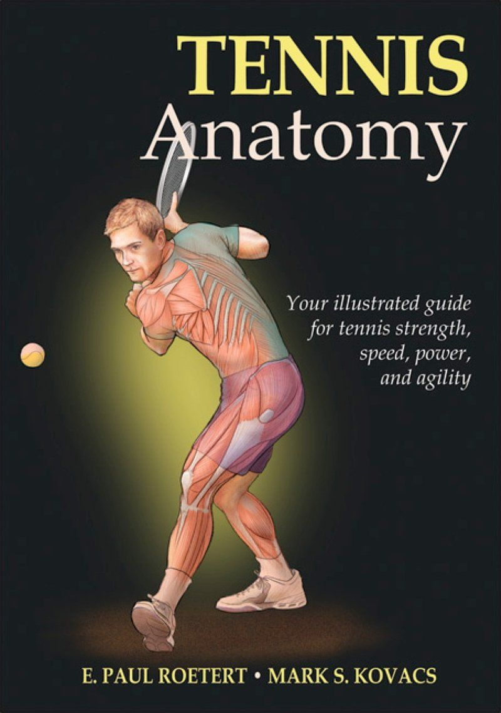
Bản dịch Việt ngữ này chỉ dùng cho mục đích học tập cá nhân, phi thương mại. Bản quyền tác phẩm gốc thuộc về tác giả và nhà xuất bản.
Phần Mở Đầu
Lời nói đầu và lời cảm ơn của hai tác giả.
Lời Nói Đầu
Lời Cảm Ơn
Cuốn sách này sẽ không thể thành công nếu không có sự cống hiến, huấn luyện và hỗ trợ mà chúng tôi đã nhận được trong nhiều năm qua từ nhiều chuyên gia y học và khoa học thể thao đã đồng hành cùng chúng tôi. Tất cả những suy nghĩ và ý tưởng của chúng tôi đều được định hình bởi những con người tận tâm này thông qua các khóa học, cuộc họp cá nhân, ấn phẩm và hội nghị. Chúng tôi không thể bắt đầu kể tên tất cả họ, nhưng chúng tôi thực sự mắc nợ họ. Một nhóm người khác có vai trò quan trọng trong cuộc sống của chúng tôi là nhiều huấn luyện viên và chuyên gia giảng dạy quần vợt, những người đã dạy và giúp đỡ chúng tôi trong lĩnh vực đào tạo vận động viên cũng như giáo dục huấn luyện. Human Kinetics nảy ra ý tưởng và theo đuổi mối quan tâm của chúng tôi, và Hiệp hội Quần vợt Hoa Kỳ (USTA) đã cho phép chúng tôi thực hiện dự án này. Chúng tôi đánh giá rất cao cơ hội mà cả hai tổ chức đã mang đến cho chúng tôi. Câu lạc bộ Boca West Country Club đã cung cấp sân tennis và cơ sở tập thể dục cho chúng tôi, điều mà chúng tôi rất biết ơn. Cuối cùng, chúng tôi xin cảm ơn gia đình của chúng tôi, đặc biệt là vợ của Paul, Barbara và vợ của Mark, Mary Jo, vì sự hỗ trợ và động viên của họ.
Phần I — Giải Phẫu và Vận Động Viên Quần Vợt
Nhu cầu thể lực, chuỗi động học, và giải phẫu chi tiết của vai, cánh tay, cổ tay, ngực, lưng, vùng lõi và đôi chân.
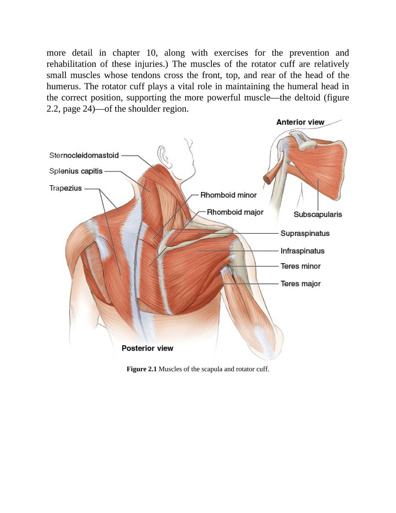
Tay Vợt Trong Chuyển Động
Những người chơi quần vợt ưu tú khiến việc này trông thật dễ dàng và dễ dàng. Khi so sánh, kỹ năng di chuyển, cú đánh và thể lực của bạn có thể không đạt được điều gì đó mong muốn. Huấn luyện viên giỏi có thể giúp bạn cải thiện kỹ thuật và thể lực, nhưng hãy nhớ rằng có nhiều khác biệt giữa các cá nhân, ngay cả ở cấp độ chuyên nghiệp. Bạn có thể thấy rằng Roger Federer và Rafael Nadal không chơi hoàn toàn giống nhau. Họ có điểm chung là mong muốn hoàn thiện các kỹ năng của mình và động lực tiếp tục cải thiện cả kỹ thuật lẫn sự chuẩn bị về thể chất. Tuy nhiên, kỹ thuật phù hợp chỉ có thể đạt được nếu bạn có thể thực hiện tất cả các chuyển động cần thiết trong phạm vi chuyển động cần thiết để định vị và thực hiện cú đánh tối ưu. Môn thể thao quần vợt đòi hỏi sức mạnh, sự linh hoạt, sức mạnh, sức bền và tốc độ. Mỗi thành phần này đòi hỏi một hệ thống cơ bắp được rèn luyện tốt. Ngoài ra, mỗi bề mặt sân mang đến một thử thách khác nhau. Ví dụ: sân đất nện yêu cầu người chơi phải chơi các trận đánh dài hơn - đôi khi lâu hơn tới 20% - so với sân cứng và sân cỏ thậm chí còn nhanh hơn hầu hết các sân cứng. Vì vậy, những người chơi thường chơi trên sân đất nện nên rèn luyện sức bền cơ bắp, trong khi những người chơi thường chơi trên các bề mặt nhanh hơn như sân cứng hoặc sân cỏ có thể muốn rèn luyện nhiều hơn để có sức mạnh cơ bắp hoặc ít nhất là sự kết hợp giữa sức bền và sức mạnh. Quần vợt là môn thể thao suốt đời và mục tiêu của nhiều người trong chúng ta là tiếp tục nâng cao thành tích của mình trong khi không bị chấn thương, dù chơi để giải trí, trong các giải đấu, ở cấp đại học hay thậm chí ở cấp độ chuyên nghiệp. Cách tốt nhất để làm điều này là tập luyện hiệu quả và sử dụng kỹ thuật phù hợp, tìm cách tạo ra những cú đánh tennis hiệu quả và hiệu quả. Hãy xem xét nhu cầu của môn quần vợt, nhưng hãy ghi nhớ phong cách chơi và cấu trúc cơ thể độc đáo của bạn.
Nhu Cầu Thể Lực Của Môn Quần Vợt
Kỹ năng di chuyển phù hợp là rất quan trọng để chơi quần vợt thành công. Một tay vợt thành công phải có khả năng nhận bóng sớm và bố trí đúng cách. Thông thường, điều này đòi hỏi khá nhiều bước điều chỉnh khi bạn nhận biết đường đi, độ xoáy và tốc độ của quả bóng tới. Trên thực tế, quần vợt thường được coi là trò chơi trong trường hợp khẩn cấp. Nó liên quan đến sự di chuyển liên tục, chạy nước rút ngắn và thường xuyên những thay đổi định hướng. Trung bình, mỗi điểm cần 3 đến 5 lần thay đổi hướng và không có gì lạ khi người chơi thực hiện hơn 500 lần thay đổi hướng trong một trận đấu hoặc buổi tập. Các trận đấu có thể kéo dài vài giờ, đòi hỏi thể lực tốt, nhưng những pha chạy nước rút ngắn, chuyển động bùng nổ và thay đổi hướng rõ ràng là kỵ khí. Do đó, cả hệ thống tim mạch và cơ bắp nên được rèn luyện bằng cách sử dụng các kiểu chuyển động tiêu biểu cho những gì được thấy khi chơi quần vợt. Trọng tâm lớn của chương trình đào tạo Phát triển Cầu thủ của Hiệp hội Quần vợt Hoa Kỳ (USTA) là di chuyển và định vị tốt. Rõ ràng là nếu không tiếp cận được bóng và tư thế đúng, bạn sẽ không thể đánh bóng một cách cân bằng nhất để tạo ra một cú đánh có lực. Chân là mắt xích đầu tiên truyền lực từ phần dưới lên phần trên của cơ thể. Đây là một phần của hệ thống liên kết động học hoặc chuỗi động học. Định luật thứ ba của Newton phát biểu rằng đối với mọi hành động đều có một phản ứng bình đẳng và ngược chiều. Khi bạn đánh một quả bóng tennis, bàn chân của bạn chạm vào mặt đất và mặt đất sẽ đẩy lùi lại. Điều này cho phép bạn truyền lực từ bộ phận này sang bộ phận tiếp theo, qua chân, hông, thân và cánh tay cho đến tận vợt. Điều quan trọng là thực hiện điều này theo cách hiệu quả và hiệu quả nhất bằng cách căn thời gian chính xác cho các phân đoạn, không bỏ sót bất kỳ phân đoạn nào và chuẩn bị cho cơ thể bạn đủ mạnh mẽ và linh hoạt để xử lý các căng thẳng áp đặt. Kỹ thuật thích hợp và sự chuẩn bị của hệ thống cơ bắp phải đi đôi với nhau. Phần thân dưới, phần giữa (lõi hoặc thân) và phần thân trên rất quan trọng trong quần vợt, nhưng mỗi phần có nhu cầu và yêu cầu tập luyện khác nhau. Luyện tập đôi chân là rất quan trọng để di chuyển hiệu quả trên sân. Nghiên cứu cho thấy các cơ ở cả hai chân đều bị căng như nhau khi chơi tennis, vì vậy các chương trình tập luyện nên phản ánh điều này. Vì phần lớn các chuyển động trong quần vợt là song song nên điều quan trọng là phải tập trung 60 đến 80% thời gian luyện tập vào các kiểu chuyển động này. Nói cách khác, tập luyện các chuyển động ngang kết hợp với cơ dạng, các cơ đưa chân ra xa trung tâm cơ thể và cơ khép, các cơ đưa chân về phía giữa cơ thể, ít nhất cũng quan trọng như việc rèn luyện các nhóm cơ khác của chân. Hãy coi phần giữa của cơ thể như một hình trụ khi tập luyện. Các bài tập nên được thiết kế để di chuyển phía trước, phía sau và bên của thân thông qua nhiều mặt phẳng chuyển động. Các cú đánh quần vợt đòi hỏi các chuyển động xoay cũng như uốn cong và mở rộng, thường là tất cả trong một cú đánh. Bên chiếm ưu thế của phần trên cơ thể tham gia vào mỗi cú đánh nhiều hơn so với bên không chiếm ưu thế. Vì vậy, bên cạnh việc đào tạo bên thống trị vì mục đích hiệu suất, bạn cần huấn luyện bên không thuận để giữ thăng bằng và ngăn ngừa chấn thương. Vì trận đấu có xu hướng bị chi phối bởi các cú giao bóng và thuận tay liên quan đến các cơ ở phía trước vai và ngực, nên hãy đảm bảo rèn luyện các cơ ở phía sau vai và lưng. Trong các cú đánh thuận tay và giao bóng, các cơ này trải qua sự lệch tâm, hoặc kéo dài, co và rút ngắn trong cú đánh trái tay thông qua các cơn co đồng tâm. Khi thiết kế chương trình tập luyện cho người chơi quần vợt, điều quan trọng là phải cân đối giữa thân trên và thân dưới, bên trái và bên phải, trước và sau. Tennis Anatomy sẽ đưa bạn qua từng bộ phận cơ thể và cung cấp cho bạn các bài tập phù hợp để đạt hiệu suất tối ưu.
Lối Chơi và Mặt Sân
Cân bằng cơ bắp là chìa khóa cho tất cả người chơi bất kể bề mặt hay phong cách chơi. Tuy nhiên, phong cách chơi và bề mặt bạn chơi thường xuyên nhất sẽ ảnh hưởng đến mục tiêu tập luyện và ảnh hưởng đến lựa chọn bài tập của bạn. Ví dụ, nếu bạn chơi nhiều điểm dài trên sân đất nện, bạn sẽ muốn rèn luyện sức bền, đặc biệt là ở phần thân dưới, thay vì sức mạnh và sức mạnh cơ bắp, điều này sẽ phù hợp hơn với một tay vợt chơi điểm ngắn hơn trên sân cứng. Nguyên tắc tương tự cũng áp dụng cho phần thân trên nhưng ở mức độ thấp hơn. Bạn vẫn có thể đánh bóng mạnh như vậy khi chơi trên sân chậm hơn; tuy nhiên, sức bền cơ bắp trở nên quan trọng hơn vì điểm dài hơn. Bất kể phong cách chơi hay bề mặt nào, phần thân trên cần được rèn luyện để có cả sức mạnh cơ bắp và sức bền.
Các Lối Chơi
Bạn có biết phong cách chơi của mình là gì không? Bạn có muốn vào lưới và đưa bóng đi bằng cú vô lê hoặc đánh đầu không? Hay bạn là kiểu tay vợt thích chơi lâu hơn đối thủ bằng cách không bao giờ bỏ lỡ bóng? Hay bạn thích đánh bóng mạnh từ vạch cuối sân, cố gắng ấn định điểm và giành chiến thắng? Cả ba phong cách đều có thể rất hiệu quả. Phong cách bạn sử dụng phụ thuộc vào kỹ năng, tính cách của bạn và có thể là bề mặt sân mà bạn chơi thường xuyên nhất. Hầu hết các huấn luyện viên đều phân loại người chơi thành bốn phong cách chơi khác nhau:
- Giao bóng và đánh vô-lê 2. Người đánh cơ bản tích cực 3. Kẻ phản đòn
- Cầu thủ toàn sân Ở cấp độ chuyên nghiệp cao nhất, vận động viên ném biên hung hãn là phổ biến nhất, tiếp theo là vận động viên toàn sân. Cầu thủ giao bóng và đánh vô-lê truyền thống cũng như tay vợt phản đòn khuôn mẫu không còn là phong cách chơi được ưa chuộng trong các giải đấu của nam hay nữ. Tuy nhiên, có thể thấy những người chơi quần vợt ở các cấp độ khác chơi từng phong cách khác nhau. Người giao bóng và người đánh vô-lê (hình 1.1, trang 4) dựa vào cú giao bóng để giúp xác định điểm. Sau khi giao bóng, cô ấy lao thẳng vào lưới. Thông thường, một vận động viên giao bóng và vô lê di chuyển về phía trước nhiều hơn từ 20 đến 40% so với một vận động viên phản đòn hoặc một vận động viên ném bóng hung hãn và nhiều hơn khoảng 20% so với một vận động viên toàn sân. Do chuyển động về phía trước này, người giao bóng và người bắt vô-lê thường thấy mình ở trên lưới, cố gắng dứt điểm. Kỹ thuật đánh vô-lê tốt là bắt buộc và đòi hỏi sức mạnh của chân tuyệt vời, đặc biệt là ở cơ tứ đầu, cơ mông lớn và cơ bụng. Cơ chân khỏe là điều quan trọng, đặc biệt là khi đánh những cú vô lê thấp đòi hỏi phải gập đầu gối đáng kể. Tính linh hoạt trong chức năng là rất quan trọng đối với người giao bóng và người đánh vô-lê vì cô ấy phải tiếp đất rất thấp hàng chục lần trong suốt trận đấu. Tương tự như vậy, sự linh hoạt của cổ tay rất hữu ích, đặc biệt là trong việc thực hiện những cú vô lê gây căng thẳng cho phạm vi cuối của khớp. Sự linh hoạt này cần được rèn luyện thường xuyên.
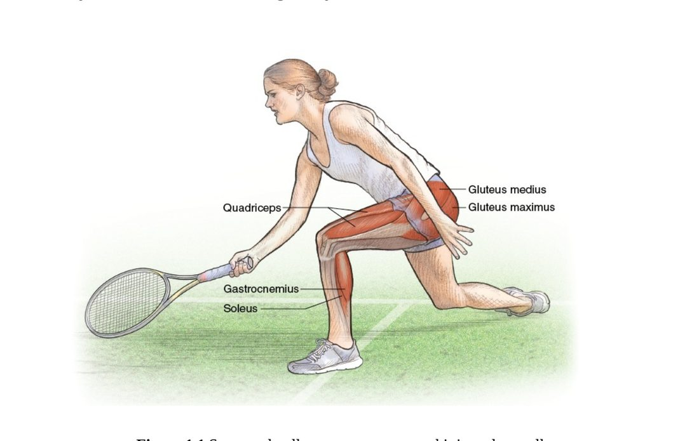
Người chơi cơ bản tích cực (hình 1.2, trang 4) thoải mái hơn khi thực hiện các cú đánh nền nhưng cũng tìm cách gây áp lực lên đối thủ bằng cách đánh những cú đánh mạnh và hung hãn. Mục tiêu của người chơi này là di chuyển ít hơn người phản đòn, và anh ta thích di chuyển trong sân và nhận bóng sớm hơn để giảm thời gian giữa các cú đánh của đối phương. Sức mạnh cơ bắp và sức bền là cần thiết, nhưng sức mạnh tổng thể là yếu tố thể chất chính giúp người đánh cơ bản hung hãn quyết định điểm. Sở hữu một vũ khí chính như cú thuận tay to hay cú trái tay mạnh bằng hai tay đều rất có lợi. Những cú đánh mạnh mẽ đòi hỏi sức mạnh cũng như tốc độ. Các bài tập huấn luyện nên tính đến điều này. Các bài tập cho phần thân dưới và phần giữa sẽ rất giống với những bài tập được đề cập dành cho những người chơi có phong cách khác, nhưng việc chú trọng nhiều hơn vào sức mạnh phần thân trên sẽ rất hữu ích. Các cơ ngực và phía trước vai rất quan trọng để tạo ra lực, nhưng đừng bỏ qua các cơ phía sau vai và lưng trên. Chúng giúp bảo vệ phức hợp vai và ngăn ngừa chấn thương.
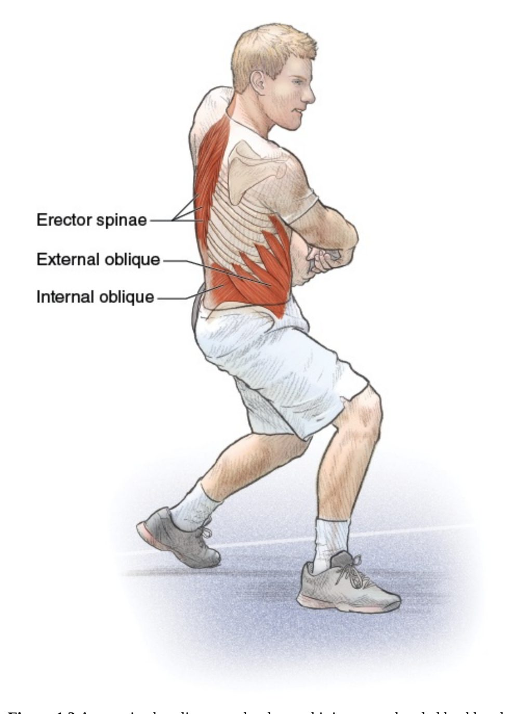
Mục tiêu của người phản công (hình 1.3) là đuổi theo từng đường bóng và đảm bảo đối thủ phải đánh nhiều đường bóng trong mỗi lượt đánh để giành điểm. Phong cách chơi này dựa trên chuyển động từ bên này sang bên kia và tính nhất quán của cú đánh. Người phản công di chuyển sang ngang từ 60 đến 80 phần trăm thời gian. Thường thì cô ấy sẽ duỗi người để đánh những cú thuận tay hoặc trái tay ở tư thế mở. Vì vậy, điều quan trọng là phải huấn luyện cơ dạng và cơ khép cũng như các nhóm cơ được đề cập cho người giao bóng và người đánh vô-lê trong một chương trình đào tạo toàn diện. Điều này bao gồm đào tạo tính linh hoạt cũng như sức mạnh. Người phản công phải phụ thuộc vào tốc độ, sự nhanh nhẹn và khả năng đổi hướng vì cô ấy có thể không thường xuyên đưa bóng đi cho cú ghi điểm trực tiếp. Kiểu chơi này hiệu quả nhất trên các sân có tốc độ chậm hơn. Sức bền cơ bắp của phần trên và phần dưới cơ thể là rất quan trọng. Các cơ xiên phải được huấn luyện để hỗ trợ các chuyển động xoay của tất cả các cú đánh tiếp đất vì người phản đòn đánh rất nhiều cú đánh, hầu hết đều ở tư thế mở. Ngoài ra, khi chơi phòng thủ giỏi, người phản công có thể đánh nhiều đòn khi bằng một chân, mất vị trí hoặc mất thăng bằng. Vì vậy, bắt buộc phải tập luyện cho những tình huống này trên sân bằng cách thực hiện các hoạt động bằng một chân và tập luyện trong môi trường không ổn định hoặc bất thường.
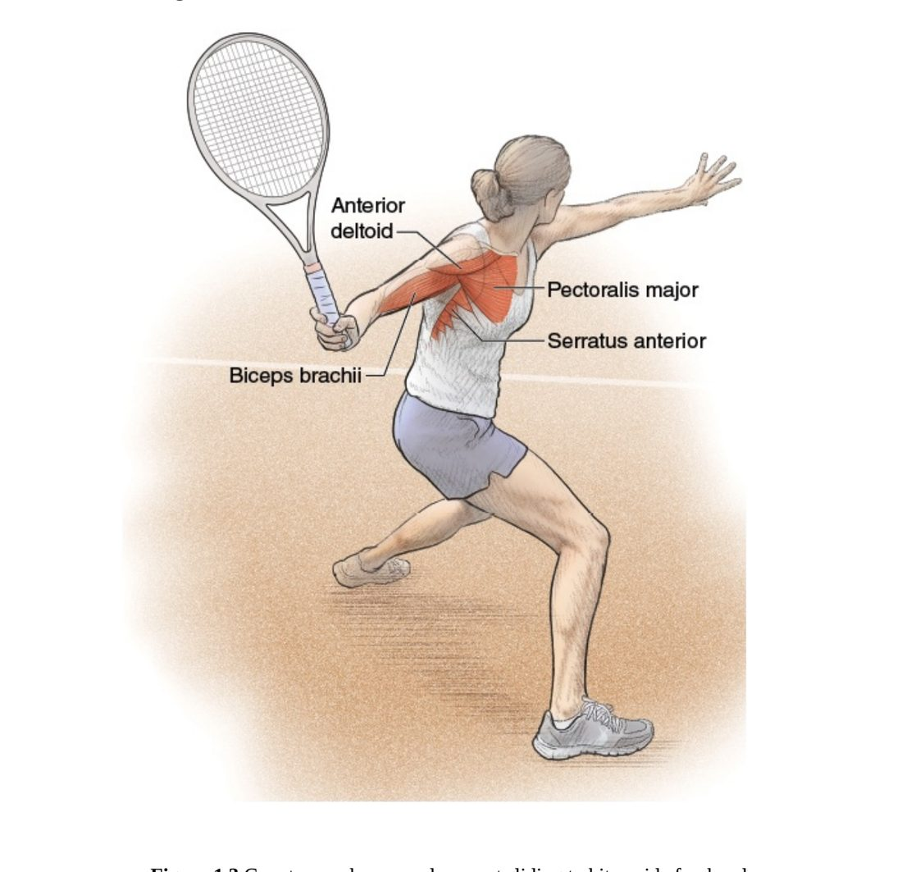
Cầu thủ toàn sân (hình 1.4, trang 6) có vẻ hung hãn khi thực hiện các cú đánh nền nhưng cũng rất vui khi thực hiện các cú đánh mạnh mẽ vào lưới để ghi điểm. Tất cả các cú đánh, từ giao bóng, tiếp đất cho đến vô lê, đều đòi hỏi sự chú ý như nhau trong quá trình luyện tập. Ngoài ra, cần dành thời gian đáng kể cho trò chơi chuyển tiếp, luyện tập các cú đánh giúp tay vợt chạy toàn sân vào lưới. Cầu thủ toàn sân nên thường xuyên thực hành các cú đánh tiếp cận, chẳng hạn như cú đánh thuận tay lớn hoặc cú đánh trái tay từ nửa sân và theo dõi từng cú đánh vào lưới. Những cú đánh này đòi hỏi sự di chuyển và định vị tuyệt vời, thường là với tư thế khép kín hơn so với những cú đánh nền thông thường. Các bài tập cho cả thân trên và thân dưới đều có lợi, đặc biệt là các bài tập giúp phát triển chuyển trọng lượng và chuyển động vào sân như bài tập nhện (trang 174) và bước tách với bài tập kích thích (trang 177) ở chương 9. Điều quan trọng là phải tập luyện tất cả các nhóm cơ. Trọng tâm chính là cân bằng giữa trái và phải, trước và sau, thân trên và thân dưới.
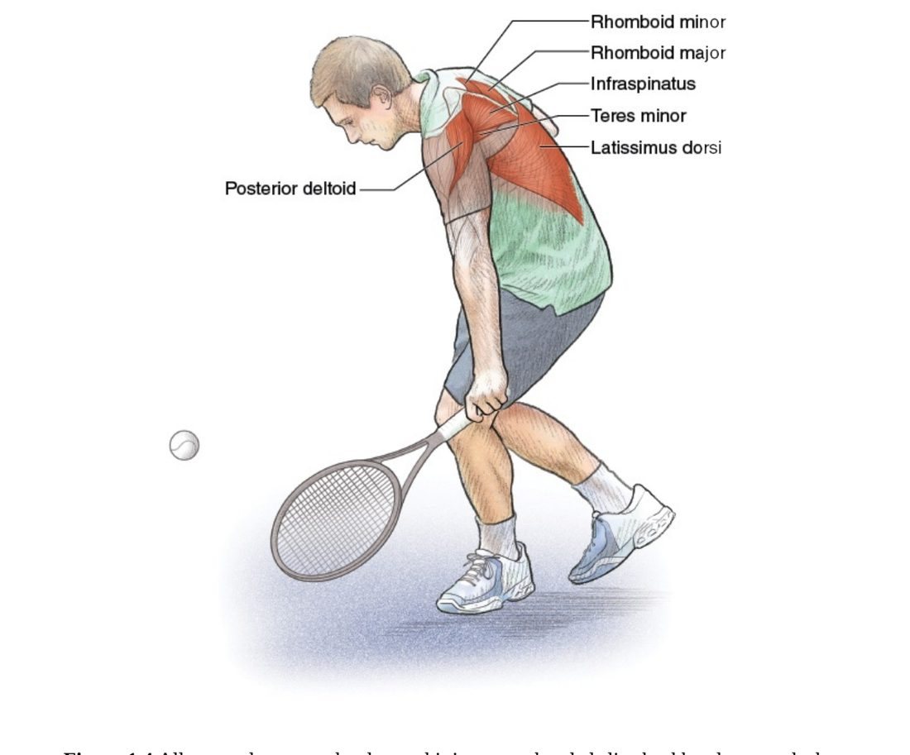
Các Loại Mặt Sân
Bề mặt sân quyết định phong cách chơi ở một mức độ nhất định. Nhìn chung, người giao bóng và vô-lê có thể thành công hơn trên sân cỏ nhanh hơn trên sân đất nện. Một tay đấm phản công thường thành công hơn trên sân đất nện chậm hơn bất kỳ bề mặt nào khác. Vì bóng nảy thấp hơn trên sân cỏ và sân cứng nhanh nên người chơi phải có khả năng uốn cong đầu gối tốt. Việc tập luyện nên tập trung vào các bài tập đưa cơ thể thực hiện cùng một phạm vi chuyển động dự kiến trong một trận đấu (ví dụ: lung tung toàn bộ và squats), với khả năng phục hồi mạnh mẽ. Người chơi chơi trên sân đất nện thường phải trượt vào các cú đánh của mình trong khi đánh thuận tay hoặc trái tay rộng. Vì chơi trên sân đất nện không chỉ đòi hỏi sức mạnh của chân trước và chân sau mà còn cả cơ bắp.
sức mạnh của bên trong và bên ngoài của chân, điều quan trọng là phải huấn luyện cơ dạng và cơ dẫn. Sức bền cơ bắp nên là trọng tâm. Các nhà nghiên cứu đã so sánh tốc độ bóng trên sân cứng và sân đất nện. Sau khi bóng tiếp đất trên sân đất nện, tốc độ của bóng thường giảm 15% so với cùng một quả bóng trên sân cứng. Đây là lý do chính tại sao điểm trên sân đất nện dài hơn và có nhiều cú đánh hơn trong mỗi lượt đánh. Điểm dài hơn trên sân đất nện sẽ làm tăng nhịp tim một chút so với điểm ngắn hơn trên sân cứng. Vì vậy, việc tập luyện để chuẩn bị thi đấu trên sân đất nện sẽ đòi hỏi chú trọng nhiều hơn vào việc điều hòa khí lực so với việc tập luyện để thi đấu trên sân cứng. Trò chơi giao bóng đòi hỏi thể chất nhiều hơn trò chơi trả giao, vì vậy những người chơi có cú giao bóng yếu hơn cần chuẩn bị để chơi những điểm dài hơn và sử dụng phong cách đòi hỏi thể chất nhiều hơn.
Các Cú Đánh Quần Vợt
Tennis Anatomy có nhiều bài tập để cải thiện trò chơi quần vợt của bạn. Một số là các bài tập đa khớp, chẳng hạn như lunge, sử dụng hông, đầu gối và mắt cá chân. Những bài khác là các bài tập đơn khớp, chẳng hạn như nâng cao bắp chân, chỉ sử dụng khớp mắt cá chân. Tất cả các bài tập sẽ hữu ích để ngăn ngừa chấn thương và nâng cao hiệu suất. Việc có được vóc dáng cân đối để chơi quần vợt cũng quan trọng như việc sử dụng quần vợt để có được vóc dáng cân đối. Vì vậy, các bài tập trong các chương sau sẽ giúp bạn chuẩn bị đưa trò chơi của mình lên một tầm cao mới. Để xác định xem mỗi bài tập mang lại lợi ích như thế nào cho trận đấu của bạn, chúng tôi cung cấp các biểu tượng để chỉ ra các cú đánh cụ thể—cú đánh nền (thuận tay và trái tay), giao bóng và đánh từ trên cao, cũng như cú vô lê (thuận tay và trái tay)—sẽ được hưởng lợi từ bài tập điều hòa. Trong phần này, chúng tôi giải thích các cú đánh chính và cách các hành động, cơ và sự co cơ có liên quan với nhau để tạo ra các cú đánh hiệu quả và mạnh mẽ.
Các cú đánh nền thuận tay và trái tay
Trong 30 năm qua, những thay đổi lớn nhất trong quần vợt có thể đã xảy ra do những thay đổi trong công nghệ vợt. Vợt được làm từ nhiều loại vật liệu khác nhau, rộng hơn và cứng hơn, có điểm ngọt lớn hơn. Điều này đã có tác động to lớn đến trò chơi, không gì khác hơn là ở những bước đột phá. Điểm ngọt lớn hơn giúp dễ dàng thực hiện các cú đánh lệch tâm hơn và chất liệu vợt cho phép những cú vung vợt mạnh hơn. Vì những thay đổi này, các cú đánh thuận tay và trái tay cũng đã thay đổi. Những cú xoay dài, uyển chuyển và theo hướng của mục tiêu đã nhường chỗ cho những cú xoay xoay, bạo lực hơn, kết thúc trên cơ thể ở nhiều vị trí khác nhau tùy thuộc vào kiểu bắn. Những kiểu xoay này cho phép người chơi đánh bóng từ tư thế cởi mở hơn, đặc biệt khi đánh thuận tay cũng như khi đánh trái tay bằng hai tay. Thành phần quay này có thể gây áp lực đáng kể lên phần giữa. Vì vậy, các bài tập chuẩn bị cho cơ thể trước những căng thẳng này là cực kỳ quan trọng. Nhiều hoạt động của cơ ở phần thân dưới tương tự nhau đối với tất cả các cú đánh quần vợt. Có sự tác động qua lại giữa các động tác lệch tâm (kéo dài) và đồng tâm (rút ngắn) cho phép cơ thể tích trữ và giải phóng năng lượng dựa trên pha của mỗi cú đánh. Ngoài ra, mỗi cú đánh yêu cầu xoay thân cây, đối với các cú đánh nền, giao bóng và đánh đầu cao hơn là đối với các cú vô lê. Các cú đánh thuận tay, giao bóng và đánh trên cao khác với các cú đánh trái tay bằng một và hai tay ở chỗ các cơ trên cơ thể được kích hoạt theo cách ngược lại. Các cơ ở lưng trên và phía sau vai hoạt động đồng tâm (rút ngắn) trong giai đoạn tải và lệch tâm (kéo dài) trong giai đoạn tiếp theo. Các cơ ngực và phía trước vai đầu tiên co lệch tâm trong quá trình vung vợt về phía sau và sau đó đồng tâm trong quá trình vung gậy về phía trước. Cú đánh trái tay theo một mô hình ngược lại. Cú chạm đất thuận tay Cú đánh thuận tay có thể được thực hiện từ thế đứng mở, thế đứng vuông góc hoặc thế đứng đóng. Mỗi vị trí cơ thể yêu cầu cơ chế phần thân trên và phần dưới cơ thể khác nhau, mặc dù cả ba tư thế đều sử dụng sự kết hợp giữa động lượng góc và động lượng tuyến tính để tạo lực cho cú đánh. Động lượng tuyến tính là tích của cả khối lượng và vận tốc và có thể được tạo ra theo cả hướng thẳng đứng và hướng ngang. Động lượng góc đề cập đến thành phần quay của hành trình và tính đến cả mômen quán tính đối với một trục (lực cản quay quanh trục đó) và vận tốc góc đối với trục đó. Cả động lượng tuyến tính và động lượng góc đều là nền tảng cho việc tạo ra lực thành công ở cú thuận tay. Lượng động lượng tuyến tính được tạo ra ảnh hưởng đến lượng lực quay được tạo ra đối với từng đoạn cơ thể. Cú thuận tay trong tư thế mở (hình 1.5) tạo ra tổng chuyển động xoay cơ thể lớn nhất và đòi hỏi sức mạnh và tính linh hoạt cao hơn trên toàn bộ phần lõi và phần dưới cơ thể so với cú thuận tay trong tư thế vuông góc hoặc tư thế đóng. Các cú thuận tay vuông góc và khép kín yêu cầu ít xoay ở lõi hơn và tiếp xúc bóng được thực hiện nhiều hơn ở phía trước người chơi và gần lưới hơn. Điều quan trọng là phải hiểu rằng mỗi quan điểm đều tùy thuộc vào từng tình huống cụ thể. Nói cách khác, bạn đang ở đâu trên sân, loại bóng bay tới bạn (cả tốc độ và độ xoáy) và cú đánh của bạn.
cố gắng đánh thường ảnh hưởng đến thế đứng của bạn.
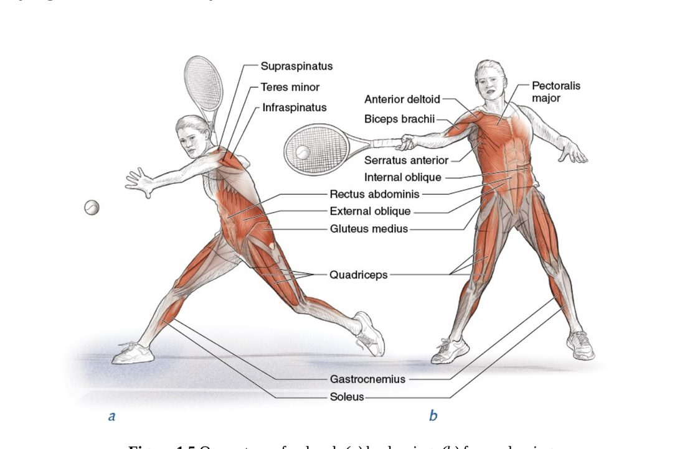
Cú thuận tay thế mở là cú thuận tay được sử dụng phổ biến nhất trong trò chơi ngày nay. Cú đánh này đòi hỏi phải xoay hông và thân trên mạnh mẽ để truyền năng lượng hiệu quả từ phần thân dưới qua lõi vào vợt và bóng khi va chạm. Xoay thân cây, dang vai ngang và xoay trong là những chuyển động chính tạo nên tốc độ vợt ở cú thuận tay. Sau khi va chạm bóng, lực lệch tâm giúp vợt giảm tốc độ. Điều này đặc biệt quan trọng vì nó liên quan đến việc ngăn ngừa chấn thương. Trong quá trình vung ra sau của cú đánh đất thuận tay (hình 1.5a), cơ bắp chân, cơ dép, cơ tứ đầu, cơ mông và cơ xoay hông co lệch tâm để chịu tải cho cẳng chân và bắt đầu xoay hông. Các cơn co đồng tâm của giai đoạn xoay thân bao gồm cơ chéo trong cùng bên và cơ chéo ngoài đối bên, trong khi các cơn co lệch tâm kéo theo cơ chéo trong đối bên, cơ chéo ngoài cùng bên, cơ bụng và cơ dựng cứng. Các cơn co đồng tâm của vai và xoay cánh tay trên trong mặt phẳng ngang được thực hiện bởi cơ delta giữa và sau, cơ lưng rộng, cơ dưới gai, cơ tròn bé và tiếp theo là sự co bóp của cơ duỗi cổ tay. Các cơn co lệch tâm của vai và xoay cánh tay trên trong mặt phẳng ngang được thực hiện bởi cơ delta trước, cơ ngực lớn và cơ dưới vai. Trong quá trình xoay về phía trước (hình 1.5b), cơ sinh đôi, cơ dép, cơ tứ đầu, cơ mông và cơ xoay hông co cả đồng tâm và lệch tâm để điều khiển phần thân dưới và xoay hông. Sự co đồng tâm và lệch tâm của các cơ xiên, cơ duỗi lưng và cơ dựng cột sống làm cho thân mình xoay. Các cơ lưng to, cơ delta trước, cơ dưới vai, bắp tay và cơ ngực lớn đều co đồng tâm trong giai đoạn tăng tốc để đưa vợt tới bóng để tiếp xúc. Trong quá trình theo dõi, chuyển động của cánh tay trên giảm tốc thông qua các cơn co lệch tâm của cơ dưới gai, cơ tròn nhỏ, cơ delta sau, cơ thoi, cơ răng trước, cơ thang, cơ tam đầu và cơ duỗi cổ tay. Cú đánh trái tay bằng một tay Cú đánh trái tay bằng một tay (hình 1.6, trang 10) liên quan đến tổng lực tương tự như cú đánh thuận tay, nhưng cũng có những khác biệt quan trọng. Sức mạnh và sức bền cơ bắp của cơ duỗi cổ tay rất quan trọng để thực hiện thành công cú đánh trái tay lặp đi lặp lại. Nghiên cứu đã chỉ ra rằng mô-men xoắn ở cổ tay có thể tạo ra sự giãn nở nhanh chóng của cơ duỗi cổ tay, đặc biệt ở những người chơi có tiền sử khuỷu tay quần vợt (viêm mỏm lồi cầu ngoài). Đối với cú đánh trái tay bằng một tay, vai thuận ở phía trước cơ thể. Thông thường, hành trình sử dụng ít động tác xoay thân cây hơn; tuy nhiên, nó đòi hỏi hành động phối hợp nhiều hơn của các phần cơ thể khác nhau, bao gồm cả xoay vai và cẳng tay, so với trái tay bằng hai tay. Chân trước tham gia nhiều hơn khi đánh trái tay bằng một tay so với khi đánh trái tay bằng hai tay. Tốc độ vợt tương tự có thể đạt được với các cú đánh trái tay bằng một và hai tay. Sức mạnh và sự linh hoạt, đặc biệt là các cơ ở lưng trên và sau vai, là chìa khóa. Thực hiện các bài tập huấn luyện song phương để đạt được sự cân bằng cơ bắp. Trong quá trình vung vợt sau của cú đánh trái tay bằng một tay (hình 1.6a), cơ bắp chân, cơ dép, cơ tứ đầu, cơ mông và cơ xoay hông co lệch tâm để chịu tải cho hai chân và bắt đầu xoay hông. Sự co đồng tâm của cơ chéo trong cùng bên và cơ chéo ngoài đối bên được cân bằng bởi sự co lệch tâm của cơ chéo trong đối bên, cơ chéo ngoài cùng bên, cơ bụng và cơ dựng đứng để xoay thân. Cơ delta trước, cơ ngực lớn, cơ dưới vai và cơ duỗi cổ tay co đồng tâm để xoay vai và cánh tay trên qua mặt phẳng ngang khi cơ delta sau, cơ dưới gai, cơ tròn bé, cơ thang, cơ thoi và cơ răng trước co lệch tâm.
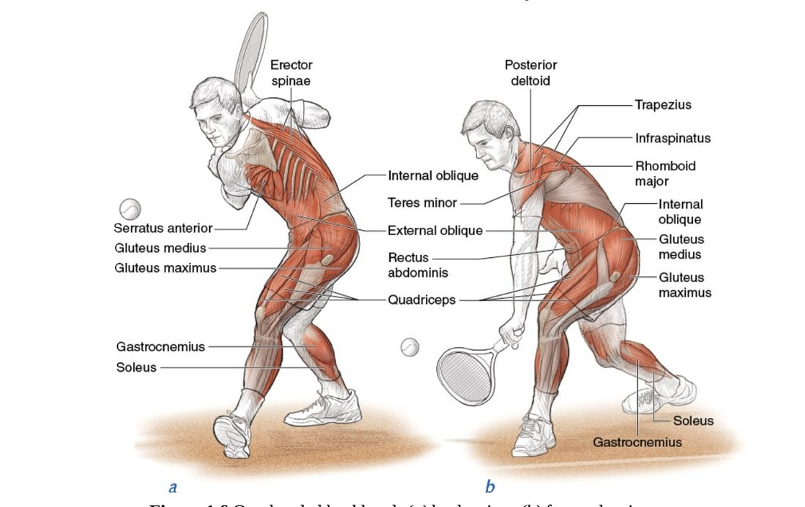
Trong quá trình xoay về phía trước (hình 1.6b), phần thân dưới và chuyển động xoay của hông được điều khiển bởi các cơn co đồng tâm và lệch tâm của cơ sinh đôi, cơ dép, cơ tứ đầu, cơ mông và cơ xoay hông. Sự co đồng tâm và lệch tâm của các cơ xiên, cơ duỗi lưng và cơ dựng cột sống khiến thân người xoay vào cú đánh. Giai đoạn tăng tốc của cánh tay trên được thực hiện thông qua các cơn co đồng tâm của cơ dưới gai, cơ tròn bé, cơ delta sau và cơ thang. Trong quá trình thực hiện tiếp theo, các cơ dưới vai, cơ ngực lớn, bắp tay và cơ gấp cổ tay co lệch tâm để giảm tốc độ của cánh tay trên. Cú đánh trái tay bằng hai tay Nhiều người chơi được hưởng lợi từ cú đánh trái tay bằng hai tay (hình 1.7), đặc biệt là trong giai đoạn đầu học. Cả hai cánh tay đều được sử dụng, làm tăng sức mạnh của cú đánh và sử dụng ít phân đoạn cơ thể hơn, điều này giúp người chơi đang học cách phối hợp chuyển động. Những lợi ích này giúp người chơi đánh bóng trong vùng tấn công và những quả bóng nảy cao hơn phải được đánh cao hơn vai. Mặc dù hai- trái tay bằng tay sử dụng nhiều nhóm cơ giống như trái tay một tay, trái tay bằng hai tay yêu cầu xoay thân nhiều hơn so với trái tay bằng một tay. Vì vậy, các cơ ở thân và phần giữa cần được rèn luyện tốt, đặc biệt là cơ xiên trong và cơ xiên ngoài. Điều này đặc biệt quan trọng trong các cú đánh trái tay có tư thế mở, vốn đang trở nên phổ biến hơn ở mọi cấp độ của trò chơi. Ngoài ra, đôi chân cần được rèn luyện để tạo ra một điểm tựa ổn định, truyền lực từ mặt đất vào vợt một cách hợp lý và mang lại sức bền cho những trận đấu kéo dài. Một lĩnh vực duy nhất của trái tay bằng hai tay là việc sử dụng cánh tay và cổ tay không thuận. Các cơ gấp và duỗi của cẳng tay và cổ tay không thuận cũng như các cơ liên quan đến độ lệch trục và hướng tâm phải được huấn luyện phù hợp.
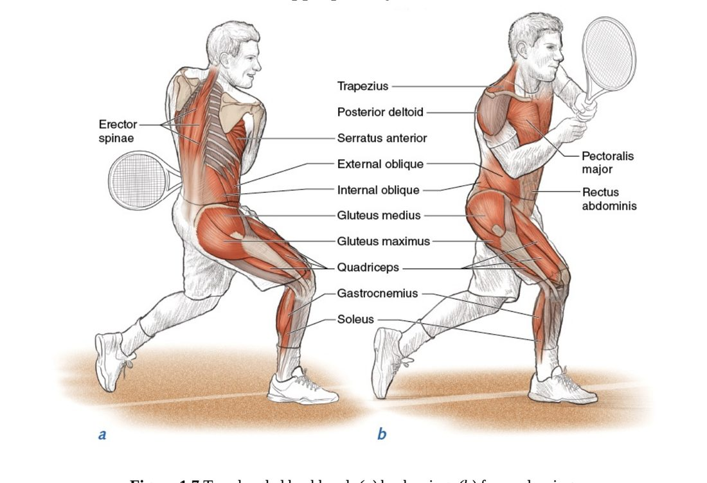
Trong quá trình backswing (hình 1.7a), các cơn co lệch tâm của cơ sinh đôi, cơ dép, cơ tứ đầu, cơ mông và cơ xoay hông sẽ tạo lực cho hai chân và bắt đầu xoay hông. Sự co đồng tâm của cơ chéo trong cùng bên và cơ chéo ngoài đối bên được hỗ trợ bởi sự co lệch tâm của cơ chéo trong đối bên, cơ chéo ngoài cùng bên, cơ bụng và cơ dựng cứng cột sống. Vai và cánh tay trên của bên chiếm ưu thế xoay qua mặt phẳng ngang thông qua các cơn co đồng tâm của cơ delta trước, cơ ngực lớn, cơ dưới vai, cơ duỗi cổ tay và các cơn co lệch tâm của cơ delta sau, cơ dưới gai, cơ tròn bé, cơ thang, cơ rhomboids và cơ răng trước. Ở phía không thuận, các cơn co đồng tâm của cơ delta giữa và sau, cơ to lớn dorsi, cơ dưới gai, cơ tròn bé và cơ duỗi cổ tay tạo ra chuyển động xoay của vai và cánh tay trên, được hỗ trợ bởi các cơn co lệch tâm của cơ delta trước, cơ ngực lớn và cơ dưới vai. Trong quá trình xoay về phía trước (hình 1.7b), các cơn co đồng tâm và lệch tâm của cơ sinh đôi, cơ dép, cơ tứ đầu, cơ mông và cơ xoay hông sẽ điều khiển phần thân dưới và xoay hông. Các cơn co đồng tâm và lệch tâm của các cơ xiên, cơ duỗi lưng và cơ dựng cột sống làm xoay thân. Cánh tay trên của bên chiếm ưu thế di chuyển tới quả bóng thông qua các cơn co đồng tâm của cơ dưới gai, cơ tròn nhỏ, cơ delta sau và cơ thang. Ở phía không thuận, các cơn co đồng tâm của cơ delta trước, cơ dưới vai, cơ nhị đầu, cơ răng trước và cơ ngực lớn đưa cánh tay về phía bóng. Trong quá trình thực hiện tiếp theo, cánh tay thuận giảm tốc thông qua các cơn co lệch tâm của cơ dưới vai, cơ ngực lớn và cơ gấp cổ tay. Cánh tay không thuận giảm tốc thông qua các cơn co lệch tâm của cơ dưới gai, cơ tròn bé, cơ delta sau, cơ thoi, cơ răng trước, cơ thang, cơ tam đầu và cơ duỗi cổ tay.
Giao Bóng và Đánh Trên Đầu
Giao bóng là một trong những cú đánh quan trọng nhất trong quần vợt. Mỗi người chơi bắt đầu một nửa số điểm bằng một quả giao bóng mà anh ta có thời gian chuẩn bị. Cú giao bóng đã trở thành một vũ khí thực sự trong trò chơi vì nó có thể quyết định phần lớn những gì xảy ra ở thời điểm tiếp theo. Vì kiểu xoay của cú đánh trên cao khá giống với kiểu giao bóng nên chúng tôi cũng đưa nó vào phần này. Từ góc độ chiến lược và chiến thuật, chìa khóa chính để giao bóng thành công là tốc độ, độ xoáy và vị trí. Các người giao bóng tốt nhất kết hợp cả ba thành phần. Tất nhiên, sự chuẩn bị về thể chất để phát triển sức mạnh, sức mạnh, sự linh hoạt và khả năng phối hợp sẽ quyết định chất lượng của ba thành phần này. Một cú giao bóng tốt đã trở nên quan trọng hơn trong quần vợt chuyên nghiệp. Thống kê từ Giải vô địch quần vợt Mỹ mở rộng năm 2009 cho thấy ở nội dung nam, 5 trong số 10 tay vợt xếp hạng cao nhất cũng có tốc độ giao bóng cao nhất. Trò chơi dành cho nữ cũng đi theo xu hướng tương tự. Bạn cũng có thể biến cú giao bóng thành một vũ khí thực sự bằng cách chuẩn bị cơ thể cho sự khắc nghiệt của việc giao bóng ở cấp độ cao trong suốt trận đấu.
trận đấu. Trong trò chơi hiện đại, chúng ta thấy có hai loại giao bóng: giao bóng bằng chân (hình 1.8) và giao bóng bằng chân sau (hình 1.9, trang 14). Hoặc giao bóng đều được chấp nhận. Thông thường, người chơi chọn cú giao bóng nào để sử dụng dựa trên sở thích và phong cách cá nhân. Trong cú giao bóng bằng chân, chân sau thường bắt đầu ở vị trí tương tự như đối với cú giao bóng bằng chân sau. Tuy nhiên, trong quá trình tung bóng và vung vợt ra sau, bàn chân sau trượt lên để nối với bàn chân trước. Điều này cho phép chuyển trọng lượng về phía trước nhiều hơn cũng như khả năng mở hông dễ dàng hơn trong quá trình vung gậy về phía trước. Vị trí đặt chân sau cho phép tạo ra một vị trí cân bằng hơn một chút và có thể tạo ra lực hướng lên trên (theo chiều dọc) nhiều hơn.
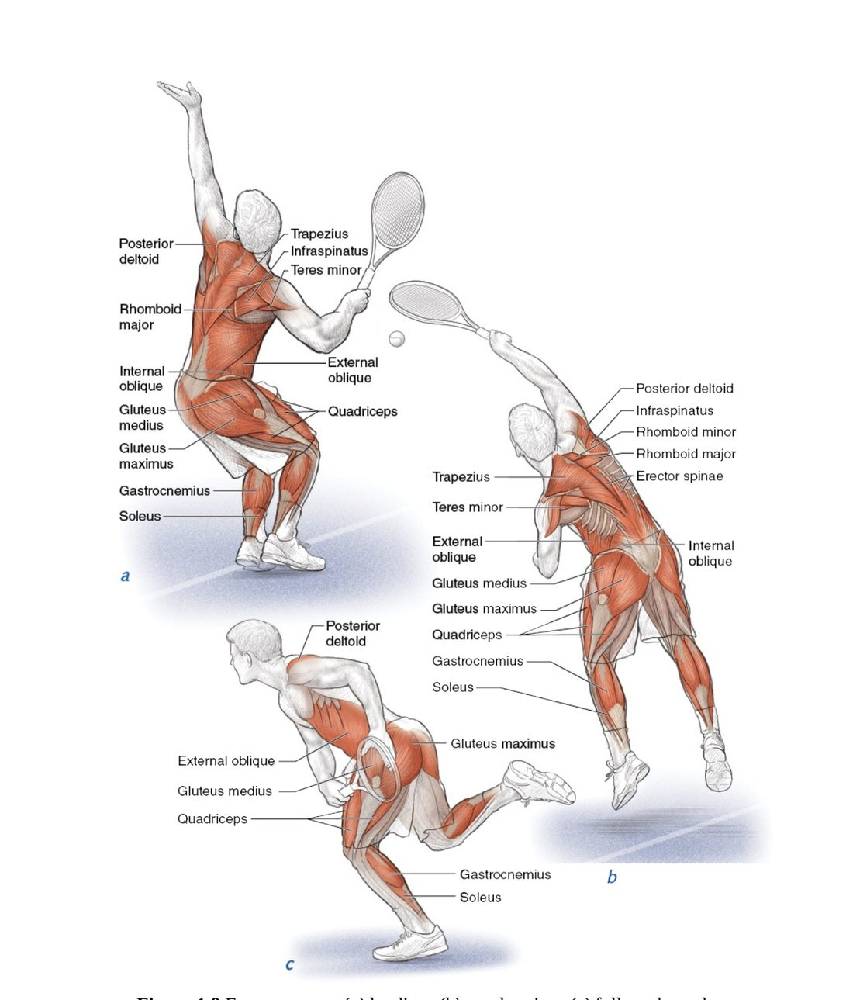
Việc thực hiện cú giao bóng hoặc cú giao bóng có ba giai đoạn chính: tải, tăng tốc và theo dõi. Trong giai đoạn nạp (hoặc chuẩn bị), bạn đang tích trữ năng lượng. Giai đoạn tăng tốc là khi bạn giải phóng năng lượng qua điểm cuối của tiếp xúc bóng. Giai đoạn cuối cùng, giai đoạn tiếp theo (hoặc giảm tốc), đòi hỏi lực lệch tâm lớn để giúp kiểm soát sự giảm tốc của phần thân trên và phần dưới.
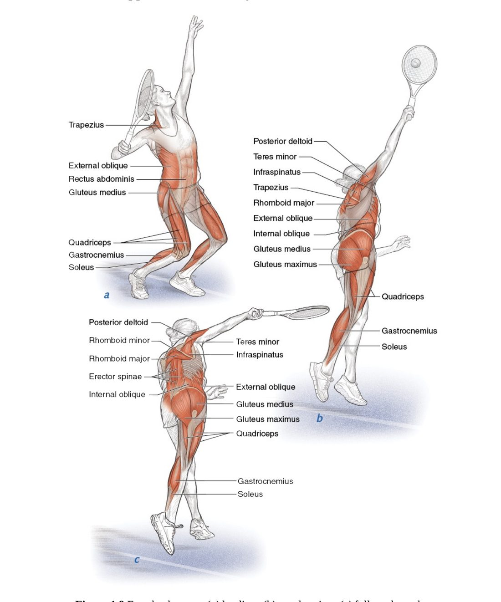
Một cú giao bóng hoặc cú đánh trên cao thành công là kết quả của sự tổng hợp các lực từ mặt đất thông qua toàn bộ chuỗi động học và đến quả bóng khi va chạm. Sự uốn cong đầu gối (co thắt lệch tâm của cơ tứ đầu) xảy ra để kích thích lực phản ứng mặt đất hiệu quả, khía cạnh tạo lực chính đầu tiên của chuyển động giao bóng. Sự uốn cong đầu gối này thường được định nghĩa là tải trọng cơ thể thấp hơn. Các cơ sinh đôi, cơ dép, cơ tứ đầu, cơ mông và cơ xoay hông co lệch tâm để chịu tải cho chân và bắt đầu xoay hông. Trong giai đoạn giao bóng hoặc ném bóng qua đầu này, sự quay ngược chiều của thân, lõi và phần trên cơ thể xảy ra để tích trữ thế năng mà cuối cùng sẽ được sử dụng trong chuyển động giao bóng để truyền năng lượng thông qua va chạm. Trong giai đoạn chịu tải này, việc gập vai sang một bên cũng làm tăng khả năng dự trữ năng lượng. Năng lượng này sẽ được giải phóng ngay trước và trong khi bóng va chạm. Các cơ xiên, cơ bụng và cơ duỗi thân co đồng tâm và lệch tâm để xoay thân. Trong giai đoạn nghiêng cánh tay của cú giao bóng hoặc qua đầu tại điểm xoay vai ngoài tối đa, vai thuận có thể xoay tới 170 độ. Các cơ duỗi, cơ xiên và cơ bụng co đồng tâm và lệch tâm để mở rộng và xoay thân. Các cơn co đồng tâm của cơ dưới gai, cơ tròn bé, cơ trên gai, bắp tay, cơ răng trước, cơ duỗi cổ tay và các cơ co lệch tâm của cơ dưới vai và cơ ngực lớn làm cử động cánh tay. Từ vị trí này có một thành phần thẳng đứng bùng nổ dẫn đến sự co đồng tâm của các của cánh tay và vai thuận. Các cơ ở phía trước ngực và thân (ngực, bụng, cơ tứ đầu và bắp tay) là các cơ tăng tốc chính của cánh tay trên, trong khi các cơ ở phía sau cơ thể (các cơ vòng quay, cơ thang, cơ thoi và cơ duỗi lưng) là các cơ giảm tốc chính trong quá trình theo dõi. Động tác đẩy chân được thực hiện thông qua các cơn co đồng tâm của cơ sinh đôi, cơ dép, cơ tứ đầu, cơ mông và các cơn co lệch tâm của gân kheo. Các cơn co thắt đồng tâm của cơ bụng và cơ xiên và các cơn co lệch tâm của các cơ duỗi lưng sẽ uốn cong và xoay thân cây. Việc nâng cao và chuyển động về phía trước của cánh tay đạt được thông qua sự co đồng tâm của cơ dưới vai, cơ ngực lớn, cơ delta trước và cơ tam đầu. Khuỷu tay kéo dài thông qua sự co đồng tâm của cơ tam đầu và sự co lệch tâm của bắp tay. Các cơn co đồng tâm của cơ lưng rộng, cơ dưới vai, cơ ngực lớn và cơ quay sấp của cẳng tay sẽ xoay vai và sấp cẳng tay vào bên trong. Sự uốn cong của cổ tay được tạo ra thông qua sự đồng tâm sự co bóp của cơ gấp cổ tay. Khi người chơi tiếp đất, các cơn co thắt lệch tâm của cơ sinh đôi, cơ dép, cơ tứ đầu và cơ mông sẽ làm cơ thể giảm tốc độ. Các cơn co lệch tâm và đồng tâm của cơ duỗi lưng, cơ xiên và cơ bụng uốn cong và xoay thân. Các cơn co lệch tâm của cơ dưới gai, cơ tròn nhỏ, cơ răng trước, cơ thang, hình thoi, cơ duỗi cổ tay và cơ ngửa cẳng tay làm giảm tốc độ của cánh tay trên. Chuyển động qua đầu và kỹ thuật tương tự như chuyển động giao bóng. Điều này đặc biệt đúng khi người chơi giữ chân trên mặt đất khi thực hiện động tác từ trên cao (hình 1.10). Thông thường, cú đánh trên cao này được sử dụng để trả một cú lốp bóng ngắn hoặc khi bóng nảy lên trước. Sự tham gia của cơ bắp cũng giống như đối với cú giao bóng; tuy nhiên, kiểu xoay, đặc biệt là động tác vung vợt sau, có thể rút ngắn lại một chút do hạn chế về thời gian. Cú đá cắt kéo qua đầu (hình 1.11) có kiểu xoay tương tự cho phần thân trên, nhưng hành động của phần thân dưới bao gồm cất cánh từ chân sau và hạ cánh bằng chân đối diện sau khi bóng được đánh. Động tác đá cắt kéo này tạo ra lực và giúp tiếp cận và giữ thăng bằng trong và sau khi đánh. Cần có sự tham gia đồng tâm đáng kể từ cơ mông, cơ tứ đầu, cơ bụng và cơ dép, đặc biệt là ở chân cất cánh. Những cơ tương tự này hoạt động như một bộ giảm xóc (co lệch tâm) ở chân tiếp đất.
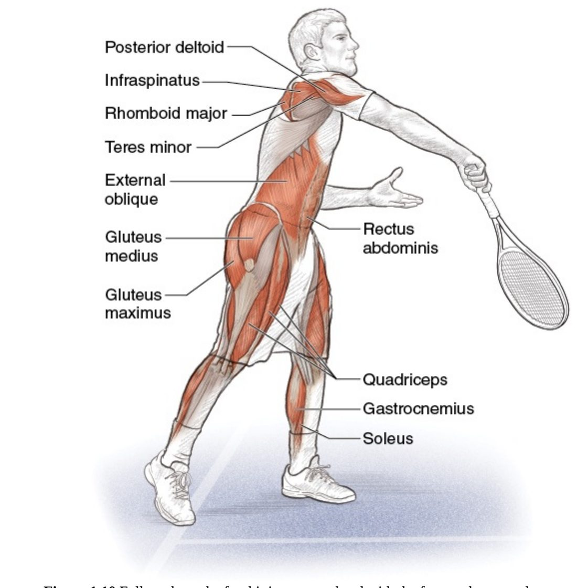
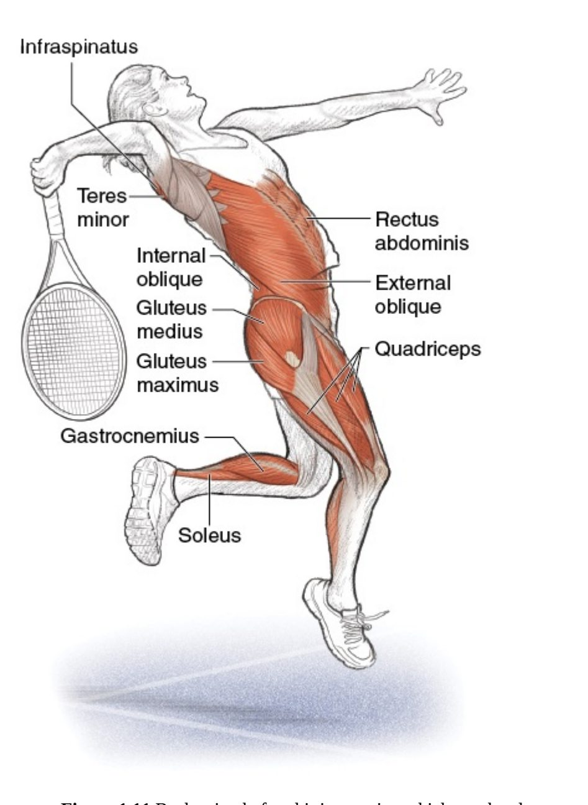
Cú Bắt Bóng Lưới (Volley)
Mặc dù các tay vợt ưu tú không vào lưới nhiều như trước vì các đường chuyền đã được cải thiện đáng kể với thiết bị mới, nhưng cú vô lê vẫn là một phần quan trọng của trò chơi, đặc biệt nếu bạn chủ yếu chơi đôi. Trò chơi trên mạng vẫn rất quan trọng đối với việc chơi đôi ở mọi cấp độ. Nhiều điểm trong nội dung đánh đôi giành được bằng một cú vô lê góc cạnh hoặc một cú ném từ trên cao. Ngoài ra, khi người chơi thích nghi với những cú vô-lê mạnh, họ sẽ học các kỹ năng và phương pháp mới liên quan đến tấn công lưới. Đặc biệt, các tay vợt trên toàn sân đang liên tục tìm cách kết thúc trận đấu bằng cách tiến về phía trước. Nhiều vận động viên không thi đấu chuyên nghiệp cũng tìm nhiều cách khác nhau để đưa bóng đi. Đủ sức khỏe để chịu đựng một trận đấu kéo dài trong khi gây áp lực lên đối thủ có thể là sự khác biệt giữa thắng và thua. Các huấn luyện viên biết rằng những cú vô lê tốt được đánh bằng chân cũng như bằng tay. Bạn phải ở đúng vị trí để bắt vô lê tốt. Vì vậy, tập chân có lẽ là hoạt động quan trọng nhất bạn có thể tham gia để trở thành một tay chuyền giỏi. Các động tác lao theo mọi hướng cần được chú ý đặc biệt vì những chuyển động này bắt chước các yêu cầu thực hiện cú vô lê trên sân. Vì những cú vô lê đòi hỏi kỹ năng di chuyển tuyệt vời nên việc rèn luyện đôi chân là điều quan trọng. Bóng chuyền yêu cầu chuyển động phần thân dưới tương tự như động tác đánh nền; tuy nhiên, các hành động cơ bắp có thể được phóng đại hơn. Đặc biệt, có khả năng uốn cong và mở rộng nhiều hơn ở hông, đầu gối và mắt cá chân. Ngoài ra, nhiều kiểu chuyển động này sẽ được lặp lại với tốc độ nhanh hơn khi bạn ở gần đối thủ hơn. Các cơ ở phần dưới cơ thể cần được tập luyện đồng tâm cũng như lệch tâm. Bóng chuyền là những cú đánh ngắn hơn với động tác vung ra sau và theo sau được rút gọn so với những cú đánh tiếp đất, mặc dù các cơ trên cơ thể giống nhau được sử dụng. Vì vậy, sức mạnh lệch tâm khi thực hiện động tác tiếp theo là chìa khóa để thành công ngay lập tức và bảo vệ các cơ xung quanh khớp vai. Nếu các tay vợt có thời gian, họ thường đánh những cú vô lê với thế đứng khép kín (xem hình 1.12 và 1.13). Vì cú swing ngắn hơn nên việc chuyển trọng lượng trở nên quan trọng hơn. Bước về phía trước tạo điều kiện cho việc chuyển trọng lượng.
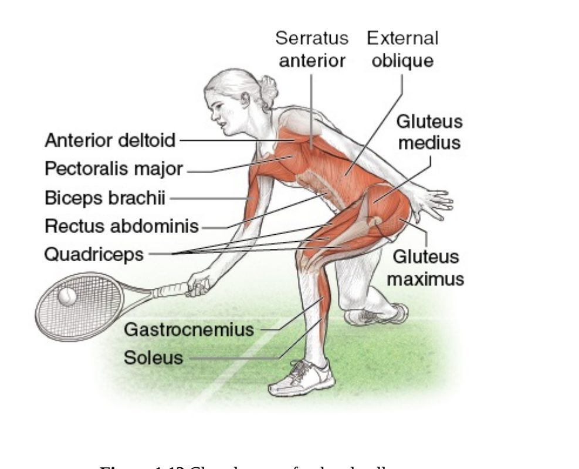
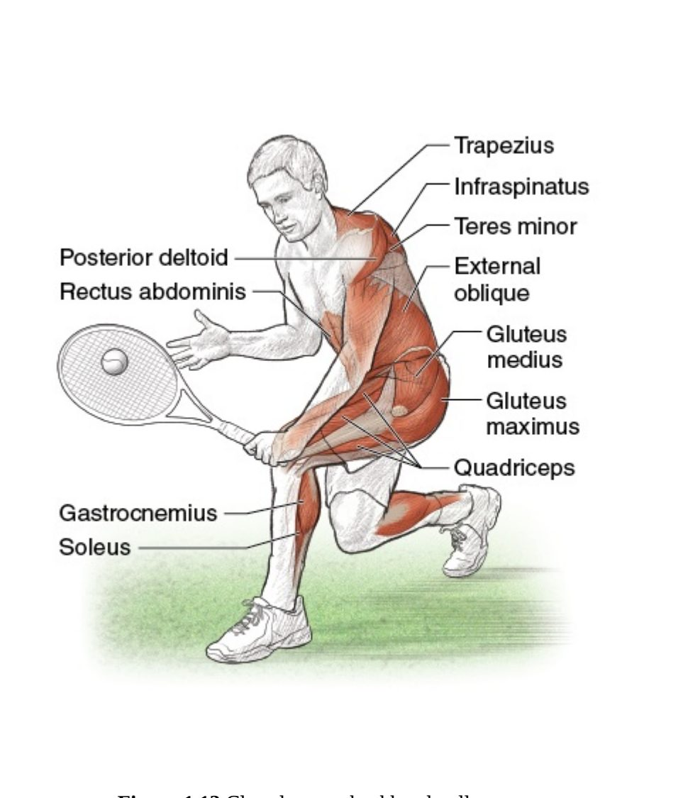
Trong quá trình vung vợt sau của cả cú vô lê thuận tay và trái tay, cơ bắp chân, cơ dép, cơ tứ đầu, cơ mông và cơ xoay hông co lệch tâm để chịu tải cho cẳng chân và bắt đầu xoay hông. Các cơn co đồng tâm của giai đoạn xoay thân bao gồm cơ chéo trong cùng bên và cơ chéo ngoài đối bên, trong khi các cơn co lệch tâm kéo theo cơ chéo trong đối bên, cơ chéo ngoài cùng bên, cơ bụng và cơ dựng cứng. Đối với cú vô lê thuận tay, các động tác co đồng tâm của vai và xoay cánh tay trên trong mặt phẳng ngang được thực hiện bởi cơ delta giữa và cơ sau, cơ lưng rộng, cơ dưới gai và cơ tròn bé và theo sau là các cơ co của cơ duỗi cổ tay. Các cơn co lệch tâm của vai và xoay cánh tay trên trong mặt phẳng ngang được thực hiện bởi cơ delta trước, cơ ngực lớn và cơ dưới vai. Trong cú vô lê trái tay, những hành động đồng tâm và lệch tâm này hoàn toàn trái ngược nhau. Trong quá trình vung vợt về phía trước của cả cú vô lê thuận tay và trái tay, cơ bắp chân, cơ dép, cơ tứ đầu, cơ mông và cơ xoay hông co lại cả đồng tâm và lệch tâm để điều khiển phần thân dưới và xoay hông. Sự co đồng tâm và lệch tâm của các cơ xiên, cơ duỗi lưng và cơ dựng cột sống làm cho thân mình xoay. Đối với cú vô lê thuận tay, cơ lưng to, cơ delta trước, cơ dưới vai, bắp tay và cơ ngực chính đều co đồng tâm trong giai đoạn tăng tốc để đưa vợt đến bóng để tiếp xúc. Đối với cú vô lê trái tay, giai đoạn tăng tốc của cánh tay trên được thực hiện thông qua các cơn co đồng tâm của cơ dưới gai, cơ tròn nhỏ, cơ delta sau và hình thang. Trong giai đoạn tiếp theo của cú vô lê thuận tay, cánh tay trên giảm tốc thông qua các cơn co lệch tâm của cơ dưới gai, cơ tròn bé, cơ delta sau, cơ thoi, cơ răng trước, cơ thang, cơ tam đầu và cơ duỗi cổ tay. Trong cú vô lê trái tay, cánh tay trên giảm tốc thông qua các cơn co lệch tâm của cơ dưới vai, cơ ngực lớn, cơ delta trước và bắp tay.
Những Lưu Ý Khi Huấn Luyện
Giải phẫu quần vợt cung cấp một số bài tập cụ thể cho hoạt động quần vợt, nhắm vào các cơ được xác định trong chương này. Tennis Anatomy còn hướng dẫn bạn ngoài các bài tập trong cuốn sách này để giúp bạn lựa chọn các bài tập bổ sung phù hợp nhằm cải thiện thành tích. Chuyên gia về sức mạnh và thể lực được chứng nhận sẽ có thể giúp bạn thiết lập một chương trình đào tạo cụ thể cho nhu cầu và mục tiêu của bạn. Phần này đề cập đến một số nguyên tắc luyện tập phổ biến để giúp bạn bắt đầu trên con đường trở thành một tay vợt có kỹ năng tốt.
Thích Nghi
Cơ thể thực hiện những điều chỉnh cụ thể đối với cường độ tập luyện dựa trên cường độ, loại hình, khối lượng và tần suất tập luyện. Tải phải theo chu kỳ và lũy tiến để tạo ra sự cải thiện liên tục theo thời gian. Các chương trình định kỳ được thiết kế xoay quanh việc tải lũy tiến theo chu kỳ trong suốt năm đào tạo. Một chương trình định kỳ tốt có thể giúp bạn đạt được đỉnh cao trong các giải đấu quan trọng như giải vô địch cấp câu lạc bộ hoặc tiểu bang hoặc thậm chí là Giải Mỹ mở rộng. Mọi người sẽ phản ứng khác nhau với cùng một chương trình đào tạo. Tuổi tác, giới tính, chiều cao, cân nặng, độ tuổi tập luyện, mục tiêu chơi quần vợt và động lực đều ảnh hưởng đến cách chơi.
người chơi phản ứng với một chương trình đào tạo cụ thể. Một số vận động viên phản ứng tốt với việc tập luyện thường xuyên hơn và cường độ cao hơn; những người khác có thể không đáp ứng được loại chương trình này. Theo dõi phản ứng của cá nhân bạn đối với chương trình tập luyện và đảm bảo bao gồm các giai đoạn phục hồi để cho phép cường độ cao hơn trong các buổi tập luyện và thi đấu quan trọng. Việc thích ứng với hầu hết các hình thức đào tạo có thể dễ dàng đảo ngược. Nếu bạn không tiếp tục luyện tập ở mức độ đủ cao, bạn sẽ không duy trì được những tiến bộ đã đạt được và hiệu suất của bạn sẽ thụt lùi. Detraining là sự mất đi lợi ích sinh lý của việc tập luyện. Nhìn chung, quá trình khử hiếu khí diễn ra nhanh hơn vì nó dựa trên việc giảm nồng độ enzyme hiếu khí. Sức mạnh cơ bắp có khả năng chống lại việc tập luyện nhanh hơn, nhưng nó sẽ giảm trong vòng vài tuần sau khi giảm hoặc hạn chế tập luyện. Tính linh hoạt cũng có thể tăng và giảm khá nhanh.
Khối Lượng và Cường Độ
Để đạt được sự thích ứng trong luyện tập như sức mạnh, tốc độ, sức mạnh, sức bền và tính linh hoạt, bạn phải tải biến số cụ thể lớn hơn mức hiện tại. Tuy nhiên, hãy cẩn thận để thêm một tải thích hợp. Tải quá nhiều quá sớm có thể dẫn đến chấn thương hoặc tập luyện quá sức, dẫn đến hậu quả lâu dài như kiệt sức. Trong luyện tập kháng lực, tải trọng đôi khi được biểu thị bằng phần trăm của tải trọng lớn nhất mà một người có thể nâng trong một chuyển động cụ thể, mức tối đa một lần lặp lại hoặc 1RM. Ví dụ: đây có thể là mức tạ bạn có thể squat trong một lần lặp lại. Khối lượng tập luyện có thể được tính theo tỷ lệ phần trăm của giá trị này. Tùy thuộc vào mục tiêu của buổi tập, tải trọng có thể được áp dụng trong một lần lặp lại động tác hoặc nhiều lần lặp lại. Nếu mức tăng 1RM bị chống chỉ định với bạn hoặc bạn không mong muốn, bạn có thể ước tính 1RM của mình dựa trên số lần lặp lại mà bạn hoàn thành với mức kháng cự nhẹ hơn. Việc căn cứ 1RM của bạn dựa trên 3RM hoặc 5RM là gần như chính xác. Cường độ thường được đo và theo dõi thông qua tỷ lệ phần trăm điện trở dựa trên 1RM của bạn. Sử dụng tải (cường độ) đại diện cho 60 đến 100 phần trăm 1RM của bạn. Trong một số khoảng thời gian trong năm, tải trọng có thể đạt tới cường độ 100 phần trăm, nhưng điều này chỉ xảy ra trong một khoảng thời gian ngắn như một phần của chương trình đào tạo định kỳ, có cấu trúc. Cường độ khác nhau dẫn đến sự thích ứng khác nhau. Các vận động viên dành phần lớn thời gian tập luyện ở mức từ 60 đến 80 phần trăm của 1RM với tổng khối lượng tập luyện lớn hơn sẽ đạt được mức độ phì đại lớn hơn (tức là tăng cơ nạc).
khối lượng cơ bắp). Để cải thiện sức mạnh tuyệt đối, cường độ cần phải trên 80% của 1RM, với nhiều thời gian nghỉ hơn và tổng khối lượng tập thấp hơn. Để cải thiện sức bền cơ bắp, hãy tập luyện ở cường độ dưới 60% của 1RM.
Số Lượng
Khối lượng tập luyện thường được ghi nhận bằng số hiệp và số lần lặp lại được thực hiện trong mỗi hiệp. Khối lượng kích thích tập luyện tương tự như thời lượng của một chương trình tập luyện aerobic. Tổng khối lượng công việc có liên quan chặt chẽ đến nhiều tác động của chương trình huấn luyện kháng lực. Mặc dù những người mới bắt đầu có thể cho thấy sự cải thiện khi sử dụng một bộ số lần lặp lại cụ thể, nhưng việc cải thiện liên tục sẽ đòi hỏi tổng khối lượng công việc. Để thấy được sự cải thiện lớn nhất, hãy thực hiện hai hoặc ba hiệp hầu hết các bài tập. Số lần lặp lại được thực hiện trong mỗi hiệp và mức độ kháng cự được sử dụng tùy thuộc vào mục tiêu của giai đoạn luyện tập cụ thể đó. Một nguyên tắc nhỏ là thực hiện hai đến bốn hiệp, mỗi hiệp 6 lần lặp lại hoặc ít hơn để tăng sức mạnh, 8 đến 15 lần lặp lại cho chứng phì đại và 15 đến 30 lần lặp lại để tăng sức bền cơ bắp. Thông thường, người chơi quần vợt nên thực hiện không quá 20 lần lặp lại mỗi hiệp và không ít hơn 6 lần lặp lại mỗi hiệp để tăng sức mạnh và cải thiện sức bền phù hợp.
Tần Suất
Tần suất là thành phần cần được điều chỉnh cho phù hợp với từng người chơi tennis. Người mới bắt đầu có thể cải thiện chỉ với hai buổi đào tạo mỗi tuần. Các vận động viên ở trình độ cao thường cần nhiều buổi tập hơn để thích ứng với cường độ tập luyện như mong muốn. Tập luyện các nhóm cơ tương tự hai hoặc ba lần mỗi tuần. Bao gồm thời gian phục hồi ít nhất 24 giờ giữa các buổi tập luyện cho các nhóm giống nhau
Nghỉ Ngơi
Nghỉ ngơi thường là một trong những lĩnh vực bị bỏ qua nhất trong chương trình tập luyện, nhưng nó có thể mang lại sự cải thiện lớn nhất về hiệu suất và giảm khả năng chấn thương. Mất khoảng ba phút để lượng năng lượng dự trữ tức thời của bạn được bổ sung sau một buổi tập luyện ngắn (tức là 10 đến 60 giây hoạt động). Bạn cần hiểu điều này khi xây dựng chương trình đào tạo dựa trên việc phát triển hệ thống năng lượng. Đối với hệ thần kinh, sự phục hồi cũng quan trọng không kém và thường khó đo lường và theo dõi hơn. Mệt mỏi là điều hiển nhiên khi bạn chạy nhanh nhất có thể trong 90 giây. Đây là sự mệt mỏi về trao đổi chất (tức là hệ thống năng lượng). Nếu bạn thực hiện một vài cú nhảy sâu từ hộp 18 inch (46 cm), bạn sẽ không cảm thấy mệt mỏi như vậy, nhưng bạn sẽ làm mệt mỏi các cơ chế khác nhau, chủ yếu là cơ chế thần kinh. Việc phục hồi là cần thiết trong cả hai tình huống, nhưng bạn có thể không dành đủ thời gian phục hồi cho ví dụ thứ hai vì bạn có thể không cảm thấy mệt mỏi. Nghỉ giữa các bài tập phụ thuộc vào thứ tự của bài tập. Nếu bài tập tiếp theo sử dụng một nhóm cơ khác, thời gian nghỉ có thể ngắn hơn. Nếu cùng một cơ được tập luyện trong hiệp tiếp theo, thời gian nghỉ giữa các bài tập phải tương đương với thời gian giữa các hiệp tập. Nếu mục tiêu tập luyện là tăng cường độ phì đại cơ, hãy nghỉ 30 đến 90 giây giữa các hiệp. Nếu mục tiêu là sức mạnh tuyệt đối, hãy tăng thời gian nghỉ giữa các hiệp lên hai hoặc ba phút hoặc thậm chí lâu hơn. Nếu mục tiêu là sức bền cơ bắp, hãy giữ thời gian nghỉ ngắn (dưới 30 giây).
Biến Đổi và Tiến Triển
Sự thay đổi bao gồm sự thay đổi về tải trọng, tốc độ di chuyển, thời gian nghỉ ngơi và lựa chọn bài tập. Nếu không có sự thay đổi như vậy, một vận động viên có thể gặp phải tình trạng ổn định trong tập luyện và có thể là tập luyện dưới mức hoặc tập luyện quá sức. Sự thay đổi về tải trọng sẽ diễn ra theo định kỳ dựa trên mục tiêu và mục tiêu phát triển lâu dài của bạn. Ví dụ: để tăng sức mạnh tối đa, chương trình của bạn nên có giai đoạn phì đại, sau đó là giai đoạn sức mạnh. Để tăng sức mạnh, chương trình của bạn nên chuyển từ giai đoạn phì đại sang giai đoạn sức mạnh rồi đến giai đoạn sức mạnh. Để thảo luận sâu hơn về định kỳ, hãy xem Định kỳ: Lý thuyết và Phương pháp đào tạo của Tudor Bompa và G. Gregory Haff (Human Kinetics, 2009).
Tổ Chức Chương Trình Hằng Ngày
Ngoài tác dụng định kỳ tổng thể của một chương trình tập luyện, còn có các phương pháp cụ thể để tổ chức chương trình ở cấp độ tập luyện hàng ngày. Thiết kế chương trình hàng ngày tùy thuộc vào độ tuổi tập luyện, mục tiêu, động lực, phong cách chơi, lối sống, các trách nhiệm khác và các yếu tố khác của bạn; loại mục tiêu đào tạo; và thời gian dành cho đào tạo. Có thể áp dụng một số phương pháp thiết kế chương trình hàng ngày. Một thói quen toàn thân thường được sử dụng cho người mới bắt đầu, nhưng nó có thể là một thói quen tốt cho các vận động viên trình độ cao hoặc những người có thời gian tập luyện hạn chế. Chia cơ thể thành phần thân dưới, phần lõi và phần thân trên. Trong ba lĩnh vực rộng lớn này, cơ thể tiếp tục bị phá vỡ. Các bài tập cho phần thân trên bao gồm chuyển động ấn, chuyển động ấn phía trên đầu, chuyển động kéo và chuyển động kéo từ phía trên đầu. Các bài tập cốt lõi tập trung vào chuyển động uốn cong, mở rộng và xoay. Các bài tập cho phần thân dưới bao gồm squats và lunges cũng như tập trung vào động tác gập cổ chân và gập lưng. Lặp lại chương trình toàn thân không quá bốn lần một tuần, nghỉ ngơi ít nhất một ngày giữa các buổi tập. Nói chung, phải mất ba ngày tập luyện mỗi tuần để đạt được mức tăng đáng kể và hai ngày mỗi tuần để duy trì sức mạnh. Tùy chọn thứ hai là quy trình chia đôi, một lần trên-dưới. Trong tổ chức này, cơ thể được chia thành hai nhóm—thân trên và thân dưới. Thiết kế chương trình này phù hợp hơn với những người đã có một số kinh nghiệm đào tạo. Phần thân trên được tập vào ngày tập đầu tiên và phần thân dưới được tập vào ngày tập thứ hai. Đào tạo cốt lõi có thể được cấu trúc theo từng phần hoặc được nhóm thành một buổi đào tạo riêng. Tuy nhiên, hãy cân nhắc rằng phần cốt lõi hoạt động trong hầu hết mọi bài tập sức mạnh và điều hòa, đồng thời phần cốt lõi được rèn luyện trong hầu hết các động tác trong và ngoài sân đấu. Thực hiện mỗi ngày tập luyện với một ngày nghỉ, sau đó bắt đầu lại chu kỳ. Điều này đảm bảo nghỉ ngơi đầy đủ mà không làm mất tác dụng luyện tập tiềm năng. Việc đào tạo dành riêng cho quần vợt có thể được thực hiện theo nhiều cách khác nhau. Một cách tiếp cận có hệ thống bao gồm một kế hoạch định kỳ và các động tác quần vợt cụ thể phù hợp sẽ mang lại kết quả tốt nhất, cải thiện thành tích trên sân và giảm nguy cơ chấn thương. Hãy tận hưởng các bài tập trong Giải phẫu quần vợt vì chúng giúp bạn nâng cao thành tích trên sân và không bị chấn thương.
Khớp Vai
Đối với một vận động viên quần vợt, vai có thể là khớp quan trọng nhất trên cơ thể. Vai không chỉ là khu vực được tập trung chính để nâng cao hiệu suất mà còn là một trong những khu vực thường bị chấn thương nhất ở người chơi quần vợt. Khớp vai, còn được gọi là khớp chảo - cánh tay, là khớp bóng và ổ cắm đa trục. Điều này cho phép nó trở thành khớp di động nhất trong cơ thể, cung cấp phạm vi chuyển động lớn nhất. Có phạm vi chuyển động lớn quanh vai là một lợi thế rõ ràng đối với người chơi quần vợt vì môn thể thao này đòi hỏi phải di chuyển theo nhiều hướng, bao gồm duỗi người để thực hiện những cú đánh nền rộng, lao tới để thực hiện những cú vô lê thấp và vươn lên để đánh những cú đánh sâu qua đầu. Phạm vi chuyển động lớn này trong nhiều mặt phẳng, mặc dù có lợi nhưng cũng tạo ra một khớp tương đối không ổn định. Kết quả là chấn thương vai, điển hình là do hoạt động quá mức, thường gặp ở những người chơi quần vợt. Các bài tập trong chương này vừa phát triển cơ vai liên quan đến các cú đánh tennis vừa tăng cường chuyển động của vai để cải thiện hiệu suất.
Giải Phẫu Khớp Vai
Ba xương—xương cánh tay, xương bả vai và xương đòn—chủ yếu tham gia vào các chuyển động của vai. Xương cánh tay, xương dài của cánh tay trên, khớp với xương bả vai, ở khớp vai và với xương quay và xương trụ, các xương ở cẳng tay, ở khuỷu tay. Xương đòn, hay xương đòn, được nối với phần lõi của cơ thể thông qua xương ức. Xương đòn tạo thành một phần của đai ngực và khớp với xương bả vai. Khi khớp vai di chuyển, các cơ xung quanh vai sẽ di chuyển xương bả vai để giúp tăng phạm vi chuyển động của vai. Nếu không cử động được xương bả vai, riêng khớp vai chỉ có thể cử động ở mức gấp hoặc dang khoảng 120 độ. Chuyển động của xương bả vai cho phép khớp vai có thêm chuyển động khoảng 60 độ theo mỗi hướng này. Một số cơ tham gia vào chuyển động của vai. Các cơ dưới vai, cơ trên gai, cơ dưới gai và cơ tròn cùng các gân và dây chằng liên quan của chúng tạo nên chóp xoay (hình 2.1, trang 24), đây là một trong những vị trí thường bị chấn thương nhất ở vai, đặc biệt khi liên quan đến chấn thương do hoạt động quá mức. (Chấn thương vai và các chấn thương quần vợt thông thường khác sẽ được thảo luận trong chi tiết hơn ở chương 10, cùng với các bài tập để phòng ngừa và phục hồi các chấn thương này.) Các cơ của chóp xoay là những cơ tương đối nhỏ có các gân chạy chéo phía trước, trên và sau đầu xương cánh tay. Chóp xoay đóng vai trò quan trọng trong việc duy trì đầu xương cánh tay ở đúng vị trí, hỗ trợ cơ khỏe hơn—cơ delta (hình 2.2, trang 24)—của vùng vai.
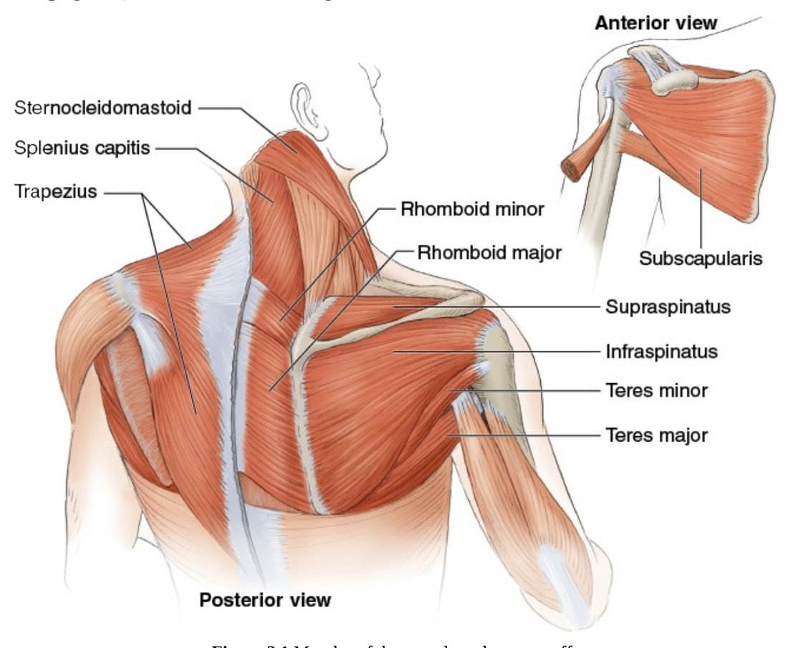
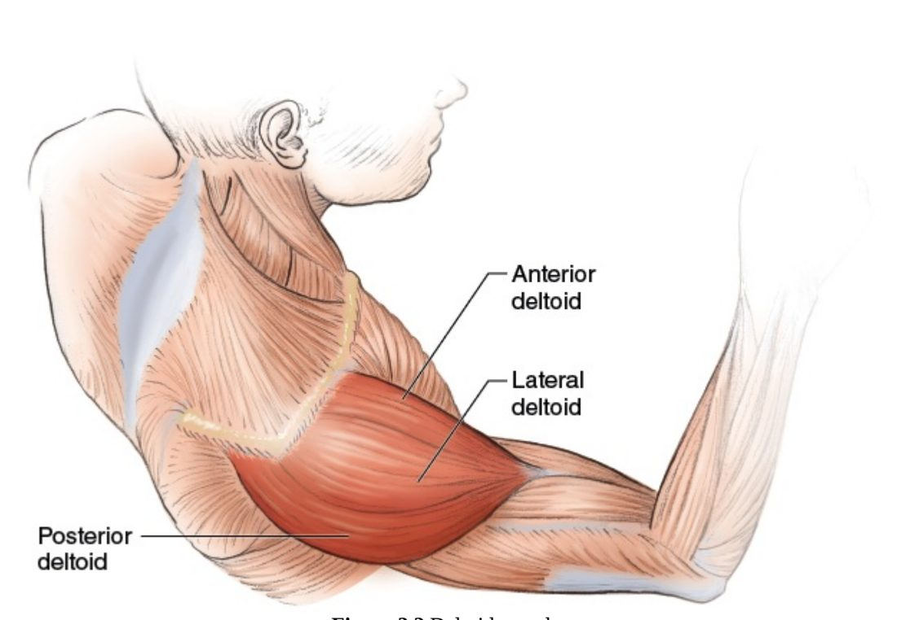
Về mặt kỹ thuật, phức hợp vai bao gồm bốn khớp—khớp xương ức, khớp cùng vai, khớp háng và xương bả vai—điều khiển vị trí của xương cánh tay, xương bả vai và xương đòn. Khớp ức đòn kết nối phức hợp vai với bộ xương trục và cho phép nâng lên và hạ xuống, kéo dài và co lại cũng như xoay theo trục dài của xương đòn. Khớp acromioclavicular kết nối xương đòn với quá trình acromion của xương bả vai và góp phần vào chuyển động toàn bộ cánh tay. Hai chuyển động cơ bản là nâng lên và hạ xuống khi dang xương cánh tay và chuyển động trượt khi khớp vai gập và duỗi. Các bề mặt khớp của khớp ổ chảo là đầu xương cánh tay và hố ổ chảo của xương bả vai. Cách cả hai đều được uốn cong cho phép tạo ra một lượng chuyển động lớn theo mọi hướng nhưng cũng mang lại độ ổn định tối thiểu. Khớp vai-ngực không chỉ đóng vai trò như một cơ chế bảo vệ khi ai đó ngã với cánh tay dang rộng mà còn hỗ trợ sự ổn định của ổ khớp vai và tăng cường chuyển động của cánh tay-thân. Nhóm cơ delta, coracbrachialis, teres Major và nhóm cơ xoay là các cơ nội tại của khớp ổ chảo cánh tay. Các cơ này bắt nguồn từ xương bả vai và xương đòn và chèn vào xương cánh tay. Cơ cơ lưng rộng và cơ ngực lớn là các cơ bên ngoài của khớp chảo - cánh tay. Những cơ này bắt nguồn từ thân và chèn vào xương cánh tay. Cơ bắp tay cánh tay và cơ tam đầu cánh tay cũng tham gia vào chuyển động của khớp cánh tay. Về cơ bản, cơ bắp tay trước hỗ trợ việc uốn cong và khép vai theo chiều ngang, còn phần đầu dài của cơ tam đầu cánh tay hỗ trợ việc duỗi và dang ngang. Hoạt động cơ bắp là lớn nhất trong quá trình chuyển động giao bóng. Vì vậy, cú giao bóng có thể coi là cú đánh vất vả nhất trong quần vợt. Trong giai đoạn tải lực của cú giao bóng, khiến vai ở trạng thái xoay ra ngoài tối đa, có hoạt động cơ bắp ở mức độ vừa phải của cơ trên gai, cơ dưới gai, cơ dưới vai, cơ bắp tay cánh tay và cơ răng trước, nêu bật tầm quan trọng của các bài tập ổn định xương bả vai cũng như các bài tập sức mạnh của chóp xoay trước và sau. Giai đoạn tăng tốc, bắt đầu bằng động tác xoay ra ngoài tối đa và kết thúc bằng tiếp xúc, có hoạt động cơ bắp cao của cơ ngực lớn, cơ dưới vai, cơ lưng rộng và cơ răng trước. Những cơ này hoạt động rất tích cực trong quá trình xoay vòng đồng tâm mạnh mẽ vào trong của xương cánh tay. Trong giai đoạn tiếp theo sau khi tiếp xúc, các cơ vòng bít xoay sau, cơ răng trước, cơ nhị đầu cánh tay, cơ delta và cơ lưng rộng thể hiện hoạt động ở mức độ vừa phải để giúp tạo ra các cơn co cơ lệch tâm nhằm làm chậm xương cánh tay và bảo vệ khớp xương cánh tay.
Cú Đánh Quần Vợt và Chuyển Động Vai
Đối với một vận động viên quần vợt, vai là một trong những vùng được sử dụng nhiều nhất (và đôi khi bị lạm dụng quá mức) trên cơ thể. Thông thường, điều này khiến nó trở thành một trong những khu vực bị chấn thương nhiều nhất, đặc biệt là ở những người chơi quần vợt thi đấu. Ngoài những yêu cầu lặp đi lặp lại trên vai, quần vợt còn đòi hỏi các kiểu chuyển động bùng nổ và hoạt động cơ bắp đồng tâm và lập dị với nỗ lực tối đa ở cường độ cao. Các động tác đánh nền chủ yếu yêu cầu các hành động nằm ngang ở vai, sử dụng sự kết hợp giữa dang và xoay ngoài để thực hiện cú đánh sau thuận tay và thực hiện cú đánh trái tay cũng như sự kết hợp giữa dang và xoay trong cho cú vung thuận tay về phía trước và đánh sau tay. Giao bóng tennis là một chuỗi phức tạp hơn, sử dụng sự kết hợp của các chuyển động ngang và dọc. Dạng ngang và xoay ngoài xảy ra trong quá trình backswing, với sự co rút của xương bả vai và hạ xuống trong giai đoạn tải trọng. Từ giai đoạn chịu lực, nâng xương bả vai, dang ngang và duỗi vai sẽ di chuyển cánh tay về phía tiếp xúc. Xoay trong, vai phần mở rộng và phần bổ sung hoàn thành phần tiếp theo. Các cơ của chóp xoay đóng vai trò quan trọng trong việc ổn định xương cánh tay ở vai trong tất cả các động tác quần vợt, nhưng chúng rất quan trọng trong các giai đoạn tăng tốc và tiếp theo của cú giao bóng (hình 2.3). Các cơ của vòng quay hỗ trợ tạo ra lực trong quá trình tăng tốc và cung cấp lực lệch tâm để giúp làm chậm cánh tay sau khi tiếp xúc trong quá trình theo dõi. Có thông tin cho rằng trong quá trình xoay quả giao bóng bên trong bùng nổ, tốc độ xoay của vai có thể đạt tốc độ từ 1.074 đến 2.300 độ mỗi giây. Sau khi tiếp xúc, sự giảm tốc phải xảy ra thông qua lực lệch tâm của chóp xoay và các cơ liên quan. Ở cấp độ chuyên nghiệp, các tay vợt nam đạt tốc độ giao bóng gần 140 dặm một giờ (225 km/h). Việc chuẩn bị cơ vai đúng cách là rất quan trọng.
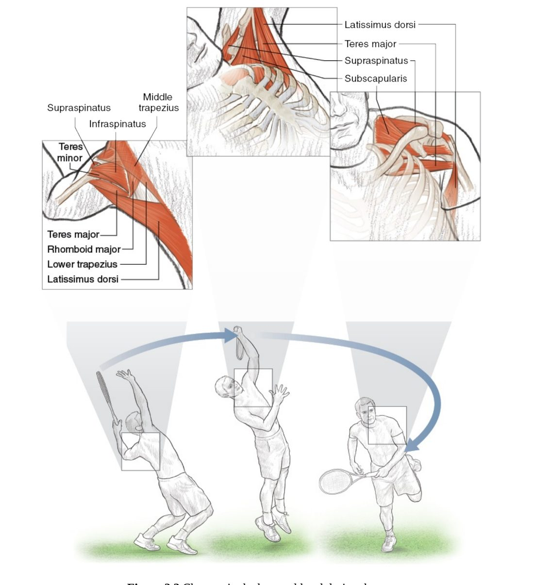
Những cú vô lê quần vợt yêu cầu các chuyển động cơ và khớp nhỏ hơn so với các cú đánh nền hoặc giao bóng. Đối với cú vô lê thuận tay, xoay nhẹ ra ngoài và khép nhẹ sau đó dang vai cho phép người chơi hoàn thành cú đánh. Cú vô lê trái tay liên quan đến việc xoay và dang nhẹ vào bên trong, sau đó là xoay nhẹ và khép vai ra bên ngoài.
Các Bài Tập Cho Khớp Vai
Các bài tập sau đây sẽ có lợi cho khớp vai. Đặc biệt, bạn sẽ phát triển các cơ khỏe mạnh xung quanh khớp vai để vừa ngăn ngừa chấn thương vừa nâng cao hiệu suất hoạt động. Trong khi thực hiện các bài tập này, hãy co các cơ cốt lõi để phát triển phần giữa khỏe mạnh. Điều này sẽ giúp giữ thăng bằng và tư thế cũng như chuyển lực từ phần dưới lên phần trên của cơ thể trong mỗi cú đánh. Đối với các bài tập cần sử dụng ống kháng lực, hãy sử dụng máy cáp hoặc gắn ống vào vật ổn định. Mặc dù chương trình tập luyện phải mang tính cá nhân cao nhưng mỗi bài tập đều bao gồm một số hướng dẫn chung. Một chương trình tập luyện ban đầu bao gồm các bài tập sau đây phải có sự cân bằng hợp lý giữa phía trước và phía sau cũng như bên trái và bên phải của cơ thể. Chúng tôi khuyên bạn nên bắt đầu với hai hoặc ba hiệp, từ 10 đến 12 lần lặp lại cho đến khi bạn có cơ sở vững chắc. Hãy đảm bảo bạn nghỉ ngơi đầy đủ giữa các buổi tập (ít nhất một ngày) để giúp cơ phục hồi. Tất nhiên, chương trình đào tạo tốt nhất được thiết kế phù hợp với nhu cầu cá nhân và mục tiêu hiệu suất của bạn. Mức độ thể lực cơ bản, độ tuổi, kinh nghiệm và lịch thi đấu đều là những yếu tố quan trọng. Một chuyên gia về sức mạnh và thể lực được chứng nhận có kiến thức tốt về quần vợt sẽ rất hữu ích trong việc thiết kế một chương trình cũng như hướng dẫn kỹ thuật phù hợp cho từng bài tập.
Nâng Trước
Cách Thực Hiện
- Đứng thẳng, đưa vai về phía sau, ép hai bả vai vào nhau. Mỗi tay cầm một quả tạ nhẹ (dưới 10 pound [4,5 kg]). Đặt hai tay trước đùi, lòng bàn tay úp xuống. Đây là vị trí bắt đầu. 2. Trong khi giữ thẳng cánh tay, nâng cả hai cánh tay lên ngang vai, lòng bàn tay úp xuống. Nâng cánh tay lên phía trước cơ thể, ra phía trước
ngực. Giữ tạ ở độ cao ngang vai trong hai giây.
- Từ từ hạ cánh tay xuống vị trí bắt đầu và lặp lại.
Các Nhóm Cơ Tham Gia
Cơ bản: Cơ delta trước, cơ delta bên
Cơ ngực trên
Ứng Dụng Trong Quần Vợt
Phần trước của vai đóng vai trò quan trọng trong việc nâng cao cánh tay khi thực hiện các cú đánh nền thuận tay, đặc biệt là khi đánh bóng cao. Điều quan trọng là phát triển mặt trước của vai vì điều này ảnh hưởng trực tiếp đến khía cạnh tăng tốc của cú đánh nền và giao bóng. Phần trước của vai yếu sẽ khiến các cơ, gân và dây chằng ở bắp tay và ngực phải thực hiện nhiều công việc hơn mức cần thiết và điều này có thể dẫn đến chấn thương
Nâng Ngang
Cách Thực Hiện
- Đứng thẳng, đưa vai về phía sau, ép hai bả vai vào nhau. Mỗi tay cầm một quả tạ nhẹ (dưới 10 pound [4,5 kg]). Đặt hai tay lên mặt ngoài của đùi, lòng bàn tay hướng vào đùi. 2. Trong khi giữ thẳng cánh tay, nâng cả hai cánh tay sang hai bên (dạng), đưa tạ ngang vai đồng thời giữ lòng bàn tay hướng xuống. Giữ cổ tay vững chắc và cánh tay thẳng. Giữ trong hai giây. 3. Từ từ hạ cánh tay xuống vị trí bắt đầu và lặp lại.
Các Nhóm Cơ Tham Gia
Cơ delta trước, cơ delta ngoài
Cơ delta trên
Ứng Dụng Trong Quần Vợt
Mặt bên của vùng vai, đặc biệt là phần bên của cơ delta, rất quan trọng trong tất cả các chuyển động đòi hỏi cánh tay dang ra khỏi cơ thể. Đây là một thành phần được thấy trong các cú đánh quần vợt, đặc biệt là trong cú đánh nền trái tay từ cuối động tác vung vợt ra sau cho đến hết phần tiếp theo. Mặc dù cơ chóp xoay giúp ổn định khớp vai trong các cú đánh tennis, nhưng việc có cơ delta khỏe và chống mỏi sẽ giúp bảo vệ vai nhiều hơn. Điều này đặc biệt quan trọng đối với những người sử dụng cú đánh trái tay bằng một tay vì cơ delta bên là một trong những liên quan đến cả khía cạnh tăng tốc và giảm tốc của cú đánh. Cơ delta bên cũng rất quan trọng trong thành phần vung vợt sau của cú giao bóng khi cánh tay dang ra
Bent-Over nâng phía sau
Cách Thực Hiện
- Đứng hai chân rộng bằng vai. Với một chút uốn cong ở đầu gối, uốn cong ở thắt lưng trong khi giữ thẳng lưng. Mỗi tay cầm một quả tạ nhẹ (dưới 10 pound [4,5 kg]). Mở rộng cánh tay về phía mặt đất, lòng bàn tay úp xuống. Cong khuỷu tay khoảng 90 độ, đốt ngón tay hướng xuống sàn. 2. Trong khi giữ khuỷu tay một góc xấp xỉ 90 độ, từ từ nâng cẳng tay lên, dẫn theo thanh tạ, cao ngang vai. Giữ trong hai giây.
- Từ từ hạ cánh tay xuống vị trí bắt đầu và lặp lại.
Các Nhóm Cơ Tham Gia
Chính: Cơ delta
Teres lớn, hình thoi lớn, hình thoi nhỏ
Ứng Dụng Trong Quần Vợt
Phần sau của vai đóng vai trò chính trong việc giảm tốc độ của cánh tay sau một cú đánh quần vợt. Nó là cần thiết trong tất cả các cú đánh, nhưng lực lớn nhất được thấy ở sự giảm tốc độ của cánh tay sau khi tiếp xúc bóng trong cú giao bóng. Điều quan trọng là phải có đủ sức mạnh ở các cơ ở phía sau vai. Điều này sẽ hỗ trợ phát triển sức mạnh trong một chuyển động có liên quan trực tiếp đến cú đánh trái tay. Siết chặt hai bả vai lại với nhau (rút lại) ở đầu chuyển động sẽ kích hoạt các cơ hình thoi ở mức độ lớn hơn, giúp phát triển khả năng kiểm soát xương bả vai thích hợp và ngăn ngừa chấn thương ở vai
Rút lại xương bả vai từ khuỷu tay đến hông
Cách Thực Hiện
- Đứng thẳng, hai chân rộng bằng vai và đầu gối hơi cong, vai tạo góc 90 độ và khuỷu tay tạo góc 90 độ. Đây là vị trí bắt đầu. 2. Từ từ hạ khuỷu tay về phía hông một cách có kiểm soát bằng cách co cơ hình thoi ở lưng trên. Giữ ở cuối chuyển động trong hai đến bốn giây. 3. Từ từ nâng cánh tay lên vị trí ban đầu và lặp lại.
Các Nhóm Cơ Tham Gia
Chính: Cơ thang, cơ dưới gai, hình thoi lớn, hình thoi
cơ lưng rộng
Ứng Dụng Trong Quần Vợt
Vị trí xương bả vai đóng một vai trò quan trọng trong nguy cơ chấn thương của vận động viên. Bài tập rút xương bả vai từ khuỷu tay sang hông tập trung vào các cơ có liên quan đến việc duy trì vị trí xương bả vai tốt. Bài tập này là một động tác chiếm ưu thế về tư thế và đặc biệt quan trọng vì nhiều người chơi quần vợt có cơ ổn định xương bả vai yếu hơn mức cần thiết. Trọng tâm của bài tập này là tăng cường các cơ liên quan đến việc ổn định xương bả vai, điều này không chỉ hỗ trợ ngăn ngừa chấn thương mà còn cho phép thực hiện cơ chế đánh hiệu quả hơn, dẫn đến tạo ra lực lớn hơn cho các cú đánh quần vợt. Ngoài việc cải thiện tư thế, bài tập này còn trực tiếp kích thích sự co cơ tương tự như những gì đã trải qua trong giai đoạn tải bóng và cả trong các cú vô lê thuận tay với tư thế tiếp xúc gần
Xoay Ngoài
Cách Thực Hiện
- Đứng sang một bên và nắm lấy ống cản bằng tay ngoài, khuỷu tay sát hông một góc 90 độ và cẳng tay song song với sàn. Đây là vị trí bắt đầu. 2. Từ từ xoay vai ra bên ngoài (ra xa cơ thể) về phía cơ thể.
lực cản từ ống, đảm bảo cẳng tay vẫn song song với sàn. Giữ nguyên tư thế vai và không xoay eo trong quá trình di chuyển. Giữ gần phạm vi chuyển động cuối cùng trong hai giây.
- Từ từ quay trở lại vị trí bắt đầu và lặp lại trong 10 đến 12 lần lặp lại. Sau đó thực hiện động tác tương tự với cánh tay đối diện.
Các Nhóm Cơ Tham Gia
Cơ dưới gai, tròn bé
Cơ trên gai, cơ delta sau Sức mạnh và sức bền của vòng bít
Ứng Dụng Trong Quần Vợt
Rotator là tối quan trọng để thành công trong quần vợt, cho dù bạn muốn đánh giao bóng ở tốc độ 130 dặm một giờ (210 km/h) hay có thể chịu đựng một trận đấu kéo dài ba giờ mà không mệt mỏi hay đau đớn. Luyện tập cơ chóp xoay thường xuyên để ngăn ngừa chấn thương và cải thiện hiệu suất. Bài tập xoay ngoài tập trung vào các cơ xoay ngoài và rất quan trọng trong việc giảm tốc độ cánh tay sau khi tiếp xúc với bóng. Xoay ngoài là một yếu tố quan trọng trong nhiều cú đánh quần vợt, bao gồm cả cú đánh thuận tay về phía sau. Trong quá trình backswing, cánh tay dang ra. Một vai khỏe giúp dự trữ năng lượng tiềm tàng sẽ được giải phóng trong giai đoạn tiếp theo của cú thuận tay. Bởi vì bài tập này được thực hiện trong mặt phẳng ngang nên nó có tính đặc hiệu cao trong việc cải thiện khả năng giảm tốc sau khi tiếp xúc với bóng trong các cú đánh nền. Có đủ sức mạnh để giảm tốc độ cánh tay một cách hiệu quả là điều quan trọng để ngăn ngừa chấn thương ở vai và cánh tay
Biến Thể
Đặt một chiếc khăn giữa khuỷu tay và bên hông trong bài tập xoay bên ngoài. Điều này tạo ra một vị trí tốt hơn để thực hiện bài tập và cũng làm tăng khả năng kích hoạt cơ ở mặt sau của vai—cơ dưới gai và cơ tròn nhỏ—khoảng 20%.
Xoay ngoài 90/90 với bắt cóc
Cách Thực Hiện
- Đứng thẳng, hai chân rộng bằng vai, hướng vào phần gắn ống. Nắm ống cản ở độ cao ngang vai với góc 90 độ ở vai và góc 90 độ ở khuỷu tay. Đây là vị trí bắt đầu. 2. Từ từ xoay vai ra ngoài theo lực cản. Cẳng tay bắt đầu song song với sàn và vuông góc với sàn ở đỉnh của
chuyển động (xoay ngoài ở vai). Giữ gần phạm vi chuyển động cuối cùng trong hai giây.
- Từ từ quay trở lại vị trí bắt đầu và lặp lại trong 10 đến 12 lần lặp lại. Sau đó thực hiện động tác tương tự với cánh tay đối diện.
Các Nhóm Cơ Tham Gia
Cơ dưới gai, tròn bé
Cơ trên gai, cơ delta sau Tương tự như bài tập xoay ngoài, bài tập xoay ngoài 90/90 với dạng dang tập trung vào các cơ xoay ngoài, rất quan trọng trong việc giảm tốc độ cánh tay sau khi tiếp xúc với bóng. Bởi vì bài tập này được thực hiện trong mặt phẳng đứng dọc nên nó có tính đặc hiệu cao trong việc cải thiện khả năng giảm tốc của cánh tay sau khi tiếp xúc bóng trong các cú giao bóng. Nó cũng rất quan trọng trong quá trình co đồng tâm của pha giao bóng. Bài tập này đòi hỏi sự ổn định tốt của bao vai và giúp tăng cường các cơ cần thiết để giảm tốc độ cánh tay sau khi giao bóng
Xoay vòng nội bộ 90/90 với bắt cóc
Cách Thực Hiện
- Đứng thẳng, hai chân rộng bằng vai, quay mặt ra khỏi phần gắn ống. Lấy ống cản ở độ cao ngang vai, với góc 90 độ ở vai và góc 90 độ ở khuỷu tay. Đây là vị trí bắt đầu. 2. Từ từ xoay vai vào trong theo lực cản. Cẳng tay bắt đầu vuông góc với sàn và song song với sàn ở cuối chuyển động. Giữ gần phạm vi chuyển động cuối cùng trong hai giây.
- Từ từ quay trở lại vị trí bắt đầu và lặp lại trong 10 đến 12 lần lặp lại. Sau đó thực hiện động tác tương tự với cánh tay đối diện.
Các Nhóm Cơ Tham Gia
Cơ dưới vai
Cơ delta trước
Ứng Dụng Trong Quần Vợt
Cơ chóp xoay mạnh rất quan trọng trong quần vợt, đặc biệt là ngay trước và trong khi tiếp xúc với bóng. Động tác xoay trong 90/90 với bài tập dạng dang đặc biệt tập trung vào việc tăng cường các cơ ổn định nhỏ hơn cần thiết để duy trì vị trí của vai. Bởi vì bài tập này được thực hiện trong mặt phẳng dọc nên nó có tính đặc hiệu cao trong việc cải thiện sức mạnh của các bộ ổn định trong giai đoạn tăng tốc của cú giao bóng. Bài tập này sẽ tăng tốc độ của cú giao bóng khi khả năng tạo lực của người chơi được cải thiện trong suốt các giai đoạn tiếp xúc và tiếp theo của cú giao bóng
Hàng thấp
Cách Thực Hiện
- Đứng thẳng và đối mặt với phần gắn ống. Với cánh tay thấp và ở phía trước, hãy nắm lấy ống cản ở mỗi tay. Kích hoạt các hình thoi bằng cách ép hai bả vai lại với nhau. 2. Từ từ đẩy tay về phía lực cản trong khi vẫn giữ thẳng tay. Duy trì một vị trí cổ tay ổn định. Giữ gần phạm vi cuối của
chuyển động trong hai giây.
- Từ từ quay lại vị trí ban đầu và lặp lại.
Các Nhóm Cơ Tham Gia
Cơ delta sau, cơ thoi lớn, cơ thoi phụ
Cơ thang dưới
Ứng Dụng Trong Quần Vợt
Người chơi quần vợt phải cân bằng tốt trong quá trình phát triển cơ bắp của mình. Bài tập hàng thấp tập trung vào các cơ ở lưng trên và vai sau mà những người chơi quần vợt thường không được rèn luyện kỹ lưỡng - cơ delta sau, cơ thoi và thậm chí cả các mặt dưới của cơ hình thang. Hàng thấp giúp ngăn ngừa chấn thương và tăng cường các cơ quan trọng được sử dụng để giúp phần thân trên giảm tốc sau một cú đánh nền hoặc giao bóng mạnh. Các cơ này cũng hoạt động đồng tâm trong giai đoạn tăng tốc của cú đánh trái tay bằng một và hai tay. Một lợi ích khác của bài tập hàng thấp là cải thiện vị trí xương bả vai và sự thẳng hàng của vai khi nghỉ ngơi. Tư thế thích hợp sẽ hạn chế khả năng bị đau, căng cứng hoặc yếu ở mặt trước của vai và cơ ngực do va chạm. Tác động lên vai, đặc biệt là ở phía trước vai, dẫn đến đau và có khả năng làm giảm tốc độ cú đánh. Sự va chạm lâu dài có thể dẫn đến những chấn thương nghiêm trọng hơn và có thể phải phẫu thuật. Điều quan trọng là phải cải thiện tư thế vai để ngăn ngừa những chấn thương này
Cánh Tay và Cổ Tay
Khi người chơi quần vợt xây dựng lực phản lực từ mặt đất lên, các lực này được truyền tuần tự qua chân, hông, thân, vai, cánh tay và vợt để tạo thành một hệ thống liên kết. Liên kết động học này, hay chuỗi động học, cung cấp cơ sở cho một chuyển động nhịp nhàng và cũng tạo ra lực. Đối với người chơi quần vợt, cánh tay và cổ tay liên kết phần thân dưới và thân với vợt, đây là liên kết cuối cùng trước khi tiếp xúc với bóng. Nếu cánh tay và cổ tay không khỏe hoặc không linh hoạt, sức mạnh được tạo ra ở phần dưới cơ thể và phần lõi sẽ không truyền vào bóng một cách hiệu quả. Điều này dẫn đến giảm sức mạnh trong cú đánh và độ xoáy.
Giải Phẫu Cánh Tay và Cổ Tay
Khuỷu tay chia cánh tay thành phần dưới và phần trên. Khuỷu tay là khớp bản lề bị giới hạn ở hai chuyển động - duỗi và gập. Duỗi khuỷu tay xảy ra khi bạn duỗi thẳng cánh tay từ góc 90 độ ở khuỷu tay. Uốn cong khuỷu tay thì ngược lại; bạn giảm góc ở khuỷu tay bằng cách đưa cẳng tay lại gần cánh tay trên. Xương nối khuỷu tay với vai là xương cánh tay. Cánh tay dưới, thường được gọi là cẳng tay, được hỗ trợ bởi xương quay và xương trụ. Các cơ gấp khuỷu tay chính là cơ nhị đầu cánh tay và cơ cánh tay (hình 3.1). Bắp tay có hai đầu – một dài và một ngắn – cả hai đều bắt chéo khớp vai và gắn vào xương bả vai. Ngoài vai trò là cơ gấp khuỷu tay, bắp tay còn góp phần vào chuyển động ngửa của cẳng tay, tức là vị trí của cánh tay khi lòng bàn tay hướng lên. Phát âm mô tả chuyển động của cánh tay khi lòng bàn tay úp xuống. Cơ cánh tay nằm bên dưới bắp tay và phát sinh ở điểm giữa của xương cánh tay. Nó gắn vào xương trụ ngay sau khi nó đi ra phía trước (phía trước) khớp khuỷu tay. Một cơ nhỏ hơn đôi khi góp phần vào việc gấp khuỷu tay là cơ cánh tay quay. Cơ này phát sinh từ mặt bên của xương cánh tay ngay phía trên khuỷu tay và di chuyển dọc theo phần bên ngoài của cẳng tay để bám vào xương quay ngay phía trên khớp cổ tay.
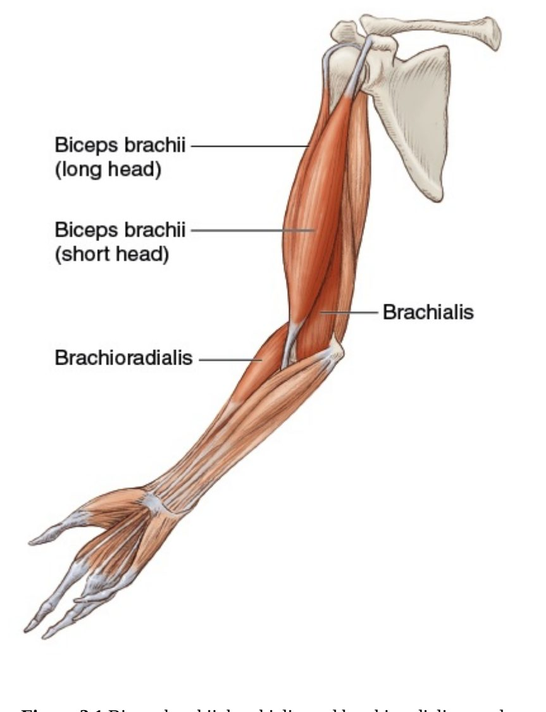
Cơ duỗi chính của khuỷu tay là cơ tam đầu cánh tay (hình 3.2). Cơ tam đầu đề cập đến ba đầu gắn gần nhất của cơ, và cơ cánh tay đề cập đến nguồn gốc của nó ở cánh tay. Đầu trong và đầu bên của cơ tam đầu phát sinh từ vị trí bám trên xương cánh tay, đầu dài đi qua khớp vai và phát sinh từ xương bả vai. Ba đầu hợp nhất tạo thành gân đi qua phía sau khớp khuỷu tay và chèn vào mỏm olecranon của xương trụ. Quá trình olecranon tạo thành đầu khuỷu khi nó bị uốn cong 90 độ. Một cơ hình tam giác nhỏ hơn nhiều được gọi là cơ anconeus hỗ trợ cơ tam đầu trong việc kéo dài khớp khuỷu tay và đóng vai trò quan trọng như một cơ ổn định khuỷu tay. Cơ anconeus tiếp xúc với đầu bên của cơ tam đầu; đôi khi các sợi của hai cơ hòa quyện vào nhau.
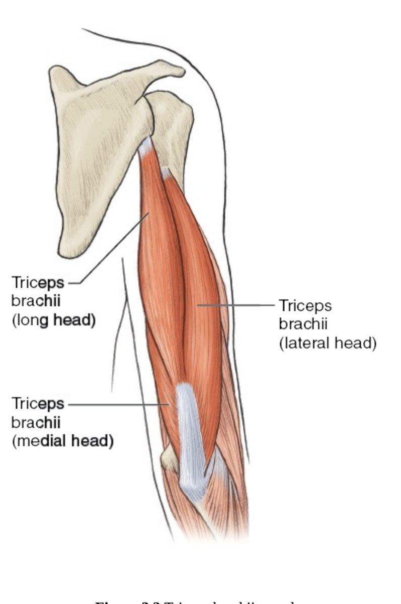
Cơ cẳng tay bao gồm cơ gấp và cơ duỗi (hình 3.3). Như tên cho thấy, cơ phát âm teres phát âm cẳng tay. Cùng với các cơ cánh tay quay, lòng bàn tay dài, cơ gấp cổ tay quay và cơ gấp cổ tay trụ, cơ tròn tròn cũng hỗ trợ việc gấp cẳng tay. Cơ anconeus, cơ duỗi carpi radialis longus, cơ duỗi carpi radialis brevis và cơ duỗi ngón tay kéo dài cẳng tay. Cơ duỗi carpi ulnaris giúp kéo dài cổ tay. Mỗi cơ này đều quan trọng trong việc truyền lực tới vợt và ổn định khuỷu tay và cổ tay. Ngoài việc gấp và duỗi, cổ tay còn dạng và bổ sung—các chuyển động quan trọng trong trò chơi quần vợt hiện đại, đặc biệt liên quan đến đường xoay của cú thuận tay và trái tay. Cơ duỗi carpi radialis longus là cơ dang chính của cổ tay, trong khi cơ duỗi carpi ulnaris là cơ khép chính của cổ tay. Những chuyển động này cũng thường được gọi là uốn cong trụ (ng khép) và uốn cong hướng tâm (dạng), hoặc đôi khi là lệch trụ và hướng tâm.
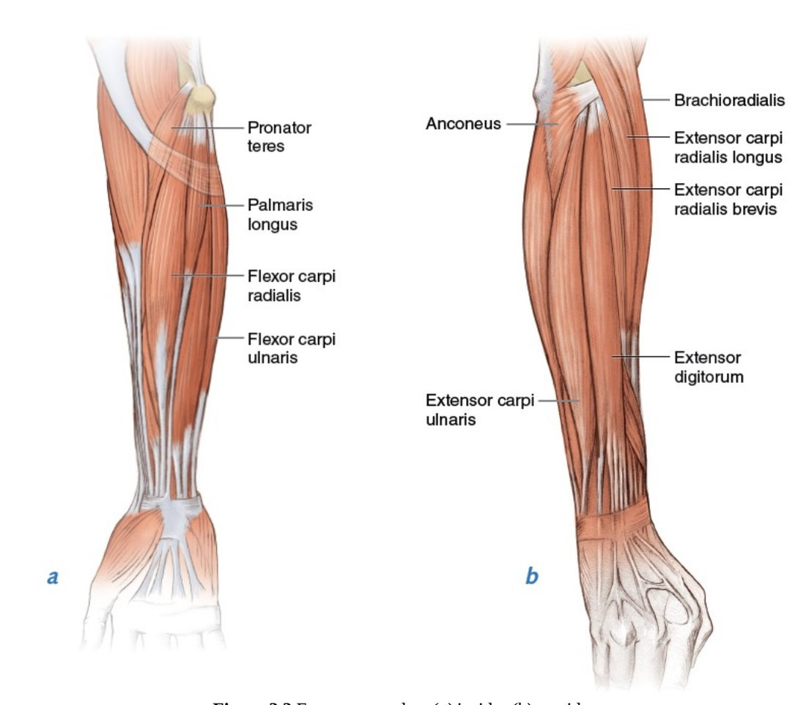
Có một sự tương tác thực sự giữa các cơn co đồng tâm và lệch tâm trong suốt các cú đánh quần vợt, đặc biệt là ở cơ bắp tay trên và dưới. Ví dụ, trong giai đoạn vung về phía trước (tăng tốc) của cú đánh thuận tay, sự co đồng tâm của cơ delta trước, cơ dưới vai và cơ ngực lớn tạo ra sự chuyển động theo chiều ngang của cánh tay trên và sự xoay vào trong. Cơ lưng rộng và cơ gấp cổ tay cũng hoạt động đồng tâm, trong khi cơ quay sấp của cẳng tay, giúp nghiêng cẳng tay, và bắp tay, kéo dài và uốn cong khuỷu tay, xen kẽ các cơn co đồng tâm và lệch tâm. Trong giai đoạn xoay về phía trước (tăng tốc) của cú đánh trái tay bằng một tay, cơ dưới gai, cơ tròn nhỏ, cơ delta sau và hình thang co đồng tâm để tạo ra dang cánh tay trên và duỗi ngang. Cơ tam đầu co đồng tâm để duỗi khuỷu tay, đồng thời các cơ duỗi và cơ khép cổ tay co đồng tâm để duỗi và khép cổ tay. Bắp tay co lệch tâm để duỗi khuỷu tay. Trong cú trái tay bằng hai tay, các cơ tương tự này hoạt động ở phía thuận. Tuy nhiên, một số cơ cũng co ở bên không thuận trong giai đoạn tăng tốc. Cơ delta trước, cơ dưới vai, cơ nhị đầu, cơ răng trước, cơ ngực lớn, cơ gấp và cơ dang cổ tay co đồng tâm để khép cánh tay trên và gập ngang. Các cú vô lê theo mô hình cơ bắp tương tự như các động tác đánh nền tương ứng. Trong giai đoạn tăng tốc của quả giao bóng, cơ dưới vai, cơ ngực lớn, cơ delta trước và cơ tam đầu co đồng tâm để tạo ra lực nâng cánh tay trên và chuyển động về phía trước. Cơ tam đầu co đồng tâm để duỗi khuỷu tay. Các cơ lưng rộng, cơ dưới vai, cơ ngực lớn và cơ quay sấp của cẳng tay co đồng tâm để tạo ra sự xoay trong của vai và quay sấp của cẳng tay. Các cơ gấp cổ tay co đồng tâm để uốn cong cổ tay.
Những cú đánh quần vợt và chuyển động của cánh tay và cổ tay
Quần vợt đã phát triển nhiều trong 30 năm qua, một phần nhờ vào công nghệ vợt và dây. Vì những tiến bộ này, chúng tôi thấy có nhiều bước đột phá mang tính cởi mở hơn. Các cú đánh trở nên bạo lực hơn, đòi hỏi nhiều sức mạnh hơn để giúp bảo vệ các khớp xung quanh, đặc biệt là cơ cánh tay. Các cơ của cánh tay trên phải co đồng tâm để cung cấp lực cho các cú đánh khác nhau, nhưng chúng cũng cần cung cấp lực lệch tâm để làm chậm cú vung trong quá trình thực hiện cú đánh tiếp theo. Chúng tôi đã thấy sự gia tăng các chấn thương ở cổ tay do độ lệch hướng tâm và hướng trụ mạnh hơn mà các loại vợt hiện đại cho phép. Việc tăng cường các cơ gấp và cơ duỗi cũng như các cơ dạng và cơ khép là điều bắt buộc. Sự cân bằng hợp lý ở mỗi nhóm cơ này chính là chìa khóa. Cơ tam đầu ở phía sau cánh tay trên là cơ quan trọng khi chơi tennis người chơi vì nó cung cấp sự hỗ trợ cho vai và khuỷu tay. Từ góc độ hiệu suất, cơ tam đầu đóng một vai trò quan trọng trong các cú giao bóng, đánh trên cao, trái tay và vô lê. Ví dụ, một trong những đoạn cuối cùng của chuỗi động năng trong một cú giao bóng quần vợt hoặc cú đánh qua đầu là phần duỗi khuỷu tay ngay trước khi tiếp xúc với bóng. Chuyển động này được tạo ra bởi sự co bóp mạnh của cơ tam đầu để truyền lực từ thân và cánh tay vào vợt. Từ góc độ phòng ngừa chấn thương, cơ tam đầu khỏe mạnh sẽ làm giảm căng thẳng ở khớp cổ tay, khuỷu tay và vai, giảm nguy cơ chấn thương. Bởi vì quần vợt được chơi bằng vợt và các trận đấu có thể kéo dài nhiều giờ nên sức mạnh cầm nắm, cẳng tay và sức bền cơ bắp là rất quan trọng để một người chơi quần vợt phát triển. Người chơi quần vợt càng có nhiều sức bám và sức mạnh của cẳng tay thì cô ấy sẽ càng ít chịu áp lực lên khớp cổ tay và khuỷu tay. Sức mạnh của cẳng tay và khả năng cầm nắm vừa đủ cũng có thể làm giảm khả năng chấn thương liên quan đến vai. Người chơi có khả năng cầm nắm hoặc cẳng tay yếu có thể cố gắng bù đắp quá mức bằng vai, làm tăng nguy cơ chấn thương.
Các Bài Tập Cho Cánh Tay và Cổ Tay
Khi áp dụng đúng cách, các bài tập sau đây sẽ phát triển sức mạnh cánh tay và sự cân bằng cơ bắp. Nói chung, bạn muốn tăng cường sức mạnh cho cánh tay chiếm ưu thế và không chiếm ưu thế như nhau. Điều này phù hợp cho cả tay trên và tay dưới, mặc dù tay thuận sẽ phát triển sức mạnh hơn do tính chất của môn thể thao này. Các bài tập tăng cường sức mạnh nên tập trung vào sự cân bằng cơ bắp và sức bền. Vì vậy, chúng tôi khuyên bạn nên sử dụng mức tạ nhẹ hơn và số lần lặp lại nhiều hơn, đặc biệt là đối với phần bắp tay dưới. Trọng lượng thường không vượt quá 8 pound (3,63 kg) và số lần lặp lại thường là 12 đến 15 trừ khi có ghi chú khác. Các chuyển động theo nhiều hướng tương tự như đường di chuyển của các cú đánh nên được đưa vào chương trình luyện tập và đã được trình bày trong các bài tập sau. Cánh tay được tăng cường đúng cách sẽ giúp bạn hoạt động tốt hơn trên sân và cũng bảo vệ vai, khuỷu tay và cổ tay khỏi chấn thương.
Đẩy cáp cơ tam đầu xuống
Cách Thực Hiện
- Đứng khép hai chân lại và co cơ lõi lại. Nắm thanh ngắn của cáp hoặc máy ròng rọc với tay cầm rộng ngang vai. Bắt đầu với thanh đòn ở ngang eo, khuỷu tay uốn cong khoảng 90 độ. 2. Giữ lưng trên thẳng và cánh tay trên cứng, đẩy thanh đòn xuống đùi. Chuyển động duy nhất phải là duỗi ở khớp khuỷu tay.
Bạn sẽ cảm thấy cơ tam đầu co lại trong động tác này. Giữ ở vị trí xuống trong hai giây.
- Từ từ quay lại vị trí ban đầu và lặp lại.
Các Nhóm Cơ Tham Gia
Chính: Cơ tam đầu cánh tay
Cơ delta, cơ anconeus, cơ cẳng tay
Ứng Dụng Trong Quần Vợt
Trong quá trình vung vợt về phía sau của cú giao bóng và cú đánh qua đầu, cơ tam đầu được đặt “căng” để dự trữ thế năng, năng lượng này được chuyển thành động năng có thể sử dụng được trong cú vung giao bóng về phía trước hoặc cú vung qua đầu. Trong quá trình vung vợt về phía trước, cơ tam đầu co đồng tâm ngay trước, trong và sau khi tiếp xúc với bóng, giúp truyền năng lượng được tạo ra khắp phần thân dưới và lõi vào vợt và bóng. Trong cả các cú đánh nền bằng một và hai tay, một trình tự co cơ tương tự xảy ra, điểm khác biệt chính là cú giao bóng yêu cầu đường xoay theo chiều dọc hơn, trong khi cú đánh trái tay dẫn đến đường xoay ngang nhiều hơn. Cả cú vô lê thuận tay và trái tay đều liên quan đến sự co cơ tam đầu, nhưng những cơn co thắt này chủ yếu là đẳng cự. Khớp khuỷu tay không kéo dài hoặc rút ngắn đáng kể trong khi thực hiện cú đánh, nhưng cơ tam đầu vẫn co lại để đảm bảo sự tiếp xúc bóng chắc chắn và lực thích hợp trong cú đánh. Sức mạnh cơ tam đầu và sức bền cơ bắp là những yếu tố phòng ngừa chính giúp giảm khả năng chấn thương cánh tay và vai
Biến Thể
Đẩy dây cơ tam đầu xuống Sử dụng dây buộc để đẩy cơ tam đầu xuống sẽ tạo ra lực đẩy nghiêng ở cổ tay, tác động vào đầu bên (bên ngoài) của cơ tam đầu. Đầu bên của cơ tam đầu đóng vai trò quan trọng trong phạm vi cuối của cú đánh trái tay cũng như theo sau cú vô lê. Sự phát triển của đầu bên có thể cải thiện thành tích trong những cú đánh này đồng thời làm giảm khả năng chấn thương.
nhúng một nửa
Cách Thực Hiện
- Hướng mặt ra khỏi ghế tập tạ. Đặt lòng bàn tay xuống mép ghế, ngón tay hướng về phía trước. Duỗi thẳng chân, gót chân chạm sàn và ngón chân hướng lên. (Thay vào đó, bạn có thể đặt gót chân lên một chiếc ghế dài khác có cùng chiều cao để có lực cản lớn hơn.) Ở tư thế bắt đầu, cánh tay hầu như thẳng, khuỷu tay uốn cong trong khoảng 150 đến 180 độ. 2. Từ từ uốn cong khuỷu tay, hạ thấp thân cho đến khi cánh tay trên gần song song với sàn. Giữ thân thẳng. 3. Đẩy người xuống ghế, tập trung co cơ tam đầu để duỗi thẳng cánh tay cho đến khi khuỷu tay trở về vị trí ban đầu. Lặp lại.
Các Nhóm Cơ Tham Gia
Cơ tam đầu cánh tay, cơ delta trước
cơ ngực lớn
Ứng Dụng Trong Quần Vợt
Kiểu nhúng một nửa, hoặc nhúng sửa đổi, được người chơi quần vợt ưa thích hơn so với nhúng hoàn toàn. Động tác nhúng nửa người nhắm vào cơ tam đầu nhiều hơn cơ delta trước và cơ ngực lớn, những cơ này được nhắm mục tiêu nhiều hơn khi nhúng hoàn toàn. Do nguy cơ chấn thương vai cao khi chơi tennis nên điều quan trọng là phải hạn chế sự khó chịu và va chạm ở vai trước. Vận động viên thực hiện động tác nửa người vẫn có thể tăng cường cơ tam đầu và giảm khả năng chấn thương vai. Từ góc độ hiệu suất, việc phát triển cơ tam đầu khỏe mạnh trong nhiều mặt phẳng chuyển động giúp phát triển sức mạnh tổng thể lớn hơn trong các cú đánh quần vợt. Ví dụ: trong giai đoạn tải bóng, sức mạnh và phạm vi chuyển động của cơ tam đầu là rất quan trọng để chuyển đổi hiệu quả từ dự trữ năng lượng sang giải phóng năng lượng sang giai đoạn tăng tốc của cú giao bóng
Biến Thể
Tay cầm thay thế Nếu bạn có quyền truy cập vào các thanh song song, bạn có thể thực hiện nhúng một nửa trên các thanh song song. Cách cầm chuẩn, lòng bàn tay hướng vào nhau và ngón cái hướng về phía trước, đánh vào cả ba đầu của cơ tam đầu, trong khi trọng tâm chính là vào phần đầu dài bên trong. đảo ngược việc nắm chặt các thanh song song để xoay lòng bàn tay ra ngoài bằng ngón cái về phía sau sẽ chuyển phần lớn trọng tâm sang phần đầu dài của cơ tam đầu. Tuy nhiên, động tác này có thể khó khăn với những người không có đủ sức mạnh ở cổ tay. Lợi ích là nó tác động lên cơ ở một góc độ khác nhưng kỹ thuật lại tiên tiến hơn.
Cáp mở rộng cơ tam đầu
Cách Thực Hiện
- Đứng thẳng, hai chân sát vào nhau và quay mặt ra khỏi dây cáp hoặc ròng rọc
máy. Nắm chặt tay cầm bằng một tay. Bắt đầu với tư thế cong cánh tay, khuỷu tay tạo một góc khoảng 90 độ.
- Từ từ duỗi cánh tay về phía trước bằng cách co cơ tam đầu cho đến khi khuỷu tay duỗi thẳng. Duy trì vị trí cốt lõi và vai ổn định. 3. Khi kết thúc chuyển động, tạm dừng và sau đó từ từ đưa tay cầm về vị trí bắt đầu thông qua động tác co cơ tam đầu lệch tâm. Lặp lại động tác trong 10 đến 12 lần lặp lại, sau đó chuyển sang cánh tay đối diện.
Các Nhóm Cơ Tham Gia
Cơ bản: Cơ tam đầu cánh tay
Cơ delta, cơ cẳng tay
Ứng Dụng Trong Quần Vợt
Tương tự như hai bài tập trước, bài tập mở rộng cơ tam đầu bằng cáp qua đầu tăng cường sức mạnh cho cơ tam đầu để ngăn ngừa chấn thương, đặc biệt là khớp vai và khuỷu tay, cũng như nâng cao hiệu suất (các cú giao bóng, đánh qua đầu và đánh trái tay mạnh hơn). Giai đoạn đi lên của cú đánh trong cú giao bóng và cú đánh trên cao đòi hỏi cơ tam đầu phải duỗi ra đáng kể ngay trước khi tiếp xúc cũng như trong và ngay sau khi tiếp xúc. Bài tập mở rộng cơ tam đầu bằng dây cáp qua đầu rất cụ thể cho động tác giao bóng và qua đầu. Nó phát triển cơ tam đầu để co lại theo một mặt phẳng chuyển động tương tự như chuyển động đã trải qua trong quá trình giao bóng và qua đầu
Búa cong
Cách Thực Hiện
- Đứng với tư thế thân dưới ổn định. Mỗi tay cầm một quả tạ, hai tay duỗi thẳng sang hai bên với phần lõi co lại. 2. Nâng một quả tạ về phía vai của bạn theo đường thẳng bằng cách uốn cong khuỷu tay khoảng 90 độ trong khi vẫn giữ cố định lõi và vị trí phần dưới cơ thể. Tạm dừng khi kết thúc động tác và từ từ hạ tạ xuống vị trí bắt đầu. 3. Lặp lại với cánh tay kia. Đổi tay trong 10 đến 12 lần lặp lại.
Các Nhóm Cơ Tham Gia
Cánh tay, cánh tay quay, bắp tay cánh tay
Cơ delta trước, cơ cẳng tay
Ứng Dụng Trong Quần Vợt
Bởi vì quần vợt đòi hỏi người chơi phải cầm vợt hàng giờ trong suốt trận đấu, nên độ bám và sức mạnh của cẳng tay cũng như sức bền cơ bắp là rất quan trọng. Cẳng tay và cổ tay là những vùng năng lượng chính cuối cùng được truyền qua chuỗi động học—tổng lực từ mặt đất lên—và tới vợt. Do đó, sự phát triển sức mạnh qua vùng này sẽ hỗ trợ việc truyền lực từ cơ thể sang vợt và sau đó đến bóng để có tốc độ và độ xoáy cao hơn trong mỗi cú đánh. Các cơ được phát triển trong bài tập này đóng một vai trò trong việc thực hiện các động tác đánh nền thuận tay và trái tay. Ở phía thuận tay, việc giảm tốc độ của cánh tay trong quá trình vung vợt sau được hỗ trợ một phần bởi sự co bóp của bắp tay, cơ cánh tay và cơ cánh tay quay, hỗ trợ cho các bộ giảm tốc làm việc quá sức của vai. Trong quá trình vung vợt sau và thực hiện cú đánh nền trái tay, đặc biệt là cú đánh bằng hai tay, bắp tay được huy động để giúp hỗ trợ các cơ khác xung quanh vai và lưng trên
Biến Thể
Hammer Curl With Rotation Trong bài tập Hammer Curl tiêu chuẩn, quả tạ di chuyển theo đường thẳng đến cơ delta trước. Động tác xoay búa với chuyển động xoay bắt đầu ở cùng một vị trí, nhưng khi khuỷu tay bắt đầu uốn cong, ngón tay cái sẽ xoay ra ngoài (cẳng tay ngửa), điều này kích hoạt bắp tay ở mức độ lớn hơn. Bắp tay kết nối với các cơ cẳng tay được tham gia trong các cú vô lê thuận tay và bất kỳ lúc nào khác khi cầm vợt mặt mở nên ngón tay cái hướng ra ngoài.
Cuộn Cổ Tay
Cách Thực Hiện
- Quỳ bên cạnh ghế tập tạ. Chống khuỷu tay của bạn trên băng ghế, với cánh tay uốn cong khoảng 90 độ. Nắm hai quả tạ bằng cách cầm quá tay (lòng bàn tay úp xuống). Đặt cẳng tay của bạn lên mép ghế tập tạ. 2. Hạ tạ xuống bằng cách uốn cong cổ tay. Cố gắng hướng các đốt ngón tay của bạn về phía sàn nhà.
- Nâng tạ lên bằng cách co cơ duỗi cẳng tay sao cho các đốt ngón tay hướng lên trần nhà. Lặp lại trong 10 đến 12 lần lặp lại.
Các Nhóm Cơ Tham Gia
Cơ duỗi cẳng tay (cơ cánh tay - quay, extensor carpi radialis longus, extensor carpi radialis brevis), cơ duỗi ngón tay, cơ duỗi carpi ulnaris, cơ duỗi ngón tay ngắn, cơ duỗi ngón tay dài
Cơ duỗi và cơ gấp ngón tay
Ứng Dụng Trong Quần Vợt
Độ bền cơ bắp của cẳng tay là rất quan trọng để thực hiện và ngăn ngừa chấn thương, đặc biệt là quanh khớp cổ tay và khuỷu tay. Cổ tay cung cấp hoạt động khớp cuối cùng trước khi tiếp xúc với bóng. Lúc này, mọi lực lượng đã được tập trung lại để tạo ra một cú đánh mạnh mẽ. Các bài tập gập và duỗi cổ tay hỗ trợ phát triển cổ tay vững chắc cho mỗi cú đánh quần vợt
Biến Thể
Con lăn cổ tay Barbell Bạn cũng có thể thực hiện bài tập này với một thanh tạ. Nắm thanh tạ bằng tay (lòng bàn tay úp xuống). Thực hiện bài tập như mô tả với quả tạ.
Gập Cổ Tay
Cách Thực Hiện
- Quỳ bên cạnh ghế tập tạ. Chống khuỷu tay của bạn trên băng ghế, với cánh tay uốn cong khoảng 90 độ. Nắm hai quả tạ riêng biệt bằng cách cầm dưới tay (lòng bàn tay hướng lên). Đặt cẳng tay của bạn lên mép ghế tập tạ. 2. Hạ tạ xuống bằng cách uốn cong (duỗi) cổ tay, hướng các đốt ngón tay xuống sàn. 3. Nâng trọng lượng bằng cách co cơ gấp cẳng tay. Lặp lại trong 10 đến 12 lần lặp lại.
Các Nhóm Cơ Tham Gia
Cơ duỗi cẳng tay (cơ cánh tay - quay, extensor carpi radialis longus,
cơ duỗi cổ tay radialis brevis), cơ duỗi các ngón tay, cơ duỗi cổ tay trụ, cơ duỗi ngón tay ngắn, cơ duỗi ngón tay cái dài, cơ gấp cổ tay radialis
Cơ duỗi và cơ gấp ngón tay
Ứng Dụng Trong Quần Vợt
Sức mạnh của cẳng tay rất quan trọng xét theo một số khía cạnh. Xoay cẳng tay (ngập và ngửa) cũng như gập và duỗi giúp chuẩn bị cho các cơ chịu những căng thẳng lặp đi lặp lại từ mỗi cú đánh. Ngoài ra, thế trận cởi mở và trang bị hiện đại đã thay đổi cuộc chơi. Những tiến bộ này, đặc biệt là công nghệ vợt mới, cho phép thực hiện những cú đánh nền mạnh hơn kết hợp cả độ lệch hướng trụ và hướng tâm. Một chương trình tập luyện toàn diện cho cánh tay và cổ tay nên kết hợp từng bài tập này
Biến Thể
Kéo cổ tay bằng tạ Bạn cũng có thể thực hiện bài tập này với tạ. Nắm thanh tạ bằng cả hai tay bằng cách nắm dưới tay (lòng bàn tay hướng lên). Thực hiện động tác tương tự như mô tả với tạ.
Ngửa Cẳng Tay
Cách Thực Hiện
- Ngồi hoặc quỳ cạnh ghế tập tạ. Đặt cẳng tay và khuỷu tay của bạn trên băng ghế. Thiết lập một vị trí vai ổn định và cứng nhắc. Nắm một cái búa hoặc một thiết bị khác có đầu nặng bằng một tay. Bắt đầu với đầu búa hướng lên trần nhà. 2. Xoay cẳng tay của bạn một cách chậm rãi và có kiểm soát. Dành hai đến bốn giây để xoay cẳng tay của bạn để tránh sử dụng động lượng. Nếu cái búa ở trong bạn
tay phải, ngón cái của bạn sẽ di chuyển sang bên phải khi bạn xoay cẳng tay. Khi kết thúc chuyển động, giữ nguyên tư thế trong hai giây, sau đó từ từ quay trở lại vị trí bắt đầu.
- Sau khi thực hiện một hiệp bằng một tay, hãy đổi tay và thực hiện động tác tương tự với tay còn lại.
Các Nhóm Cơ Tham Gia
Chính: Cơ cánh tay quay, cánh tay quay, cơ ngửa (phía trước)
Cơ bắp tay cánh tay
Ứng Dụng Trong Quần Vợt
Trong quá trình vung vợt ra sau và tiếp theo cú đánh quần vợt bằng hai tay, tay trên tạo điều kiện cho cẳng tay ngửa. Phát triển sức mạnh và sức bền thích hợp ở cơ cẳng tay sẽ giúp thực hiện cú đánh và cũng làm giảm nguy cơ chấn thương cổ tay và vai. Tư thế ngửa cẳng tay giúp cổ tay tham gia vào cú đánh, cho phép tạo độ xoáy lớn hơn và có khả năng tạo ra các góc mà không thể thực hiện được nếu không có chuyển động này. Phát triển sức mạnh ở cẳng tay cũng rất có lợi để cải thiện hiệu suất ở cả cú vô lê thuận tay và trái tay cũng như cú cắt trái tay
Sấp Cẳng Tay
Cách Thực Hiện
- Ngồi hoặc quỳ cạnh ghế tập tạ. Đặt cẳng tay và khuỷu tay của bạn trên băng ghế. Thiết lập một vị trí vai ổn định và cứng nhắc. Nắm một cái búa hoặc một thiết bị khác có đầu nặng bằng một tay. Bắt đầu với đầu búa hướng lên trần nhà. 2. Xoay cẳng tay của bạn một cách chậm rãi và có kiểm soát. Dành hai đến bốn giây để xoay cẳng tay để tránh dùng đà. Nếu búa ở tay phải, ngón cái của bạn sẽ di chuyển sang trái khi bạn xoay cẳng tay. Khi kết thúc chuyển động, giữ nguyên tư thế trong hai giây, sau đó từ từ quay trở lại vị trí bắt đầu. 3. Sau khi thực hiện một hiệp bằng một tay, hãy đổi tay và thực hiện động tác tương tự với tay còn lại.
Các Nhóm Cơ Tham Gia
Chính: Cơ tròn tròn, cơ vuông góc (phía trước)
Ứng Dụng Trong Quần Vợt
Sự quay sấp của cổ tay và cẳng tay đóng vai trò chủ đạo trong các cú đánh quần vợt, đặc biệt là trong cú vung bóng về phía trước của quả giao bóng quần vợt. Sức mạnh và độ bền phù hợp ở cơ quay sấp của cẳng tay sẽ giúp tăng thêm độ xoáy và tốc độ cho cú giao bóng của bạn đồng thời giúp ngăn ngừa chấn thương cổ tay, khuỷu tay và vai. Độ nghiêng của cẳng tay được thể hiện rõ nhất trong cú giao bóng quần vợt và cú đánh qua đầu. Nó xảy ra ngay sau khi xoay vai vào trong của cánh tay thuận trong quá trình giao bóng và qua đầu. Cách quay sấp của cẳng tay cũng được thấy ở các vận động viên ném bóng chày và tiền vệ bóng đá sau khi họ thả bóng. Trong quần vợt, tư thế quay sấp của cẳng tay đôi khi được gọi là cú búng cổ tay, nhưng nó liên quan đến nhiều phần trên cơ thể và cánh tay hơn là chỉ cổ tay
Vùng Ngực
Trong nhiều môn thể thao và hoạt động thể thao, cơ ngực thường là trọng tâm tập luyện chính. Trong quần vợt, cơ ngực phục vụ một số mục đích. Đầu tiên, quần vợt đòi hỏi sự cân bằng. Sự cân bằng cơ bắp hợp lý giữa phía trước (phía trước) và phía sau (phía sau) của cơ thể là rất quan trọng để đạt được thành tích tốt trên sân và không bị chấn thương. Thứ hai, tập luyện cơ ngực đúng cách sẽ giúp tạo ra những động tác mạnh mẽ cần thiết trong tennis và còn cải thiện sức bền cơ bắp. Việc mô tả các cơ là cơ ngực hoặc cơ lưng không phải lúc nào cũng dễ dàng vì một số cơ—chẳng hạn như cơ ngực nhỏ và cơ răng trước— quấn quanh cơ thể hoặc nằm sâu bên dưới các cơ khác. Vì mục đích của cuốn sách này, chúng tôi sẽ mô tả cơ ngực bé và cơ răng trước là cơ ngực.
Giải Phẫu Vùng Ngực
Đai ngực, nối các chi trên với bộ xương, được tạo thành từ xương bả vai và xương đòn. Các cơ đai ngực (hình 4.1, trang 68) giữ xương bả vai và xương đòn ở đúng vị trí. Cơ ngực lớn kết nối với xương ức, xương đòn và sụn sườn. Nhiệm vụ chính của nó là kéo cánh tay về phía cơ thể (ng khép). Cơ ngực nhỏ gắn vào mỏm quạ của xương bả vai và hỗ trợ đẩy cánh tay về phía trước (kéo dài). Tương tự, cơ răng trước thực hiện động tác kéo dài. Nó quấn quanh thành của lồng xương sườn và gắn vào mép trong của xương bả vai.
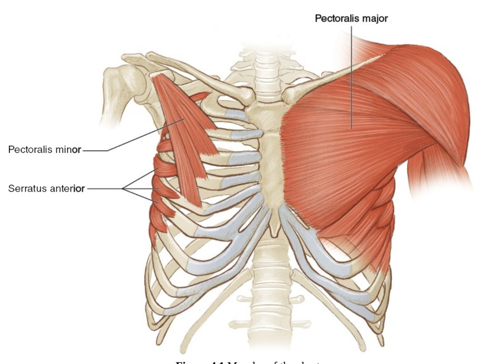
Như đã đề cập ở chương 2, cơ delta che phủ khớp vai. Cơ delta phát triển tốt mang lại cho vai vẻ ngoài tròn trịa. Cơ delta trước là mặt trước của cơ delta lớn và phối hợp với cơ ngực chính và các cơ khác, rất tích cực trong các chuyển động ngang của cánh tay trên theo yêu cầu của thuận tay và giao bóng. Về mặt này, cơ delta trước hỗ trợ cơ ngực trong việc gập hoặc khép theo chiều ngang. Cơ tam đầu cánh tay, được thảo luận ở chương 3, là cơ duỗi cánh tay mạnh mẽ, nằm phía sau xương cánh tay ở phía sau cánh tay. Mặc dù cơ tam đầu thực chất không phải là cơ ngực nhưng nó được huy động rất nhiều để hỗ trợ cơ ngực trong mọi động tác ép. Vì nó liên kết vai với khuỷu tay nên đầu dài của cơ tam đầu giúp ổn định khớp vai trong mọi động tác ấn và qua đầu. Ví dụ, cả cú vô lê thuận tay và trái tay đều kết hợp chuyển động ngang của cánh tay trên với phần mở rộng khuỷu tay. Cơ tam đầu hoạt động kết hợp với các cơ ngực như cơ ngực lớn để tạo ra chuyển động ép về phía trước. Hành động tương tự xảy ra ở phần phía trước hoặc phía trên của cú swing. Cơ tam đầu co lại để duỗi khuỷu tay, trong khi cơ ngực co lại để tạo ra chuyển động về phía trước của cánh tay và vai.
Cú Đánh Quần Vợt và Chuyển Động Ngực
Một bộ ngực khỏe sẽ giúp thực hiện các động tác đẩy và các động tác kéo cánh tay về phía cơ thể. Các cú đánh tennis được hưởng lợi nhiều nhất từ những động tác này bao gồm giao bóng và đánh trên cao, cú đánh nền thuận tay và cú vô lê thuận tay. Cú giao bóng và cú đánh trên đầu có nhiều thành phần thẳng đứng trong kiểu chuyển động của chúng hơn bất kỳ cú đánh nào khác. Các cơ ngực được kéo căng trong giai đoạn vung vợt sau (tải) và co đồng tâm trong cú vung về phía trước hoặc hướng lên về phía tiếp xúc và theo sau. Một kiểu kích hoạt cơ tương tự được thấy trong cú đánh thuận tay và vô lê, mặc dù kiểu chuyển động theo chiều ngang hơn. Cơ ngực khỏe là yếu tố then chốt khi đánh bóng cao hơn vai, đặc biệt là những quả bóng có độ nảy cao với xoáy lên. Cần có sức mạnh đáng kể để đánh những quả bóng này bên ngoài vùng tấn công điển hình và có đủ lực và độ xoáy để giành quyền kiểm soát điểm cụ thể đó. Khái niệm này cũng áp dụng cho những quả bóng được đánh từ một vị trí bị kéo căng trong khi bạn đang cố gắng thực hiện một cú đánh đặc biệt rộng hoặc thấp. Điều quan trọng là tập luyện các cơ này phối hợp với cơ lưng và các cơ giúp cơ thể xoay dễ dàng. Cả cơ nông và cơ sâu đều cần được chú ý. Vì quần vợt có thể tạo ra một số sự mất cân bằng ở phần trên cơ thể nên các chương trình rèn luyện sức mạnh nên tập trung vào sự cân bằng hợp lý của các nhóm cơ khác nhau. Sự cân bằng giữa bên phải và bên trái của cơ ngực rất quan trọng, cũng như sự cân bằng giữa cơ ngực và cơ lưng. Điều này không chỉ có thể ảnh hưởng đến hiệu suất mà quan trọng hơn là có thể ngăn ngừa chấn thương. Bởi vì tất cả các cơ của đai ngực đều tham gia vào mỗi cú đánh với tư cách là động lực chính (trong cú giao bóng, qua đầu, thuận tay và vô lê thuận tay) hoặc là cơ ổn định (trong cú vô lê trái tay và trái tay), các cơ này cần được chú ý cẩn thận. Trọng tâm chính là sức bền của cơ bắp, điều này sẽ cho phép bạn tung ra những cú đánh mạnh trong suốt các trận đấu dài. Sức mạnh, sức mạnh và sức bền phù hợp của cơ ngực cũng giúp cải thiện tư thế và khả năng giữ thăng bằng. Từ quan điểm hiệu suất, tư thế tốt và sự cân bằng sẽ tạo điều kiện thuận lợi cho việc thay đổi hướng, giúp bạn thiết lập đúng cách cho mỗi lần đánh và cho phép phục hồi nhanh chóng giữa các lần đánh. Cơ ngực, ngay cả khi không đóng vai trò là trong một cú đánh quần vợt cụ thể, thường đóng vai trò thứ yếu quan trọng. Ngoài những lợi ích liên quan trực tiếp đến hiệu suất, cơ ngực khỏe còn ngăn ngừa chấn thương và khuyến khích tư thế thích hợp. Phần thân trên, là một phần của thân, cần đóng vai trò như một liên kết chắc chắn giữa phần thân dưới và cánh tay thuận để truyền lực mặt đất trong suốt cú đánh. Hơn nữa, sự cân bằng tốt giữa cơ ngực và cơ lưng trên sẽ giúp bạn đạt được tư thế thích hợp, điều này có thể kéo dài sự nghiệp quần vợt của bạn và tăng tốc độ cú đánh cũng như sức mạnh mà bạn cung cấp cho mỗi cú đánh. Cơ ngực hoạt động tích cực nhất trong cú vung bóng về phía trước, qua đầu và thuận tay. Người ta ước tính rằng ở trình độ cao nhất, gần 75% tất cả các cú đánh quần vợt là thuận tay và giao bóng. Bởi vì điều này, sức bền cơ bắp cũng được ưu tiên như sức mạnh cơ bắp. Hầu hết các hoạt động của cơ ngực, đặc biệt là trong động tác xoay người về phía trước, có tính chất đồng tâm, nghĩa là các cơ co lại và rút ngắn lại trong quá trình chuyển động. Để giúp các cơ này chuẩn bị cho hoạt động rút ngắn này, các chương trình tập luyện phải phản ánh hoạt động tương tự.
Các Bài Tập Cho Vùng Ngực
Sự cân bằng cơ thích hợp giữa cơ ngực và cơ lưng rất quan trọng cho cả hiệu suất và phòng ngừa chấn thương. Hãy chắc chắn xen kẽ các bài tập trước và sau. Ví dụ: bạn có thể thực hiện các bài tập này vào những ngày khác nhau. Nguyên tắc chung là hai hoặc ba hiệp, từ 10 đến 12 lần lặp lại, đặc biệt là khi xây dựng nền tảng vững chắc. Điều quan trọng nữa là phải giải quyết cả bên chiếm ưu thế và không chiếm ưu thế để duy trì sự cân bằng giữa hai bên. Để đạt được mục đích này, hầu hết các bài tập ngực đều được thực hiện song phương. Sức bền cơ bắp để chịu đựng những trận đấu dài cũng quan trọng như sức mạnh và sức mạnh. Theo dõi mức tạ bạn sử dụng trong mỗi bài tập với chuyên gia về sức mạnh và thể lực được chứng nhận có hiểu biết về quần vợt. Hãy nhớ rằng bạn không tập luyện để trở thành một vận động viên thể hình. Mục tiêu của bạn là chơi quần vợt thành công và không bị chấn thương. Vì vậy, kỹ thuật tập luyện là rất quan trọng. Ném bóng vào ngực bằng bóng thuốc (trang 78) và ném bóng vào ngực nằm ngửa (trang 79) mang lại thêm lợi ích; bạn có thể dễ dàng bắt chước kiểu chuyển động của các cú đánh, làm cho mỗi bài tập quần vợt trở nên cụ thể. Được coi là bài tập đa khớp, bài tập bóng thuốc có sự tham gia của các bộ phận cơ thể khác để giúp phối hợp và ổn định trong quá trình thực hiện.
Hít Đất
Cách Thực Hiện
- Tạo tư thế plank nằm ngang với đầu, vai, lưng, hông, đầu gối và bàn chân trên một đường thẳng. Cánh tay dang rộng và lòng bàn tay đặt phẳng trên sàn, hai tay rộng bằng vai. Giữ hai bàn chân lại với nhau, đỡ trọng lượng của phần thân dưới trên các ngón chân. 2. Hít vào và từ từ uốn cong khuỷu tay để đưa thân mình gần sàn. Giữ cột sống ở tư thế trung lập để ngăn ngừa tình trạng duỗi quá mức (lắc lư). 3. Ở cuối động tác, co cơ ngực và cơ tam đầu để duỗi tay, thở ra khi cơ thể nâng lên. Lặp lại.
Các Nhóm Cơ Tham Gia
Cơ ngực lớn, cơ ngực phụ
Cơ delta trước, cơ tam đầu cánh tay Trọng tâm quần vợt
Chống đẩy là một bài tập tổng hợp tuyệt vời nhưng nó cũng có một số lợi ích cụ thể trong quần vợt. Các cơ liên quan được kích hoạt trong hầu hết các cú đánh tennis nhưng chủ yếu là ở cú thuận tay và giao bóng. Động tác vung vợt sau trong cú thuận tay sẽ kéo căng các cơ ngực, trong khi việc tăng tốc và theo sau sẽ kích hoạt các cơn co thắt đồng tâm của cơ ngực. Các mô hình tuyển dụng tương tự xảy ra khi giao bóng, nhưng các mặt phẳng chuyển động thì khác nhau; chúng thẳng đứng hơn và ít ngang hơn. Chống đẩy quá thấp có thể gây căng thẳng không cần thiết lên cơ vai trước và có thể dẫn đến đau và khó chịu liên quan đến lực tác động. Hạn chế chuyển động đi xuống một góc 90 độ ở khuỷu tay và vai để tránh chấn thương vai.
Biến Thể
Việc thay đổi vị trí chân của động tác chống đẩy sẽ cô lập các khía cạnh khác nhau của cơ thể ngực: • Nâng cao bàn chân lên ghế tập tạ để cô lập phần ngực trên và tăng độ khó cho bài tập. • Nâng cao thân người và đặt hai tay lên ghế tập tạ để tập trung vào phần ngực dưới. Điều này cũng làm giảm độ khó của bài tập bằng cách giảm lượng trọng lượng cơ thể sử dụng trong bài tập. Việc thay đổi vị trí tay khi chống đẩy sẽ cô lập các phần khác nhau của ngực: • Vị trí tay kim cương tăng độ khó và huy động cơ tam đầu nhiều hơn. Tạo tư thế chống đẩy và đặt tay sao cho ngón trỏ và ngón cái chạm vào nhau để tạo thành hình kim cương. • Vị trí tay rộng làm giảm độ khó và huy động cơ delta trước, bắp tay và ngực nhiều hơn. Vị trí tay rộng tương tự như tư thế chống đẩy truyền thống, nhưng mỗi tay được dịch chuyển ra xa cơ thể từ 6 đến 12 inch (15 đến 30 cm) để tăng tổng khoảng cách giữa hai tay.
Biến Thể
khác liên quan đến việc thực hiện động tác chống đẩy trên bề mặt không ổn định như bóng tập, bóng BOSU, đệm hơi hoặc ghế tập tạ
Đẩy Ngực Đứng Với Dây Kháng Lực Xen Kẽ
Cách Thực Hiện
- Gắn ống điện trở vào một vật ổn định. Đứng thẳng với hai chân rộng bằng vai, phần lõi và phần thân dưới thật ổn định. Quay lưng về phía phụ kiện ống, nắm chặt các tay cầm của ống, mỗi tay cầm một tay cầm. Bước ra khỏi sự kháng cự. Giữ khuỷu tay của bạn sang hai bên ở độ cao ngang vai. 2. Từ từ duỗi cánh tay phải ra phía trước cơ thể bằng cách co cơ ngực và duỗi thẳng khuỷu tay. Giữ vị trí kết thúc trong một hoặc hai giây. 3. Từ từ đưa cánh tay phải về vị trí ban đầu. Lặp lại chuyển động
bằng cánh tay trái.
Các Nhóm Cơ Tham Gia
Cơ ngực chính, cơ ngực phụ
Cơ delta trước, cơ tam đầu cánh tay, cơ bụng thẳng, cơ ngang bụng, cơ dựng cột sống, cơ đa năng Tập trung quần vợt Vì máy ép ngực băng xen kẽ đứng không sử dụng máy nên nó sử dụng một số cơ khác nhau để mang lại sự cân bằng cho cơ bắp, bao gồm các cơ của chóp xoay, vai và lưng trên ngoài cơ ngực. Khi bạn sử dụng ống kháng hoặc dây kháng lực ở tư thế đứng, các cơ ổn định ở lõi, lưng trên và vai phải tích cực co lại để duy trì tư thế tốt của cơ thể. Việc sử dụng cơ này ngoài việc sử dụng các động lực chính của ngực. Mặc dù cú thuận tay và giao bóng sẽ được hưởng lợi nhiều nhất từ bài tập này, nhưng các cơ được kích hoạt sẽ hỗ trợ các thành phần tăng tốc và giảm tốc của tất cả các cú đánh. Một lợi ích nữa là ống kháng lực dễ dàng mang theo khi đi du lịch. Kiểu chuyển động được mô tả có lợi không chỉ vì đây là một bài tập đa khớp mà còn vì nó liên quan đến các cơ tương tự được sử dụng trong các cú thuận tay và giao bóng. Điều này làm cho bài tập trở nên thiết thực và cụ thể hơn về quần vợt. Vì bài tập được thực hiện với tốc độ chậm hơn so với các động tác thực tế nên cũng rất an toàn
Biến Thể
Máy ép ngực TRX Đình chỉ Máy ép ngực Đứng thẳng, hai chân rộng bằng vai, lõi và phần thân dưới ổn định. Quay lưng về phía thiết bị huấn luyện hệ thống treo TRX (xem hướng dẫn TRX để biết thông tin lắp ráp), hãy nắm chặt các tay cầm, mỗi tay một tay cầm. Bước ra khỏi vị trí neo cho đến khi bộ truyền động treo TRX không bị chùng xuống. Giữ khuỷu tay của bạn sang hai bên ở độ cao ngang vai. Từ từ mở rộng cả hai cánh tay ra phía trước cơ thể bằng cách co cơ ngực và duỗi thẳng khuỷu tay. Giữ vị trí kết thúc trong 1 hoặc 2 giây. Từ từ trở lại vị trí bắt đầu.
Đẩy Tạ Ghế Ngang
Cách Thực Hiện
- Nằm trên ghế tập tạ, lưng áp sát vào ghế và bàn chân đặt phẳng trên sàn. Dùng tay cầm rộng bằng vai, nắm lấy một thanh tạ. Nhấc thanh đòn lên và duỗi thẳng cánh tay ra, giữ hai tay ở phía trên mắt. 2. Từ vị trí trên cùng này, từ từ hạ thanh đòn xuống bằng cách uốn cong khuỷu tay. Co lệch tâm các cơ ngực và các cơ xung quanh phía trước vai. Hạ thanh xuống có kiểm soát cho đến khi nó chạm nhẹ vào giữa ngực. 3. Ngay lập tức thở ra và đẩy thanh đòn thẳng lên bằng cách co đồng tâm cơ ngực cho đến khi khuỷu tay thẳng nhưng không bị khóa. Lặp lại.
Các Nhóm Cơ Tham Gia
Cơ bản: Cơ ngực lớn, cơ ngực nhỏ, cơ răng trước
Cơ delta trước, cơ tam đầu cánh tay Các bài tập vô-lê tiêu điểm quần vợt thường yêu cầu chuyển động đẩy hoặc ép tương tự như động tác ép ghế, ném bóng vào ngực và các bài tập liên quan khác. Các động tác ép như Bench Press giúp phát triển cả sức mạnh đồng tâm và lệch tâm. Cú vô lê là một cú xoay ngắn giống như cú đấm dựa vào cơ ngực, đặc biệt là cơ ngực chính và cơ răng trước. Bench press là một phiên bản chậm hơn, có kiểm soát của động tác vô lê và sẽ giúp cải thiện hiệu suất của cú đánh này và ngăn ngừa chấn thương. Duy trì sức ép tốt là điều quan trọng để bảo vệ các cơ khác trên cơ thể trong tất cả các cú đánh quần vợt. Lực ép đặc biệt cần thiết khi bạn phải đánh một cú đánh khi đang ở ngoài vị trí hoặc đánh một quả bóng rất cao. Ở những cú đánh này, phần thân dưới đôi khi không thể tạo ra nhiều lực như mong muốn, đòi hỏi phần thân trên phải đóng góp nhiều hơn bình thường
Biến Thể
Dumbbell Bench Press Thực hiện bài tập này với hai quả tạ thay vì một thanh tạ đòi hỏi khả năng kiểm soát một tay tốt hơn. Điều này sẽ dẫn đến việc huy động nhiều hơn các cơ ổn định xung quanh vai. Nếu bạn sử dụng tạ, bạn cũng có thể thay đổi vị trí tay.
Kiểu cầm vợt truyền thống, kiểu cầm sấp với lòng bàn tay hướng về phía trước, mang lại độ căng nhiều hơn khi trọng lượng được hạ xuống ngực. Cách cầm trung tính với lòng bàn tay hướng vào nhau sẽ giúp cơ tam đầu được huy động nhiều hơn.
Đẩy Tạ Ghế Dốc
Cách Thực Hiện
- Ngồi trên ghế nghiêng nghiêng 30 đến 35 độ, chân đặt vững trên sàn và lưng dựa vào ghế. Trong khi duy trì phần lõi và phần thân dưới ổn định, hãy nắm lấy thanh bằng tay cầm rộng bằng vai. 2. Nhấc thanh tạ lên để bắt đầu động tác. Duỗi thẳng cánh tay lên phía trên mắt, duỗi thẳng cánh tay nhưng không khóa khuỷu tay. Từ vị trí trên cùng này, từ từ hạ thanh đòn xuống bằng cách uốn cong khuỷu tay và co lệch tâm các cơ ngực và cơ xung quanh phía trước vai. Hạ thanh xuống có kiểm soát cho đến khi nó chạm nhẹ vào giữa ngực. 3. Ngay lập tức thở ra và đẩy thanh đòn thẳng lên bằng cách co đồng tâm cơ ngực và cơ vai trước cho đến khi khuỷu tay thẳng nhưng không bị khóa. Lặp lại.
Các Nhóm Cơ Tham Gia
Cơ ngực trên, cơ ngực phụ
Cơ delta trước, cơ tam đầu cánh tay
Ứng Dụng Trong Quần Vợt
Máy ép ghế nghiêng đặc biệt có lợi cho các cơ liên quan đến giao bóng, đánh đầu và thuận tay. Nó còn giúp phát triển sức mạnh cần thiết để đánh bóng cao hiệu quả. Điều này có lợi khi thi đấu với những người chơi tạo ra độ xoáy lớn cho bóng hoặc khi chơi trên các bề mặt tạo ra độ nảy cao. Khi một vận động viên mất vị trí, sức mạnh của ngực và vai thường góp phần vào sự thành công của cú đánh. Phát triển sức mạnh ở ngực trên và vai trước thông qua các bài tập như máy ép ghế nghiêng sẽ cho phép tạo ra lực lớn hơn ở các vị trí đầy thách thức truyền thống cho người chơi. Cụ thể, nó sẽ hỗ trợ việc giao bóng bằng cách cải thiện sức mạnh cơ bắp tổng thể ở ngang tầm mắt và cao hơn. Đây là lĩnh vực mà hầu hết người chơi quần vợt không tập luyện thường xuyên và thường là lĩnh vực cần phát triển
Biến Thể
Dumbbell Incline Bench Press Sử dụng tạ thay vì tạ đòn sẽ làm tăng sự phát triển của các cơ ổn định ở vai và giúp giảm khả năng mất cân bằng giữa bên trái và các bên phải. Bạn cũng có thể tăng độ nghiêng của băng ghế từ 25 độ lên 75 độ để tập trung cơn co thắt cao hơn vào ngực.
Ném Bóng Y Tế Trước Ngực
Cách Thực Hiện
- Chọn một quả bóng thuốc nặng vừa phải. Loại nặng từ 6 đến 20 pound (2,5 đến 9 kg) là phù hợp cho bài tập này. Hãy tính đến sức mạnh, độ tuổi của bạn và bất kỳ chống chỉ định nào khi chọn bóng. 2. Đứng trong tư thế thể thao, hai chân rộng bằng vai, đầu gối hơi cong và lõi co lại. Đối mặt với một bức tường vững chắc. Giữ quả bóng thuốc bằng cả hai tay. Bắt đầu với cánh tay mở rộng trước ngực. 3. Cong khuỷu tay của bạn một cách bùng nổ để đưa quả bóng thuốc vào ngực, sau đó nhanh chóng ném quả bóng vào tường bằng cách co cơ ngực và cơ tam đầu. Lấy bóng và lặp lại.
Các Nhóm Cơ Tham Gia
Cơ bản: Cơ ngực chính, cơ ngực phụ, cơ răng trước
Cơ delta trước, cơ tam đầu cánh tay, cơ bụng thẳng, cơ bụng ngang, cơ dựng cột sống, cơ nhiều cơ Tập trung quần vợt Ném ngực bóng thuốc là một bài tập tuyệt vời chỉ cần một quả bóng thuốc. Trọng tâm chính là cơ ngực chính, cơ tam đầu và cơ răng trước. Các cơ này đặc biệt hoạt động trong quá trình vung bóng lên hoặc về phía trước của cú giao bóng quần vợt ngoài hầu hết các cú đánh khác. Các cơ phụ mang lại sự ổn định và cân bằng trong bài tập này, tương tự như sự ổn định và cân bằng mà chúng mang lại trong quá trình chuyển động giao bóng
Biến Thể
Ném bóng vào ngực nằm ngửa Ném bóng vào ngực là một động tác bài tập bật nhảy đàn hồi (plyometric) bùng nổ trên cơ thể. Để tăng độ khó, hãy nhờ đối tác hoặc huấn luyện viên giúp bạn thử
Biến Thể
này. Nằm ngửa trên mặt đất. Cong đầu gối và đặt gót chân phẳng trên sàn. Duỗi thẳng hai tay lên trước mắt, nắm lấy một quả bóng thuốc nhẹ (4 đến 8 pound [1,8 đến 3,63 kg]). Cong khuỷu tay của bạn, đưa quả bóng thuốc vào ngực. Khi quả bóng thuốc chạm vào ngực bạn, hãy nhanh chóng ném quả bóng cao nhất có thể qua mắt bạn, đảm bảo rằng đối tác của bạn đang ở vị trí thích hợp ở đó để bắt nó. Sau khi bắt được bóng, đối tác của bạn nhẹ nhàng thả bóng qua ngực bạn. Bắt quả bóng thuốc bằng cách co cơ ngực lệch tâm. Sau khi bắt được bóng, ngay lập tức cố gắng ném nó lên lần nữa. Tập trung vào việc tạo ra sức mạnh bùng nổ từ phần thân trên.
Dang Ngực Với Tạ Đơn
Cách Thực Hiện
- Nằm trên ghế tập tạ phẳng, lưng áp sát vào ghế và bàn chân đặt phẳng trên sàn. Mỗi tay nắm một quả tạ. Sử dụng cách cầm trung tính, lòng bàn tay hướng vào nhau. Mở rộng cánh tay của bạn trên ngực, khuỷu tay hơi cong. 2. Từ từ hạ tạ xuống sang hai bên, hơi cong khuỷu tay cho đến khi khuỷu tay của bạn vừa cao dưới vai. 3. Nâng tạ lên bằng cách co cơ ngực để trở về vị trí ban đầu
vị trí bắt đầu và lặp lại.
Các Nhóm Cơ Tham Gia
Cơ ngực chính
Cơ delta trước, cơ cánh tay, bắp tay cánh tay
Ứng Dụng Trong Quần Vợt
Động tác bay ngang ngực với tạ là một bài tập tuyệt vời để bạn chuẩn bị cho cú đánh thuận tay. Cú đánh thuận tay hiện đại được thực hiện từ một thế đứng cởi mở và với một cú xoay người rất mạnh. Vì vậy, cơ bắp cần phải khỏe nhưng cũng phải có khả năng chống mệt mỏi để bạn có thể thi đấu trong suốt một trận đấu dài. Việc sử dụng tạ cho bài tập này thay vì dùng máy sẽ buộc các cơ phụ phải mang lại sự ổn định và thăng bằng. Bài tập này cũng sẽ giúp hạn chế khả năng chấn thương khi thực hiện cú đánh thuận tay rộng hoặc khi điểm tựa của bạn rộng hơn bình thường. Ngực và cánh tay được yêu cầu phải căng ra ở mức độ lớn hơn trong khi vẫn duy trì lực phát ra
Biến Thể
Cable Machine Đứng ngực Fly Bạn có thể thực hiện kiểu chuyển động tương tự với máy cáp thay vì tạ. Đứng hai chân rộng bằng vai. Quay lưng lại với máy cáp. Mỗi tay nắm một tay cầm cáp và thực hiện động tác bay tương tự được mô tả trong động tác bay tạ bằng ngực. Một cách khác là thực hiện bài tập trên ghế nghiêng hoặc ghế dốc để tác động vào cơ ngực từ một góc độ khác. Điều này sẽ kích thích nhiều loại sợi cơ hơn trong quá trình tập luyện.
.
Vùng Lưng
Bạn không được bỏ qua cơ lưng khi tập luyện để thi đấu quần vợt và phòng ngừa chấn thương. Mặc dù các cơ này hoạt động đồng tâm, đặc biệt là trong cú đánh trái tay, chúng ta không thể bỏ qua tầm quan trọng của hoạt động lệch tâm của các cơ này, đặc biệt là trong các giai đoạn tiếp theo của cú giao bóng và cú đánh thuận tay. Một tấm lưng khỏe sẽ khuyến khích tư thế đúng, tạo sự cân bằng giữa bên chiếm ưu thế và không chiếm ưu thế của cơ thể, bảo vệ các khớp xung quanh và đóng vai trò liên kết giữa phần dưới và phần trên của cơ thể. Vì trong quần vợt, lưng phải cung cấp khả năng uốn, duỗi và xoay, nên phần lưng trên và dưới phát triển tốt là rất quan trọng để đạt được hiệu suất tối ưu trên sân. Như đã đề cập ở chương 4, một số cơ quấn quanh và có thể được gọi là cơ lưng (sau) hoặc cơ ngực (trước). Ví dụ, cơ ngực nhỏ và cơ răng trước được nêu bật trong chương 4, mặc dù chúng cũng đóng vai trò hỗ trợ trong một số bài tập trong chương này.
Giải Phẫu Vùng Lưng
Các cơ ở lưng mang lại sự linh hoạt và khả năng vận động của cột sống, đồng thời khi được tập luyện đúng cách sẽ thúc đẩy tư thế tốt. Nói chung, các cơ sâu hơn có tác dụng hỗ trợ và di chuyển cột sống, trong khi các cơ nông hơn sẽ di chuyển cánh tay và vai. Các cơ sâu được xây dựng thành từng lớp. Có rất nhiều cơ trong các lớp này, nhưng vì mục đích của chương này, chúng ta sẽ chỉ tập trung vào các và các cơ được đề cập trong các bài tập. Nhiều cơ lưng thường được mô tả là cơ vai; tuy nhiên, vì sự tương tác quan trọng của chúng với mặt sau nên chúng xứng đáng được đề cập ở đây. Cơ chóp xoay (xem hình 2.1, trang 24) được tạo thành từ bốn cơ ngắn: cơ dưới vai, cơ trên gai, cơ dưới gai và cơ tròn bé. Các cơ này gắn vào và củng cố bao khớp và duy trì xương cánh tay trong ổ khớp. Chúng cực kỳ quan trọng đối với sự ổn định của khớp vai. Cơ delta (xem hình 2.2, trang 24) tạo cho vai vẻ tròn trịa và là động lực chính để nâng cánh tay ra phía trước hoặc sang một bên cơ thể
Ở phần lưng trên (hình 5.1, trang 84), cơ thang bám vào hộp sọ và giúp giữ và xoay đầu. Nó cũng hoạt động phối hợp với cơ nâng xương bả vai để di chuyển xương bả vai lên và hướng vào đường giữa của cơ thể. Cơ lưng rộng là cơ lưng lớn nhất và khỏe nhất. (Latissimus có nghĩa là rộng nhất trong tiếng Latin.) Cơ này được gắn vào cột sống từ phía trên mép dưới của cơ thang và chạy xuống phía sau xương chậu. Nó giúp kéo cánh tay (xương cánh tay) xuống về phía đường giữa của cơ thể và cũng hỗ trợ kéo vai ra sau.
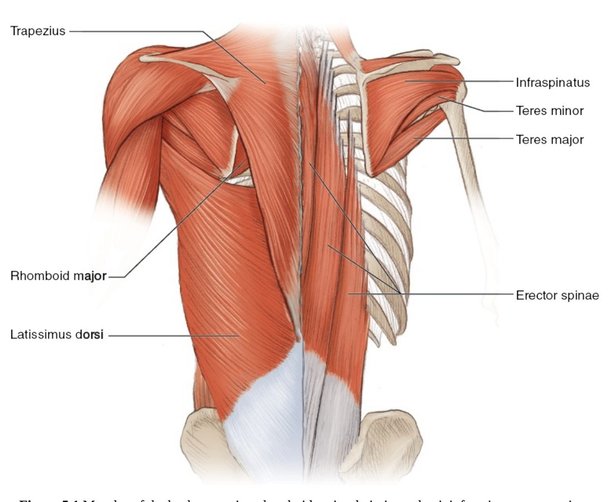
cơ tròn lớn và cơ dựng cột sống. Đây là tạo nên hình dáng chữ V thuôn. Các khối hình thoi (chính và phụ) chạy giữa cột sống và xương bả vai và di chuyển xương bả vai lên xuống (rút lại). Cơ hình thoi là tham gia vào việc ép hai bả vai lại với nhau cung cấp tác động ngược lại (kéo dài) là cơ răng trước, cơ này quấn quanh thành của lồng xương sườn để gắn vào mép trong của xương bả vai. Nhóm cơ cương cứng cột sống tạo thành lớp ngoài của cơ lưng. Cột sống cương cứng giúp ổn định cột sống và giúp bạn duy trì tư thế cương cứng hoặc kéo dài cột sống. Hai nhóm cơ quan trọng ở lưng dưới bao gồm multifidus và quadratus lumborum (hình 5.2), rất quan trọng cho sự ổn định của cột sống. Cũng quan trọng, đặc biệt đối với những người chơi quần vợt, là cơ psoas chính, kết nối cột sống thắt lưng với các cơ gấp hông
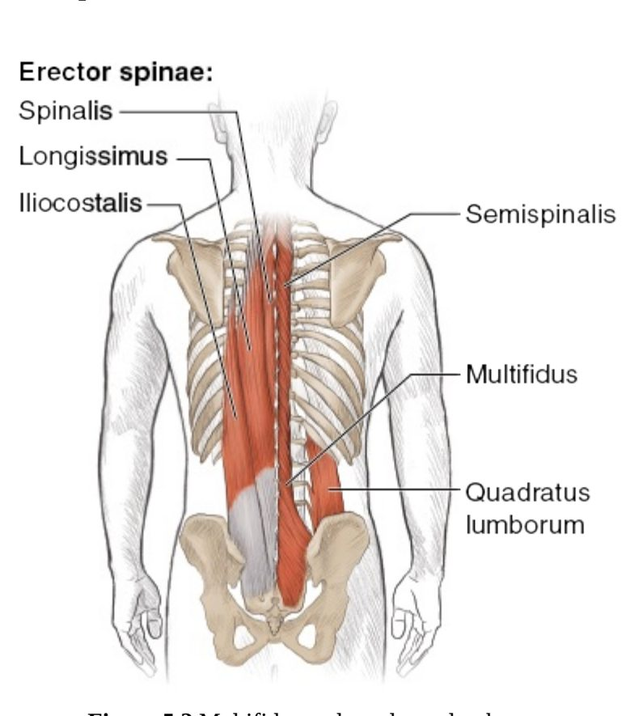
Cú Đánh Quần Vợt và Chuyển Động Lưng
Trong khi giao bóng, giai đoạn tải (swing lại) đặt lưng vào vị trí quá duỗi và xoay. Vị trí này gây nhiều căng thẳng cho các cơ và các khớp xung quanh lưng. Đây là lý do chính để tăng cường cả cơ lưng trên và dưới. Quần vợt là môn thể thao khẩn cấp. Thường xuyên có những lần dừng và bắt đầu, lao tới những quả bóng gần như ngoài tầm với và thay đổi hướng nhiều lần cho mỗi điểm. Tất cả những chuyển động này đều đặt ra những yêu cầu nặng nề lên cơ thể, đặc biệt là phần lưng. Kết hợp điều này với thực tế là nhiều tay vợt bỏ bê việc rèn luyện phần lưng, ít nhất là ở mức độ tương đương với các cơ ở phía trước cơ thể, và bạn có thể thấy các tay vợt đã tự chuẩn bị cho chấn thương hoặc thành tích kém như thế nào. Các bài tập được nêu trong chương này giúp tăng cường sức mạnh cho các cơ lưng, đặc biệt tập trung vào các cơ liên quan đến việc thực hiện cú giao bóng và thuận tay cũng như các cơ là động lực chính của cú đánh trái tay bằng một và hai tay trong cú vung tăng tốc (về phía trước). Vì lưng có vai trò quan trọng trong việc truyền lực từ phần dưới lên phần trên cơ thể như một phần của chuỗi động năng nên các bài tập xoay cũng được khuyến khích và đưa vào.
Các Bài Tập Cho Vùng Lưng
Các bài tập lưng nên được thực hiện thường xuyên. Cân bằng cơ bắp rất quan trọng đối với người chơi tennis. Vì các cơ ở phía trước cơ thể - ngực và phía trước vai - thường mạnh hơn ở người chơi quần vợt do các bộ phận cơ thể này hoạt động lặp đi lặp lại trong khi đánh, nên cơ lưng cần được chú ý đặc biệt. Thực hiện các bài tập lưng vài lần một tuần, giữa các buổi tập có một ngày nghỉ ngơi. Kỹ thuật phù hợp là rất quan trọng; do đó, chúng tôi khuyên bạn nên tham khảo ý kiến của một chuyên gia về sức mạnh và điều hòa được chứng nhận, người am hiểu về quần vợt. Khi sử dụng thiết bị, hãy thực hiện hai hoặc ba hiệp, từ 10 đến 12 lần lặp lại. Nhiều bài tập có thể được thực hiện bằng trọng lượng cơ thể của chính bạn hoặc với quả bóng thuốc. Bài tập bóng y học là bài tập toàn thân kết hợp các động tác xoay và do đó rất đặc trưng cho môn quần vợt. Mặc dù quần vợt thường yêu cầu cơ lưng hoạt động lệch tâm nhưng chúng tôi khuyên bạn nên bắt đầu chương trình tăng cường sức mạnh và điều hòa cho lưng bằng các bài tập đồng tâm để phát triển cơ sở sức mạnh vững chắc. Huấn luyện viên sức mạnh và thể lực có thể cho bạn biết khi nào nên bắt đầu kết hợp các bài tập sức mạnh lệch tâm vào chương trình cá nhân của bạn.
Kéo Xô
Cách Thực Hiện
- Quỳ trên thảm, quay mặt về phía máy kéo cáp. Nắm lấy thanh đòn với hai tay rộng hơn vai một chút, lòng bàn tay hướng ra ngoài. Thiết lập một lõi ổn định. 2. Kéo thanh xuống phía trước đầu của bạn đến mức ngang bằng xương ức (xương ức). Tập trung vào việc ép chặt hai bả vai của bạn lại với nhau. 3. Từ từ quay lại vị trí ban đầu và lặp lại.
Các Nhóm Cơ Tham Gia
Cơ bản: cơ lưng rộng, hình thang, cơ delta sau, cơ thoi lớn, cơ thoi
Cơ nhị đầu cánh tay, cơ tròn tròn
Ứng Dụng Trong Quần Vợt
Các cơ tham gia vào bài tập này đóng vai trò quan trọng trong việc bảo vệ lưng trên và khớp vai bằng cách cung cấp sức mạnh lệch tâm trong các giai đoạn tiếp theo của cú giao bóng và cú thuận tay. Việc rút lại xương bả vai giúp tăng cường các cơ bảo vệ xương bả vai. Đây là những điều rất quan trọng cơ bắp cho người chơi quần vợt. Họ cũng chịu trách nhiệm về giai đoạn tải cú giao bóng. Bài tập này bao gồm các nhóm cơ lớn nhất của lưng. Cơ lưng rộng là cơ lớn nhất và mạnh nhất ở lưng và cung cấp cả các cơn co đồng tâm và lệch tâm trong các cú đánh quần vợt.
Biến Thể
Nâng cằm Nếu bạn đặt hai tay gần hơn, cách nhau khoảng 2 hoặc 3 inch (5 đến 8 cm) và xoay lòng bàn tay hướng vào trong tư thế ngửa cằm, bạn sẽ tập trung nhiều hơn vào các cơ ổn định của xương bả vai. Nhớ kéo thanh đòn xuống phía trước đầu; kéo trọng lượng xuống phía sau đầu sẽ gây căng thẳng không cần thiết cho cả khớp và cơ ổn định xương bả vai. Kéo tạ xuống phần trên của ngực đồng thời đẩy nhẹ ngực ra ngoài và hướng lên trên. Bạn cũng có thể thực hiện bài tập này trên máy kéo xô.
Kéo Xoay
Cách Thực Hiện
- Trên máy ròng rọc cáp, đặt chiều cao cáp ngang hông. Nắm chặt tay cầm bằng tay trái ở bên ngoài bàn chân phải trong khi đứng ở tư thế thể thao bên cạnh máy cáp. (Ở tư thế thể thao, trọng lượng của bạn được phân bổ đều giữa hai chân, đầu gối hơi cong, lưng thẳng, đầu ngẩng cao và mắt hướng về phía trước.) Giữ thăng bằng tốt khi bạn hơi nghiêng về phía trước, bắt chước tư thế sẵn sàng. 2. Trong khi duy trì tư thế thể thao, hãy kéo dây cáp sao cho khuỷu tay trái của bạn cao ngang vai trái thông qua sự co thắt của cơ lưng trên. Di chuyển chậm và có kiểm soát trong khi tập trung vào
ép hai bả vai của bạn lại với nhau.
- Sau khi hoàn thành các lần lặp lại trên cánh tay trái, hãy đổi tay và thực hiện động tác tương tự bằng cánh tay phải.
Các Nhóm Cơ Tham Gia
Cơ thoi lớn, cơ thoi phụ, cơ xiên trong, cơ xiên ngoài, cơ dựng đứng, cơ lưng rộng
Cơ delta sau, cơ thang
Ứng Dụng Trong Quần Vợt
Phần lưng trên rất quan trọng trong tất cả các khía cạnh giảm tốc của các cú đánh quần vợt. Những cơ lưng này cần được rèn luyện theo một mặt phẳng chuyển động cũng như trong các mặt phẳng chuyển động quay. Xoay vòng là cực kỳ quan trọng trong trò chơi quần vợt hiện đại. Cả những cú đánh nền thuận tay và trái tay cũng như những cú giao bóng đều yêu cầu sự xoay cơ thể đáng kể để tạo ra những cú đánh mạnh mẽ. Cả cơ lưng trên và lưng dưới đều được cải thiện bằng cách kết hợp bài tập này vào một chương trình tổng thể. Một chương trình tập luyện toàn diện không chỉ tập trung vào các bài tập gập và duỗi mà còn tập trung vào việc phát triển cơ lưng theo các hướng xoay để giúp tăng cường các cơ cần thiết để bảo vệ vai và giúp làm chậm vợt và phần trên cơ thể sau khi tiếp xúc với bóng
Biến Thể
Bài tập dùng bóng thuốc Nếu không có sẵn máy ròng rọc cáp, bài tập này có thể được lặp lại bằng cách sử dụng quả bóng thuốc. Hai người chơi đứng quay lưng lại với nhau. Khi họ xoay, họ đưa bóng thuốc rơi vào nhau. Đảm bảo mỗi người chơi được xoay theo từng hướng.
Kéo Cáp Ngồi
Cách Thực Hiện
- Ngồi đối diện với máy cáp đặt sát sàn hoặc sử dụng máy tập ngồi theo hàng nếu có. Nắm tay cầm ở độ cao ngang ngực. 2. Kéo tay cầm về phía bạn khi bạn siết chặt hai bả vai lại với nhau (rút lại). Duy trì lõi ổn định. 3. Từ từ thả tạ trở lại vị trí ban đầu và lặp lại.
Các Nhóm Cơ Tham Gia
Cơ thang, hình thoi lớn, hình thoi nhỏ, cơ lưng rộng, cơ delta sau
Cơ nhị đầu cánh tay
Ứng Dụng Trong Quần Vợt
Đây có thể là bài tập thân trên quan trọng nhất đối với người chơi quần vợt. Các cơ tham gia vào bài tập này, bao gồm cả cơ ổn định xương bả vai, cần được tăng cường sức mạnh để giúp bảo vệ vai và lưng trên. Với cách đánh bóng và đặc biệt là các cú đánh thuận tay, các cơ được phát triển trong bài tập này hoạt động lệch tâm để giúp bảo vệ vai và lưng trên, đặc biệt là trong quá trình tiếp theo sau khi tiếp xúc với bóng. Ngoài ra, các cơ này cực kỳ quan trọng trong cú đánh trái tay vì chúng cung cấp sức mạnh (thông qua sự co đồng tâm) cho cú vung về phía trước. Phát triển khả năng kiểm soát co rút hình thoi và xương bả vai tốt thông qua bài tập này sẽ cải thiện tư thế cơ thể và giảm khả năng cơ hình thang phát triển quá mức, có thể dẫn đến đau cổ và nguy cơ chấn thương cao hơn
Biến Thể
Hàng đứng Bài tập này cũng có thể được hoàn thành từ tư thế đứng. Ngoài ra, nó có thể được thực hiện ở tư thế ngồi, nhưng khi trọng lượng được kéo về phía sau, khuỷu tay được giữ ở ngang vai, cho phép có sự tham gia đáng kể của cơ.
cơ delta sau.
Dang Ngược
Lưu Ý An Toàn
Không thực hiện bài tập này với tạ nặng
Cách Thực Hiện
- Nằm úp mặt trên ghế nghiêng đặt nghiêng 45 đến 60 độ. Giữ một
quả tạ ở mỗi tay. Cánh tay phải duỗi thẳng hoặc uốn cong tối thiểu ở khuỷu tay. Lòng bàn tay hướng vào trong.
- Nâng khuỷu tay lên ngang vai, giữ lòng bàn tay hướng xuống. 3. Từ từ hạ xuống vị trí bắt đầu.
Các Nhóm Cơ Tham Gia
Cơ delta sau, cơ thoi lớn, cơ thoi nhỏ, hình thang, cơ to lớn dorsi, cơ tròn tròn lớn, cơ tròn nhỏ, cơ dưới gai
Cơ cánh tay, cơ bắp tay cánh tay
Ứng Dụng Trong Quần Vợt
Bài tập này tập trung vào các cơ giúp bảo vệ đai vai. Chúng đặc biệt tích cực trong quá trình tiếp xúc và giảm tốc của cú đánh vô lê trái tay. Mục đích là tăng cường các chất ổn định của xương bả vai bằng cách co các nhóm cơ xung quanh. Bài tập này nên được thực hiện với mức tạ nhẹ vì mục tiêu là rèn luyện sức bền cơ bắp trong khi vẫn duy trì kỹ thuật phù hợp. Phần lớn những gì xảy ra trong một trận đấu quần vợt rất giống với bài tập này ở chỗ người chơi sẽ phải thực hiện nhiều cú trái tay trong suốt thời gian của trận đấu. Động tác bay ngược cho phép người chơi tăng cường các cơ thích hợp để cải thiện sức bền cơ bắp trong các trận đấu dài
Kéo Tạ Cúi Người
Cách Thực Hiện
- Đứng hai chân rộng bằng vai, đầu gối hơi cong (gập đầu gối khoảng 30 độ). Khi bạn duy trì lõi ổn định, hãy cúi xuống và nắm lấy thanh tạ bằng cả hai tay rộng hơn vai một chút. Đừng quay lưng lại. Nâng thanh tạ lên cao ngang đầu gối. 2. Từ vị trí bắt đầu này, ép hai bả vai của bạn lại với nhau, đồng thời co cơ hình thoi và cơ lưng rộng để kéo thanh về phía ngực trong khi vẫn giữ được phần lõi ổn định và phần thân dưới. 3. Từ từ quay lại vị trí ban đầu và lặp lại.
Các Nhóm Cơ Tham Gia
Cơ bản: Cơ delta sau, cơ thoi lớn, cơ thoi nhỏ, cơ lưng rộng
Cơ thang, cơ dựng cột sống
Ứng Dụng Trong Quần Vợt
Mục đích của động tác tập cúi người là để cải thiện sức mạnh của các cơ ổn định xương bả vai và cơ lưng. Ngoài ra, tương tự như bài tập lat pull-down, đây là bài tập tuyệt vời giúp phát huy sự cân bằng cơ bắp giữa bên thuận và bên không thuận trên cơ thể. Các cơ này hoạt động lệch tâm trong giai đoạn tiếp theo của cả cú giao bóng và thuận tay, đồng thời chúng cũng tham gia vào giai đoạn đồng tâm (xoay về phía trước) của cú đánh trái tay. Hàng uốn cong cũng giúp phát triển sự ổn định của lõi
Biến Thể
Dumbbell Row Bài tập này cũng có thể được thực hiện bằng cách sử dụng tạ thay vì tạ.
Đùi Chết
Cách Thực Hiện
- Đặt tạ trên mặt đất hoặc bệ nâng. Đứng hai chân rộng khoảng bằng vai. Nắm lấy thanh bằng tay cầm quá tay, hai tay cách nhau ít nhất rộng bằng vai và ngồi xổm xuống sao cho hông gần song song với đầu gối. Siết chặt hai bả vai của bạn lại với nhau.
- Co cơ duỗi hông và đứng thẳng, nâng thanh đòn lên ngang hông trong khi vẫn giữ hai tay duỗi thẳng. 3. Co duỗi đầu gối và hạ tạ xuống sàn một cách có kiểm soát để trở về vị trí ban đầu.
Các Nhóm Cơ Tham Gia
Cơ bản: Cơ mông lớn, bắp tay đùi, cơ bán mạc, cơ bán gân, cơ dựng cột sống
Cơ thắt lưng lớn, cơ nhiều cơ, cơ tứ đầu lumborum, cơ rộng, cơ thang
Ứng Dụng Trong Quần Vợt
Một trong những vùng cơ thể thường xuyên bị chấn thương nhất là lưng dưới. Bài tập này tác động lên một số vùng khác nhau trên cơ thể, bao gồm cơ thang và hông, nhưng trọng tâm chính là lưng dưới. Phần lưng dưới khỏe mạnh rất quan trọng vì lưng là mối liên kết giữa phần trên và phần dưới cơ thể. Lực sinh ra ở phần dưới cơ thể phải được truyền qua lưng khỏe đến thân và cánh tay và cuối cùng là vợt và bóng. Sự chuyển giao lực này có thể được nhìn thấy rõ ràng trong chuyển động giao bóng. Giai đoạn nâng (hướng lên) của deadlift phát triển sức mạnh thông qua một chuyển động tương tự như chuyển động được sử dụng khi gập đầu gối khi giao bóng
Biến Thể
Tay cầm trên-dưới Để làm việc với trọng lượng nặng hơn hoặc để giữ cho trọng lượng không bị trượt khỏi tay bạn, hãy sử dụng tay cầm trên-dưới. Nắm lấy thanh bằng một lòng bàn tay hướng về phía bạn và người khác quay lưng lại với bạn.
Vùng Lõi và Thân Mình
Cầu thủ Atennis có nửa trên và nửa dưới, nửa bên trái và bên phải, mặt trước và mặt sau. Phần lõi hoặc thân kết nối từng khu vực này với phần còn lại của cơ thể và do đó có thể là phần quan trọng nhất của cơ thể để tập luyện đúng cách. Phần lõi bao gồm một số nhóm cơ lớn hơn tham gia vào chuyển động trong từng mặt phẳng chuyển động. Trong trò chơi quần vợt hiện đại, các chuyển động xoay nói riêng đã trở nên phổ biến hơn và người chơi quần vợt cần có cái nhìn ba chiều trong quá trình tập luyện để phát triển một chương trình cân bằng. Đơn giản chỉ thực hiện một vài động tác gập bụng hoặc gập bụng không giúp cơ thể chuẩn bị cho các động tác xoay, sang bên, duỗi quá mức và uốn cong cần thiết để thi đấu thành công ở cấp độ giải trí hoặc thi đấu. Lõi đóng vai trò là thành phần quan trọng trong việc tổng hợp các lực ban đầu được tạo ra từ mặt đất và truyền qua phần còn lại của cơ thể đến vợt và bóng. Trọng tâm của các bài tập cốt lõi dành riêng cho quần vợt phải là sự ổn định, thăng bằng, tư thế, nâng cao hiệu suất và phòng ngừa chấn thương.
Giải Phẫu Vùng Lõi
Giải phẫu của lõi tập trung vào trung tâm của cơ thể. Phần lõi được tạo thành từ các nhóm cơ ở phía trước, phía sau và hai bên cơ thể cũng như các cơ quấn quanh cơ thể. Cơ dựng đứng (hình 6.1a, trang 100) chạy dọc theo cột sống và điều khiển sự gập về phía trước. Nó giúp duy trì tư thế thẳng đứng. Nó thực sự được tạo thành từ một số cơ và kéo dài khắp vùng thắt lưng, ngực và cổ. Cả cơ quadratus lumborum và multifidus đều là hai nhóm cơ sâu giúp ổn định cột sống và uốn cong sang bên. Cơ thắt lưng lớn đôi khi được gọi là cơ thắt lưng chậu, về mặt kỹ thuật là sự kết hợp giữa cơ chậu lớn và cơ psoas (hình 6.1b, trang 100). Nó kết nối cột sống thắt lưng với các cơ gấp hông. Xương chậu rất quan trọng trong việc uốn cong chân về phía trước. Tuy nhiên, cả cơ thắt lưng lớn và cơ thắt lưng lớn cũng uốn cong thân về phía trước và có thể nâng thân lên từ tư thế nằm (như trong tư thế ngồi dậy) vì cơ thắt lưng lớn đi qua một số khớp đốt sống và khớp cùng chậu.
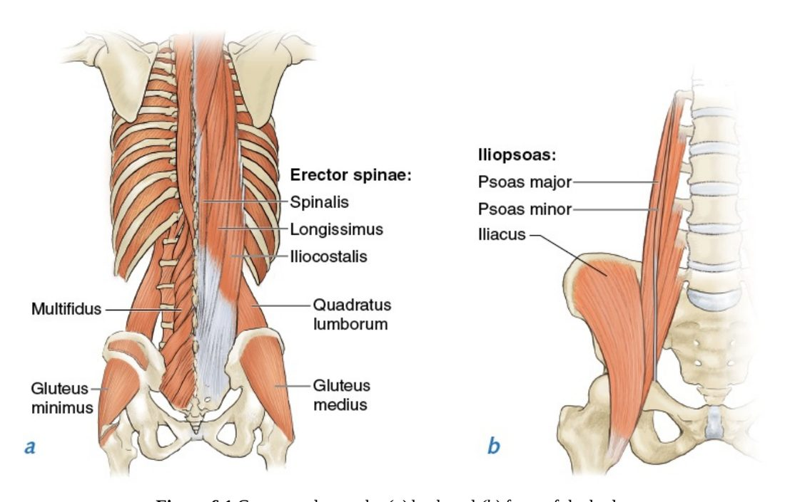
Cơ bụng thẳng (hình 6.2, trang 100) bao gồm hai cơ dạng dây đeo chạy dọc. Nó kéo dài dọc theo phía trước bụng. Đây là cơ bắp thường được coi là cơ sáu múi ở các vận động viên được đào tạo bài bản. Cơ bụng thẳng bắt nguồn từ phía trước lồng xương sườn và bám vào xương chậu. Cơ bụng ngang nằm sâu hơn, dưới cơ bụng thẳng. Cơ bụng ngang quấn quanh cơ thể, gần giống như một chiếc thắt lưng tự nhiên và các sợi của nó chạy theo chiều ngang.
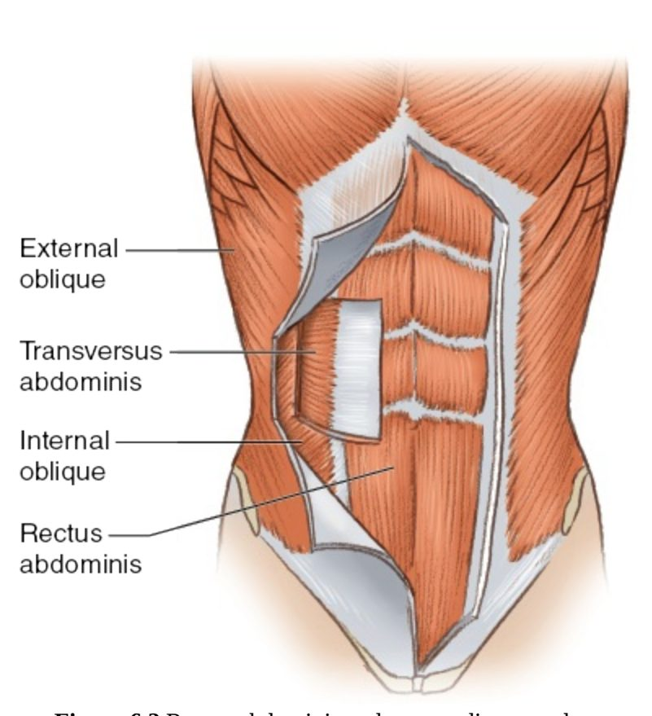
Nó rất quan trọng trong việc ổn định xương chậu và hỗ trợ thân. Cả cơ ngang bụng và cơ xiên trong đều nằm bên dưới cơ xiên ngoài. Xiên bên trong là một tấm rộng và mỏng. Các sợi của nó chạy lên và hướng vào trong một góc khoảng 90 độ so với đường xiên ngoài. Các đường xiên hỗ trợ xoay thân cây. Cơ răng trước (cũng được thảo luận ở chương 4 và 5) là một cơ gồm 8 phần kéo xương bả vai về phía trước (kéo dài). Nó cũng giúp ổn định xương bả vai. Nó bắt nguồn từ bề mặt của tám hoặc chín xương sườn trên ở bên cạnh ngực và chạy dọc theo toàn bộ chiều dài phía trước của bờ trong của xương bả vai.
Cú Đánh Quần Vợt và Chuyển Động Vùng Lõi
Những người chơi quần vợt ngày nay thường xuyên đánh những cú đánh nền từ thế đứng cởi mở. Thế đứng mở yêu cầu cơ thể phải xoay theo mặt phẳng ngang hoặc nằm ngang. Trong giai đoạn tải (swing lại) của cú đánh, các cơ ở phần giữa hoặc lõi được kéo căng để năng lượng đàn hồi tiềm tàng này có thể được giải phóng dưới dạng động năng trong giai đoạn tăng tốc (tiến) của cú đánh. Sự chuẩn bị thích hợp cốt lõi là điều bắt buộc trong việc giúp ngăn ngừa chấn thương và tạo ra hiệu suất tốt hơn trên sân. Hãy nhớ rằng, nhiều cơ trong số này cũng truyền lực từ phần dưới lên phần trên cơ thể trong chuỗi động năng. Việc tập luyện nên bao gồm các cơ ở phía sau, phía trước và hai bên của cơ thể - nói cách khác là một chương trình cân bằng. Một chương trình cân bằng hợp lý sẽ giúp duy trì tư thế, sự ổn định và kiểm soát cơ thể ở những tư thế khắc nghiệt. Thân và lõi có liên quan đến từng cú đánh quần vợt; do đó, việc tăng cường các cơ này quan trọng hơn việc tăng cường bất kỳ cơ nào khác.
Các Bài Tập Cho Vùng Lõi
Nhiều tay vợt được dạy gập bụng hàng ngày như một phần trong quá trình luyện tập của họ. Đối với những người chơi quần vợt, không có gì sai khi thực hiện động tác gập bụng, gập bụng hoặc bất kỳ bài tập nào khác có lợi cho cơ bụng. Tuy nhiên, điều quan trọng hơn là tạo ra sự cân bằng hợp lý. Hãy chắc chắn bao gồm các bài tập cho phía trước và phía sau cũng như các cơ chịu trách nhiệm xoay cơ thể. Thực hiện các bài tập này ít nhất hai ngày một lần với một ngày nghỉ ngơi ở giữa sẽ giúp ích rất nhiều cho hiệu suất của bạn cũng như ngăn ngừa chấn thương. Nhiều bài tập trong số này có thể được thực hiện mà không cần sử dụng thiết bị. Trọng lượng cơ thể của bạn cung cấp kháng lực. Nếu cần thêm lực cản, hãy sử dụng quả bóng thuốc hoặc một dạng vật cản có trọng lượng khác như tạ, đĩa tạ hoặc bao cát. Vì đây là một số nhóm cơ lớn hơn của cơ thể nên chúng mang lại sự cân bằng và ổn định. Tốc độ không phải là vấn đề lớn khi bạn thực hiện các bài tập này. Thực hiện chúng với kỹ thuật phù hợp và đảm bảo bạn tác động đến tất cả các mặt của lõi.
Gập Bụng
Cách Thực Hiện
- Nằm ngửa trên sàn, hông và đầu gối cong 90 độ, bàn chân cách sàn, hai tay chạm vào tai. 2. Nâng vai và lưng trên lên khỏi sàn, đưa ngực về phía trước bằng cách hóp chặt cơ bụng trong khi vẫn giữ lưng dưới tiếp xúc với sàn. Tập trung vào việc co các cơ cốt lõi của bạn để bắt đầu chuyển động cơ thể. Không dùng tay kéo cổ để bắt đầu chuyển động. 3. Từ từ hạ lưng trên và vai xuống vị trí bắt đầu và lặp lại.
Các Nhóm Cơ Tham Gia
Cơ thẳng bụng
Cơ ngang bụng, cơ chéo trong, cơ chéo ngoài
Ứng Dụng Trong Quần Vợt
Trong tất cả các cú đánh quần vợt, các cơ cốt lõi co lại và thư giãn ở các điểm khác nhau trong suốt quá trình di chuyển để giúp cải thiện hiệu suất và giảm nguy cơ chấn thương. Cơ bụng thẳng co lại khi tiếp xúc khi giao bóng và được tham gia như một cơ khi tiếp xúc trong các cú đánh nền và vô lê. Các cơ ở lõi cũng đóng một vai trò quan trọng trong việc ổn định cơ thể, đặc biệt là trong các phần giảm tốc của tất cả các cú đánh, bao gồm cả cú giao bóng
Biến Thể
Reverse Crunch Động tác gập ngược có cùng vị trí bắt đầu. Thay vì nâng vai và lưng trên lên khỏi sàn, hãy nâng xương chậu lên khỏi sàn bằng cách co cứng cơ bụng thẳng và cơ gấp hông (iliopsoas và trực tràng xương đùi), và thứ hai là cơ xiên. Động tác gập ngược hỗ trợ sự phát triển của phần dưới của cơ lõi và cơ gấp hông, khu vực mà nhiều người chơi quần vợt dựa vào để duy trì trọng tâm thấp trong các cú đánh nền và vô lê. Chấn thương khá phổ biến ở vùng này và việc bổ sung động tác gập bụng ngược sẽ giúp tăng cường cơ bắp ở phần lõi dưới.
Gập Bụng Xoay
Cách Thực Hiện
- Nằm ngửa trên sàn, hông và đầu gối cong 90 độ, bàn chân cách sàn, hai tay chạm vào tai. 2. Khi bạn bắt đầu động tác ngồi dậy và gập người, hãy xoay thân mình, di chuyển khuỷu tay phải về phía đầu gối trái, cố gắng chạm vào nó.
- Từ từ trở lại vị trí ban đầu. Đối với lần lặp lại tiếp theo, hướng khuỷu tay trái của bạn về phía đầu gối phải.
Các Nhóm Cơ Tham Gia
Cơ xiên trong, cơ xiên ngoài, cơ thẳng bụng
Cơ răng trước, cơ chậu, cơ thắt lưng lớn, cơ bụng ngang
Ứng Dụng Trong Quần Vợt
Phần lớn các chuyển động trong quần vợt dựa vào chuyển động xoay trong mặt phẳng ngang. Vì vậy, điều quan trọng là phải tăng cường sức mạnh cho các cơ cốt lõi trong các kiểu chuyển động tương tự như các kiểu được thực hiện trong khi chơi. Các cơ xiên trong và ngoài, cùng với cơ bụng thẳng, là các cơ dẫn động chính. Tuy nhiên, trong cả các cú đánh nền thuận tay và trái tay cũng như khi giao bóng, các cơ quay của lõi hoạt động mạnh mẽ trong giai đoạn tải, khi các cơ này được căng trước và một lần nữa trong giai đoạn tăng tốc, khi năng lượng dự trữ được tạo ra trong giai đoạn tải được giải phóng để tăng tốc cú vung
Biến Thể
Xe đạp Xe đạp yêu cầu vị trí xuất phát giống nhau. Khi khuỷu tay phải di chuyển về phía đầu gối trái, chân phải duỗi ra thông qua sự co cơ lõi và duỗi hông. Chuyển động này sau đó được lặp lại cho phía bên kia. Bài tập này có thể được thực hiện chậm, ở tốc độ trung bình hoặc nhanh chóng.
Chạm Mũi Chân
Cách Thực Hiện
- Nằm ngửa trên sàn, hông cong 90 độ và hai chân duỗi thẳng, gót chân hướng lên trần nhà. Mở rộng cánh tay của bạn thẳng trên mắt của bạn. 2. Sử dụng sự co cơ lõi để bắt đầu chuyển động, giơ tay lên chạm vào ngón chân. Giữ chân thẳng trong không khí. Thư giãn cổ của bạn. 3. Trong khi tiếp tục co cơ bụng, hạ người xuống vị trí ban đầu và lặp lại.
Các Nhóm Cơ Tham Gia
Cơ thẳng bụng, xương chậu, cơ psoas lớn
Trực tràng xương đùi, cơ ngang bụng, cơ răng trước, cơ chéo ngoài, cơ nhiều cơ, cơ dựng cơ cột sống
Ứng Dụng Trong Quần Vợt
Sức mạnh cơ gấp hông và tính linh hoạt của gân kheo đều là những thành phần quan trọng của quần vợt. Bài tập này giúp phát triển cả hai thành phần thể chất này đồng thời phát triển sức mạnh cơ bụng và lưng dưới. Có sức mạnh cơ gấp hông tốt là điều quan trọng khi tải phần thân dưới trong các cú đánh nền, vô lê và giao bóng, và điều này được thể hiện rõ ràng trong giai đoạn tiếp bóng và tiếp đất của phần thân dưới trong khi giao bóng
Biến Thể
Xoay ngón chân chạm Thực hiện động tác tương tự, nhưng khi bạn giơ tay lên để chạm vào ngón chân, hãy đưa tay trái ngang qua cơ thể để chạm vào bên ngoài bàn chân phải. Quay trở lại vị trí bắt đầu. Sau đó đưa tay phải của bạn ngang qua cơ thể để chạm vào chân trái của bạn. Chuyển động này dẫn đến sự tham gia nhiều hơn của cơ xiên và cơ răng trước.
Chống Đẩy Tĩnh (Plank)
Lưu Ý An Toàn
Đừng để hông và lưng chùng xuống. Bài tập này sẽ chỉ hiệu quả nếu bạn duy trì một đường thẳng từ vai đến chân
Cách Thực Hiện
- Nằm úp mặt, khuỷu tay và cẳng tay ở dưới người và thẳng hàng với vai. Hai chân của bạn nằm thẳng trên mặt đất, bàn chân, đầu gối và cơ tứ đầu chạm đất, hai bàn chân cách nhau khoảng ngang vai. 2. Nâng mình vào tư thế cây cầu bằng cách co cơ lõi và cơ hông, đồng thời đẩy cẳng tay và ngón chân xuống. Nâng cơ thể lên khỏi mặt đất cho đến khi chỉ có cẳng tay và ngón chân tiếp xúc với mặt đất. 3. Giữ tư thế này trong khi duy trì cột sống trung tính (lưng phẳng). Người mới bắt đầu
giữ vị trí trong 10 đến 30 giây; các vận động viên nâng cao giữ nó trong một đến ba phút.
Các Nhóm Cơ Tham Gia
Cơ bản: Cơ ngang bụng, cơ bụng thẳng, cơ xiên trong, cơ xiên ngoài, cơ nhiều ngón, cơ dựng cứng cột sống
Cơ chậu, cơ psoas lớn, cơ răng trước, cơ thoi lớn, cơ thoi phụ Tập trung quần vợt Quần vợt là một môn thể thao năng động trong đó tất cả các động tác đều phải sử dụng chu kỳ kéo dãn- rút ngắn. Mặc dù plank là một bài tập đẳng cự không yêu cầu chu kỳ giãn cơ - rút ngắn nhưng nó vẫn là một công cụ tập luyện rất quan trọng cho môn tennis. Khả năng ổn định cơ thể để đánh một quả bóng rộng, xoay thân trong các cú đánh nền và giao bóng hoặc tiếp xúc trong các cú vô lê và đánh đầu có thể được cải thiện thông qua tư thế plank. Tư thế plank cũng rất quan trọng trong việc ngăn ngừa chấn thương ở cơ lõi và cơ hông, những khu vực có nguy cơ chấn thương cao đối với người chơi quần vợt. Tiếp tục phát triển bài tập này và tiến bộ bằng cách tăng độ khó thông qua việc giữ tư thế trong thời gian dài hơn hoặc tăng thêm lực cản khi thích hợp
Biến Thể
Side Plank Side plank chỉ là một trong nhiều
Biến Thể
của plank. Đối với động tác plank bên, hãy dựa vào khuỷu tay phải trong tư thế nằm nghiêng, vai và hông song song với sàn. Đặt tay trái của bạn lên hông. Tư thế nằm nghiêng làm tăng đáng kể khả năng kích hoạt cơ của cơ xiên, điều này rất quan trọng để cải thiện độ ổn định qua lõi trong các chuyển động quay
Biến Thể
khác bao gồm ván có trọng lượng và ván không cân bằng. Chỉ nên tập plank có tạ sau khi bạn đã phát triển đến mức cần thêm kháng lực để tiếp tục thích nghi và phát triển. Các tấm ván không cân bằng được thực hiện trên một bề mặt không ổn định như bóng tập thể dục hoặc bóng BOSU và yêu cầu sự ổn định cũng như co cơ lõi cao hơn để duy trì tư thế tốt
Xoay Thân Kiểu Nga
Cách Thực Hiện
- Ngồi trên sàn, hai tay cầm quả bóng thuốc trước người, hông và đầu gối cong một góc khoảng 45 độ so với vai. Lưng trên tạo góc 45 độ với sàn và tạo thành góc 90 độ với cẳng chân. Bàn chân rời khỏi mặt đất.
- Xoay thân người sang trái để quả bóng thuốc chạm đất bằng hông trái của bạn. 3. Xoay thân người trở lại bên phải để quả bóng thuốc chạm đất bằng hông phải của bạn. Lặp lại.
Các Nhóm Cơ Tham Gia
Cơ bản: cơ thẳng bụng, cơ xiên trong, cơ xiên ngoài
Cơ răng trước, xương chậu, cơ psoas trưởng, cơ ngang cơ bụng, cơ chéo bụng Multifidus
Ứng Dụng Trong Quần Vợt
Bài tập này đặc biệt tập trung vào các chuyển động cần thiết để thực hiện các cú đánh nền, đặc biệt là giai đoạn tải lực của cú đánh lùi ở cả cú đánh tiếp đất thuận tay và trái tay. Bằng cách thay đổi tốc độ quay, bài tập này cũng có thể giúp phát triển sức mạnh ở các cơ cốt lõi trong đường chuyển động quay. Nó có thể làm được điều tương tự khi thực hiện với lực cản nhẹ và khi thực hiện ở tốc độ nhanh
Biến Thể
Bóng tập thể dục Russian Twist Nằm trên một quả bóng tập thể dục, đặt chân xuống đất, vai và lưng trên đặt trên quả bóng. Xoay thân cây sang bên phải và cảm nhận sự co lại xiên bên phải. Lặp lại động tác sang bên trái. Vì bài tập này không ổn định hơn một chút nên cần có sự tham gia của nhiều cơ phụ hơn để duy trì sự ổn định.
Động Tác Vận Động Viên Bơi
Cách Thực Hiện
- Nằm úp mặt xuống đất, hai tay duỗi thẳng qua đầu.
- Trong khi giữ chân trên sàn, nâng cánh tay trái của bạn lên xuống phía trên đầu bằng cách co các cơ ở lưng dưới, lưng trên và vai. 3. Đổi tay, nâng cánh tay phải lên xuống trên đầu. 4. Lặp lại động tác này, luân phiên hai tay trong suốt thời gian thực hiện bài tập.
Các Nhóm Cơ Tham Gia
Cơ dựng cột sống, cơ nhiều ngón, cơ hình thoi lớn, cơ hình thoi phụ
Cơ cơ lưng cơ lưng rộng, cơ răng trước
Ứng Dụng Trong Quần Vợt
Các cơ ở lưng dưới (cơ dựng cơ cột sống, cơ nhiều cơ) tham gia rất nhiều vào hầu hết các động tác quần vợt. Chúng rất quan trọng trong quá trình giảm tốc sau một cú đánh nền hoặc giao bóng. Vai trò của họ trong quá trình giao bóng là tối quan trọng. Hầu hết các người giao bóng tốt đều có góc tách khoảng 20 độ giữa vai và hông trong giai đoạn tải bóng. Chúng cũng có biểu hiện nghiêng theo chiều dọc (uốn cong sang bên) của thân cây. Để có được vị trí giao bóng hiệu quả này đòi hỏi cả sức mạnh và sự ổn định ở các cơ ở lưng dưới để ngăn ngừa chấn thương và cho phép truyền năng lượng hiệu quả đến bóng
Biến Thể
Người bơi xoay Thực hiện kiểu chuyển động tương tự như trong bài tập bơi, nhưng thay vì nâng cánh tay lên xuống trong một mặt phẳng, hãy xoay nhẹ thân và lưng trên khi cánh tay nâng lên. Điều này sẽ yêu cầu huy động cơ bắp nhiều hơn từ cơ lưng rộng, cơ xiên và cơ răng trước.
Vẽ Thiên Thần Khi Nằm Sấp
Cách Thực Hiện
- Nằm úp mặt xuống sàn, hai tay chạm vào phía trên đầu và khuỷu tay cong khoảng 45 độ. Chân của bạn được mở rộng và bàn chân của bạn không chạm đất. 2. Hạ khuỷu tay về phía hông bằng cách ép hai bả vai vào nhau. Duy trì khuỷu tay uốn cong 45 độ. Nâng lưng trên lên và giữ chân khỏi mặt đất. 3. Quay lại vị trí bắt đầu và lặp lại.
Các Nhóm Cơ Tham Gia
Cơ dựng cột sống, cơ nhiều ngón, cơ thoi lớn, cơ thoi nhỏ, cơ lưng rộng
Cơ delta sau
Ứng Dụng Trong Quần Vợt
Bài tập này đặc biệt quan trọng trong việc bảo vệ lưng trên và lưng dưới khỏi chấn thương. Các cơ hoạt động lệch tâm trong quá trình thực hiện cú giao bóng và cú đánh trên cao đều được tăng cường đồng tâm nhờ bài tập này, cung cấp sự bảo vệ cho xương bả vai và cơ bắp của lưng dưới. Kiểm soát tốt phần lưng trên và vai đôi khi được gọi là ổn định xương bả vai. Đây là thành phần quan trọng để hạn chế chấn thương ở bộ phận này trên cơ thể. Bài tập này tuy tập trung vào các cơ ở lưng dưới nhưng cũng rất tốt cho việc phát triển sự ổn định của xương bả vai vì các cơ hình thoi co lại để kẹp hai bả vai lại với nhau.
Tư Thế Siêu Nhân Nằm Sấp
Cách Thực Hiện
- Nằm úp mặt xuống sàn, hai tay duỗi thẳng phía trên đầu. Giữ chân thẳng, bàn chân đặt trên sàn. 2. Nâng cánh tay trái lên khỏi mặt đất đồng thời nâng chân phải lên khỏi mặt đất. Co các cơ ở lưng dưới và lưng trên. Kiểm soát chuyển động, tập trung vào việc co cơ lưng. 3. Quay trở lại vị trí bắt đầu và lặp lại với cánh tay phải và chân trái.
Các Nhóm Cơ Tham Gia
Cơ dựng cột sống, cơ nhiều ngón, cơ thoi lớn, cơ thoi nhỏ, cơ mông nhỡ
Cơ delta sau, cơ răng trước, cơ rộng cơ lưng
Ứng Dụng Trong Quần Vợt
Việc giữ thăng bằng và kiểm soát tốt chi trên và chi dưới đối diện là rất quan trọng vì hầu hết các cú đánh trong quần vợt đều yêu cầu chuyển động chéo cơ thể. Cú giao bóng của người chơi thuận tay phải đòi hỏi sự tham gia mạnh mẽ từ phía bên phải của phần thân trên, trong khi phần bên trái của phần thân dưới chiếm ưu thế xét trên quan điểm sức mạnh và sự ổn định. Điều này đòi hỏi phần lưng dưới và phần cơ trung tâm phải được huấn luyện theo phương pháp cách xuyên cơ thể chức năng.
Biến Thể
Siêu nhân bay Phiên bản Siêu nhân bay được thực hiện theo cách tương tự nhưng bạn nâng cả hai chân và tay cùng một lúc. Điều này làm cho bài tập trở nên khó khăn hơn vì bạn phải thực sự duy trì khả năng kiểm soát lưng và bụng. Một lựa chọn dễ dàng hơn là Siêu nhân quỳ gối. Quỳ trên bốn chân. Khi bạn nâng cánh tay trái và chân phải lên, hãy giữ chân và cánh tay đối diện trên mặt đất để giữ thăng bằng. Bài tập này tác động lên các cơ tương tự nhưng dẫn đến việc kích hoạt cơ lưng dưới ít hơn và kích hoạt nhiều hơn cơ bụng ngang và cơ ổn định hông.
Đôi Chân
Các huấn luyện viên quần vợt thường nói rằng việc bạn vung vợt tốt đến đâu không quan trọng nếu bạn không thể chạm được vào bóng. Kỹ năng di chuyển (xem chương 9 để biết thêm chi tiết) cực kỳ quan trọng để có một trận đấu quần vợt thành công. Ngoài ra, đôi chân khỏe rất quan trọng để bắt đầu chuỗi động năng và truyền lực từ mặt đất lên phần còn lại của cơ thể. Chân tạo thành cơ sở để từ đó có thể tạo ra lực thích hợp. Lực cơ, cho phép thực hiện các chuyển động bùng nổ và sức bền cơ bắp, giúp người chơi duy trì các trận đấu kéo dài, đều là những yếu tố quan trọng để thành công trong môn quần vợt. Một lợi ích nữa của đôi chân khỏe và được điều hòa tốt là chúng giúp cơ thể giữ thăng bằng, điều này đặc biệt quan trọng khi một tay vợt không ở đúng vị trí. Đôi chân khỏe giúp người chơi vượt qua quán tính khi chuyển hướng, điều này xảy ra trung bình bốn hoặc năm lần trong mỗi điểm. Mỗi cú đánh quần vợt đều bị ảnh hưởng bởi đôi chân được điều hòa tốt.
Giải Phẫu Đôi Chân
Xương chậu tạo thành một vòng nối cột sống với các chi dưới. Nhiều cơ khỏe nhất trong cơ thể được kết nối với xương chậu. Điều này cho phép trọng lượng của cơ thể được chuyển đến chân với độ ổn định cao. Xương chính của cẳng chân là xương đùi, nối khớp hông với khớp gối. Hai xương chính của cẳng chân là xương chày và xương mác, nối khớp gối với khớp mắt cá chân. Khớp gối là khớp bản lề, có khả năng uốn cong và duỗi ra tương tự như khớp khuỷu tay. Cơ tứ đầu, nhóm ở phía trước của chân trên, chịu trách nhiệm kéo dài chân dưới. Cơ tứ đầu được tạo thành từ cơ thẳng đùi, cơ rộng ngoài, cơ rộng trong và cơ rộng trung gian (hình 7.1, trang 120)
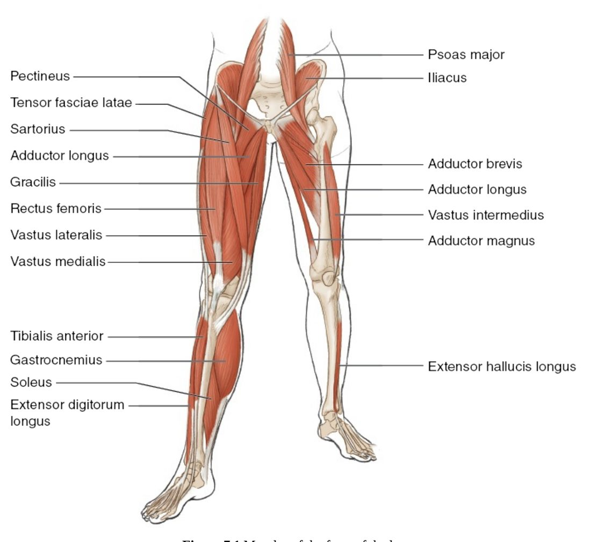
Các cơ mông chính bao gồm cơ mông lớn, cơ mông nhỡ và cơ mông nhỏ (hình 7.2, trang 120). Cơ mông lớn chịu trách nhiệm chính trong việc kéo dài (duỗi thẳng) chân, trong khi cơ mông nhỡ và cơ mông nhỏ phối hợp với nhau để giữ mức xương chậu khi bạn đi hoặc chạy trên chân không chịu trọng lượng. Các cơ gân kheo ở phía sau chân trên cho phép đầu gối uốn cong. Những cơ này bao gồm bắp tay xương đùi, cơ bán mạc và cơ bán gân. Các cơ bắp chân trên chính khác bao gồm cơ gracilis, giúp uốn cong chân, xoay hông vào giữa và thêm đùi; và cơ sartorius, một cơ dài giúp uốn cong đùi cũng như duỗi đầu gối.
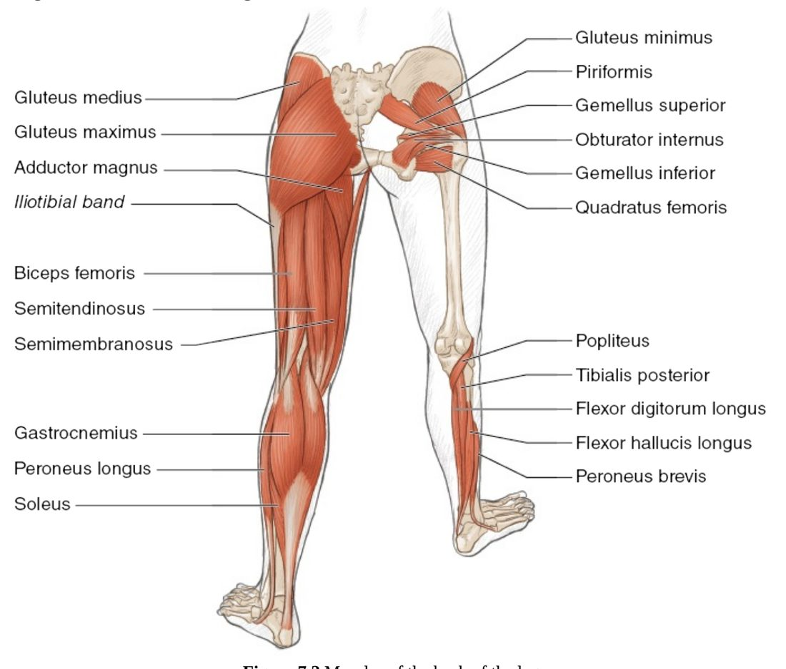
Ba nhóm cơ tạo nên cơ bắp chân. Ở phía sau của cẳng chân (hình 7.3a), cơ sinh đôi và cơ dép tạo thành cơ bắp chân. Chúng chịu trách nhiệm cho sự uốn cong của bàn chân, điều này cần thiết để có lực đẩy tốt khi chạy. Các cơ trước của cẳng chân (hình 7.3b) bao gồm cơ chày trước, cơ duỗi các ngón chân dài và cơ duỗi ảo giác dài. Các cơ này đều là cơ gấp mu bàn chân. Điều này có nghĩa là khi chúng co lại, chúng sẽ đưa các ngón chân lên về phía ống chân. Các cơ bên của cẳng chân nằm dọc theo xương mác, cơ nhỏ hơn trong hai cơ xương cẳng chân. Chúng bao gồm xương mác dài và xương mác ngắn. Mục tiêu chính của chúng là chống lại chuyển động đảo ngược (đế hướng vào trong). Nói cách khác, chúng giúp hỗ trợ mắt cá chân bằng cách ngăn ngừa bong gân mắt cá chân phổ biến nhất. Ngoài ra, chúng còn hỗ trợ việc gập và xoay lòng bàn chân (mặt đế hướng ra ngoài). Một cơ khác, cơ khoeo (xem hình 7.2 trang 120), rất quan trọng đối với người chơi quần vợt. Nó mở khóa khớp gối bằng cách xoay nhẹ để cho phép chân duỗi thẳng có thể uốn cong. Đây là một trong những cơ bắp chân sâu và nằm ở phía sau đầu gối. Mỗi cơ này đóng một vai trò quan trọng khi bạn chạy, dừng và đổi hướng.
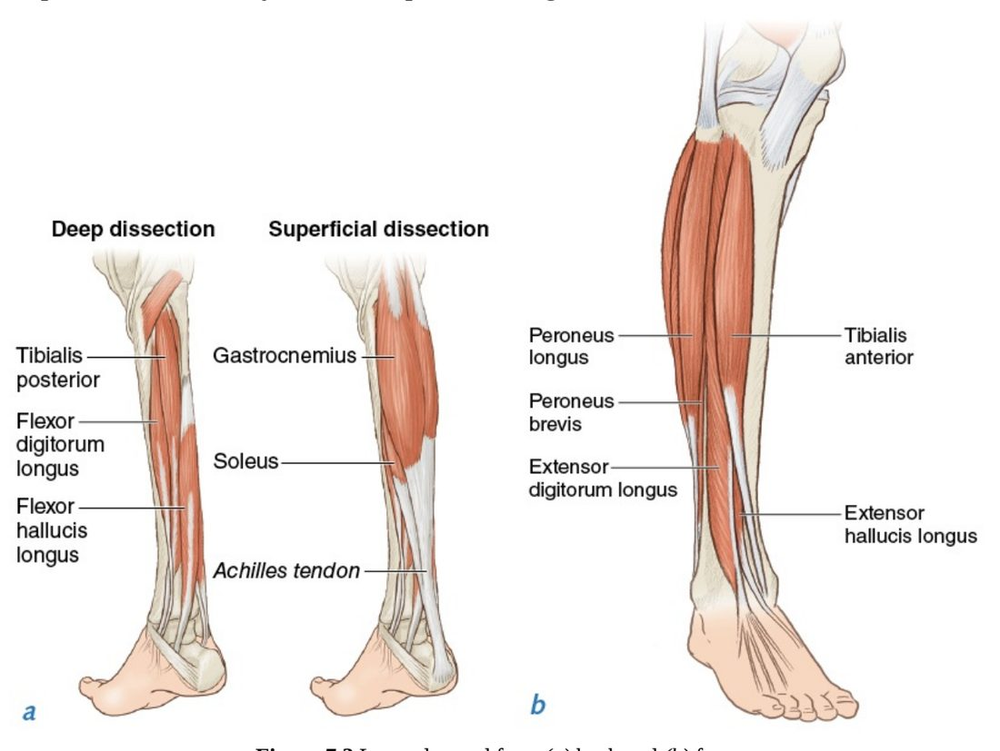
Cú Đánh Quần Vợt và Chuyển Động Chân
Để chơi tennis tốt, đôi chân phải tạo ra một chỗ dựa vững chắc và ổn định. Các cú đánh nền và đánh vô-lê đều bắt đầu bằng bước tách đôi, trong đó các cơ của chân hấp thụ chấn động khi chạm đất, thường theo sau là chuyển động bùng nổ theo hướng này hay hướng khác. Khi một đấu thủ bị kéo ra xa để thực hiện cú đánh, anh ta phải lùi về phía giữa sân. Nếu đôi chân của anh ấy được rèn luyện tốt và khỏe mạnh, anh ấy có thể hồi phục nhanh hơn và thường xuyên hơn mà không bị mỏi. Rõ ràng, sức mạnh bùng nổ từ đôi chân rất hữu ích, nhưng để có thể thực hiện được những động tác này, sức bền của cơ bắp cũng cực kỳ quan trọng. Chân cũng đóng vai trò quan trọng trong việc cho phép người chơi cúi xuống liên tục để thực hiện những cú đánh thấp. Những cú vô lê thấp, thường được đánh đôi, là một ví dụ điển hình về sự cần thiết của sức mạnh chân ở những tư thế này. Cú giao bóng là cú đánh duy nhất bắt đầu từ một vị trí đứng yên. Chân cung cấp lực đẩy thẳng đứng bằng cách uốn cong và duỗi ra một cách mạnh mẽ. Hành động này được lặp lại thường xuyên trong một trận đấu đơn vì người chơi giao bóng ở mọi trận đấu khác. Các bài tập được mô tả trong chương này cung cấp sức mạnh cơ bản bằng cách rèn luyện đôi chân khi chơi quần vợt.
Các Bài Tập Cho Đôi Chân
Nhảy hộp và nhảy sâu là những bài tập bài tập bật nhảy đàn hồi (plyometric) tuyệt vời tập trung vào phát triển sức mạnh, nhưng chúng là những bài tập nâng cao. Chỉ kết hợp chúng vào chương trình tập luyện của bạn sau khi bạn đã thiết lập được nền tảng sức mạnh phù hợp cho cơ chân. Quần vợt đòi hỏi phải chạy nhiều theo nhiều hướng trong quá trình chơi. Do đó, hãy thận trọng khi gây thêm căng thẳng bằng cách sử dụng các bài tập yêu cầu bạn phải tiếp đất trên bề mặt cứng. Bao gồm ít nhất một ngày phục hồi đầy đủ giữa các buổi tập chân. Số hiệp và số lần lặp lại cũng như lực cản được sử dụng có thể thay đổi đáng kể dựa trên nhiều yếu tố như thể lực và mức sức mạnh cơ bản, lịch thi đấu của bạn, điểm trong mùa giải và mục tiêu hiệu suất của bạn (ví dụ: sức mạnh, sức mạnh, độ bền). Hãy tham khảo ý kiến của chuyên gia am hiểu về sức mạnh và thể lực, người hiểu biết về quần vợt để tìm ra chương trình nào có thể phù hợp nhất với bạn. Người này cũng có thể đánh giá tư thế và kỹ thuật của bạn cho mỗi bài tập. Đặc biệt dễ dàng tập luyện quá sức cho đôi chân vì những cơ này đã hoạt động rất tích cực trong khi chơi.
Squat (Ngồi Xổm)
Lưu Ý An Toàn
Hãy đảm bảo đầu gối không bị cong và mỗi đầu gối thẳng hàng với ngón chân thứ hai của bàn chân ở cuối chuyển động
Cách Thực Hiện
- Đặt một thanh tạ phía sau đầu và ngang vai, phía trên cơ hình thang. Giữ thanh bằng tay ở độ rộng thoải mái
xa nhau, lòng bàn tay hướng về phía trước. Siết chặt hai bả vai của bạn lại với nhau. Giữ hai bàn chân rộng bằng vai, các ngón chân hướng thẳng về phía trước hoặc hơi hướng ra ngoài.
- Từ vị trí bắt đầu, từ từ uốn cong đầu gối và đẩy trọng lượng của bạn vào gót chân. Giữ lưng thẳng. Hạ thấp cơ thể cho đến khi đùi song song với sàn. 3. Duỗi đầu gối để trở về vị trí ban đầu.
Các Nhóm Cơ Tham Gia
Cơ mông lớn, cơ mông nhỡ, cơ rộng ngoài, cơ thẳng đùi, cơ rộng trong, cơ rộng trung gian
Cơ cơ mông, cơ thon, cơ khép dài, cơ khép ngắn, cơ khép magnus, cơ dựng cột sống, cơ nhiều cơ, cơ ngang bụng
Ứng Dụng Trong Quần Vợt
Các cơ tham gia vào động tác squat rất quan trọng trong mỗi cú đánh. Đây hầu hết là những cơ bắp to và khỏe giúp thực hiện các giai đoạn đẩy và hạ cánh khi chạy, thay đổi hướng cũng như giữ thăng bằng và ổn định ở tư thế sẵn sàng. Mỗi cú đánh quần vợt đòi hỏi một tư thế sẵn sàng tương tự như động tác squat. Vì cú giao bóng thường là cú đánh khó nhất nên nó đòi hỏi một nền tảng hỗ trợ vững chắc và ổn định. Các cơ được rèn luyện khi squat, cả cơ mông và cơ chân, tạo ra nền tảng ổn định và cho phép người chơi truyền lực từ mặt đất lên các cơ ở thân và vai
Biến Thể
Front Squat Một
Biến Thể
của squat thông thường là front squat. Đối với động tác squat phía trước, thanh tạ được đặt ngang qua cơ delta phía trước, khoanh tay và lòng bàn tay đặt ngang trên đầu thanh. Bài squat phía trước tập trung chủ yếu vào cơ tứ đầu
Điều quan trọng là giữ thẳng lưng để giúp bạn giữ thăng bằng. Thông thường, bạn muốn sử dụng tạ nhẹ hơn một chút cho bài squat phía trước.
Đùi Chết Romania
Cách Thực Hiện
- Đứng hai chân rộng bằng vai và đầu gối hơi cong (tư thế thể thao). Giữ một thanh tạ ở phía trước cơ thể, đặt cánh tay xuống trước đùi. Hai tay cách nhau khoảng ngang vai, lòng bàn tay hướng về phía cơ thể. 2. Từ từ hạ tạ xuống giữa cẳng chân bằng cách tựa vào hông. Cơ mông của bạn sẽ ngửa lên khi bạn duy trì độ nghiêng nhẹ của xương chậu về phía trước. 3. Nâng tạ trở lại bằng cách duỗi hông và thắt lưng cho đến khi bạn đứng thẳng, vai ngả ra sau.
Các Nhóm Cơ Tham Gia
Cơ bản: Cơ bắp tay đùi, cơ bán gân, cơ bán mạc, cơ mông lớn, cơ dựng cứng cột sống
Cơ bắp tay cánh tay, cơ lưng rộng, cơ cẳng tay Tập trung quần vợt Mặc dù bài tập này có lợi cho tất cả các cú đánh tennis, nhưng nó đặc biệt hữu ích để cải thiện các cú đánh nền thuận tay và trái tay. Rumani deadlift không chỉ giúp tăng cường cơ bắp ở lưng dưới và gân kheo mà còn cải thiện tính linh hoạt của chúng. Bài tập này đặc biệt hữu ích trong việc chuẩn bị cho những cú thuận tay và trái tay thấp cũng như những cú đánh nền đòi hỏi tầm với đáng kể. Romania deadlift có lợi ích kép là cải thiện hiệu suất và ngăn ngừa chấn thương cho cơ và các khớp xung quanh hông và đầu gối. Bài tập này phát triển sức mạnh lệch tâm ở cơ duỗi hông, cực kỳ quan trọng trong các động tác tiếp đất và đổi hướng trên sân
Kéo Cơ Gân Kheo
Cách Thực Hiện
- Nằm ngửa, đầu gối trái cong khoảng 45 độ và gót chân trái ấn xuống sàn sao cho ngón chân trái hướng lên trần nhà. Chân phải của bạn duỗi thẳng trên không, ngón chân phải hướng lên trần nhà. 2. Nâng hông và hạ lưng xuống khỏi sàn bằng cách dồn trọng lượng của bạn vào gót chân trái. Giữ vị trí này ở trên cùng trong hai giây, sau đó hạ xuống vị trí bắt đầu. 3. Sau khi thực hiện một hiệp với chân trái, đổi chân và lặp lại động tác bằng chân phải.
Các Nhóm Cơ Tham Gia
Cơ bản: Cơ nhị đầu đùi, cơ khoeo, cơ bán gân, cơ bán mạc, cơ mông lớn, cơ mông nhỡ
Cơ bụng, cơ dép
Ứng Dụng Trong Quần Vợt
Phát triển sức mạnh và sự ổn định của cơ gân kheo và cơ duỗi hông là rất quan trọng trong tất cả các động tác quần vợt đòi hỏi sự giảm tốc độ phần thân dưới. Việc dừng lại và đổi hướng thường xuyên xảy ra trong một trận đấu quần vợt. Sức mạnh gân kheo và phần mở rộng hông của bạn càng mạnh thì bạn càng có thể xử lý được nhiều lực hơn. Điều này cho phép bạn dừng nhanh hơn và đổi hướng nhanh hơn. Sức mạnh lệch tâm của gân kheo và cơ mông là cần thiết khi tiếp đất trong các cú đánh tiếp đất ở tư thế mở và đặc biệt là khi đánh những cú vô lê thấp đòi hỏi sự ổn định cao khi tiếp xúc. Những cú vô lê trái tay trong tư thế đóng là một ví dụ tuyệt vời về thời điểm cơ gân kheo và cơ mông được kích hoạt lệch tâm để thực hiện cú đánh thành công
Biến Thể
Bài tập Ball cơ gân kheo Buck Buck gân kheo có thể được điều chỉnh thông qua một loạt các tiến trình để làm cho chuyển động trở nên khó khăn hơn. Khi bạn có thể thực hiện động tác gập gân kheo trên sàn một cách thoải mái, hãy tiến bộ cho phù hợp bằng cách đặt gót chân lên các bề mặt khó khăn hơn, kém ổn định hơn. Ví dụ: đối với
Biến Thể
bóng tập, bàn chân đặt trên bóng tập và đầu gối cong khoảng 90 độ. Tiến bộ từ sàn nhà đến ghế dài, bóng BOSU, bóng tập thể dục, bóng thuốc, bóng tennis và cuối cùng là bóng gôn. Một vài
Biến Thể
cuối cùng trong quá trình tiến triển đang rất thách thức.
Bước Tiến Thẳng
Cách Thực Hiện
- Đứng hai chân rộng bằng vai. Mỗi tay cầm một quả tạ. Cánh tay duỗi thẳng sang hai bên, lòng bàn tay hướng về phía cơ thể. Giữ vai của bạn qua lại, đầu ngẩng cao và cơ thể ổn định. 2. Giữ tư thế thẳng đứng, bước một chân về phía trước, hấp thụ tải trọng của cơ thể và gập đầu gối trước 90 độ vào tư thế lao tới. Đùi song song với sàn. Đảm bảo đầu gối uốn cong không quá 90 độ. Hông và vai vẫn vuông vức. Chân đường đi càng thẳng càng tốt mà đầu gối sau không chạm sàn.
- Ngay lập tức đẩy chân trước ra và trở về vị trí ban đầu. Lặp lại, bước về phía trước bằng chân kia. Thay thế bên phải và bên trái.
Các Nhóm Cơ Tham Gia
Cơ mông lớn, cơ mông nhỡ, cơ thẳng đùi, cơ rộng trung gian, cơ rộng ngoài
Cơ thẳng bụng, cơ ngang bụng. Phổi
Ứng Dụng Trong Quần Vợt
đặc biệt dành riêng cho môn quần vợt đối với các cú vô lê. Mặc dù trọng tâm trong cú vô lê thường đặt vào tay nhưng đôi chân giúp người chơi ở đúng vị trí để phần thân trên có thể giữ thăng bằng cho cú đánh. Kiểu chuyển động của động tác lunge tuyến tính bắt chước vị trí của cơ thể đối với cả cú vô lê thuận tay và trái tay. Kỹ thuật phù hợp trong khi thực hiện động tác lao thẳng cũng sẽ giúp ích cho khía cạnh kỹ thuật của cú vô lê. Cả động tác lao thẳng và vô-lê đều yêu cầu khả năng giữ thăng bằng tốt, kiểm soát trọng tâm và tư thế thích hợp
Biến Thể
Lunge tuyến tính với bóng thuốc Lunge trong khi giữ một quả bóng thuốc phía sau đầu và cổ. Điều này làm thay đổi sự cân bằng một chút bằng cách nâng trọng tâm của bạn lên. Trong quần vợt, người chơi phải kiểm soát trọng tâm và giữ thăng bằng ở nhiều vị trí khác nhau.
Biến Thể
của bước nhảy tuyến tính này không chỉ tập trung vào sự cân bằng hợp lý của người chơi với trọng tâm được nâng lên mà còn yêu cầu người chơi phải tăng cường sức mạnh cốt lõi để có thể giữ được vị trí này. Cả hai lợi ích đều giúp người chơi thực hiện từng cú đánh một cách có kiểm soát hơn. Tập trung vào việc giữ đầu và ngực hướng lên
Bước Ngang
Cách Thực Hiện
- Đứng hai chân rộng bằng vai và mỗi tay cầm một quả tạ. Đặt tạ lên vai, khuỷu tay hướng về phía trước. 2. Giữ tư thế thẳng, dùng một chân bước sang một bên, hấp thụ tải trọng của cơ thể và gập đầu gối cho đến khi đùi gần như song song với sàn. Chân đường mòn sẽ hơi cong, các ngón chân hướng thẳng về phía trước. 3. Đẩy ra và trở về vị trí bắt đầu. Đổi chân và lặp lại động tác cho bên còn lại. Thay thế bên phải và bên trái.
Các Nhóm Cơ Tham Gia
Cơ khép dài, cơ khép ngắn, cơ mông nhỡ, cơ thon, cơ sartorius
Cơ thẳng bụng, cơ ngang abdominis, cơ dựng cột sống Tập trung quần vợt Về bản chất, động tác lunge bên là một
Biến Thể
của động tác lunge thông thường (tuyến tính). Tuy nhiên, trọng tâm của bước nhảy bên là bắt chước hoặc tái tạo kiểu chuyển động của một cú vô lê rộng. Trong một cú vô lê rộng, phần lớn trọng lượng cơ thể được phân bổ lên chân gần bóng tới nhất. Lunge bên tạo ra một chuyển động tương tự. Để tránh thêm căng thẳng cho các khớp, hãy thực hiện động tác lunge với bàn chân hướng về phía trước. Cả hai chất bắt cóc (lệch tâm) và chất dẫn điện (đồng tâm) sẽ rất tích cực trong quá trình di chuyển này. Những nhóm cơ này rất quan trọng trong giai đoạn phục hồi giữa các lần tiêm
Bước Xoay 45 Độ
Cách Thực Hiện
- Đứng hai chân rộng bằng vai và mỗi tay cầm một quả tạ. Cánh tay ở hai bên, lòng bàn tay hướng về phía cơ thể. 2. Giữ tư thế thẳng, dùng một chân bước một góc 45 độ, hấp thụ tải trọng của cơ thể và gập đầu gối cho đến khi đùi gần như song song với sàn. Chân đường mòn sẽ bị cong. 3. Đẩy ra và trở về vị trí bắt đầu. Đổi chân, bước một góc 45 độ với chân kia. Thay thế bên phải và bên trái.
Các Nhóm Cơ Tham Gia
Cơ thẳng đùi, cơ mông lớn, cơ rộng giữa
Cơ mông nhỡ, cơ ngang bụng
Ứng Dụng Trong Quần Vợt
Góc 45 độ của động tác lunge này gần giống nhất với kỹ thuật thích hợp của cú vô lê trong quần vợt. Ưu điểm của việc thực hiện cú lao ở góc 45 độ là nó dạy người chơi tập trung vào việc áp sát lưới ở một góc khi thực hiện cú vô lê. Điều này cho phép người chơi chuyển trọng lượng cơ thể về phía trước trong khi tiếp xúc. Giống như trong cú vô lê, động tác lunge này phải được thực hiện với kỹ thuật phù hợp. Tập trung vào việc uốn cong ở đầu gối, không phải lưng. Hông, đầu gối và mắt cá chân phải thẳng hàng để có sự cân bằng hợp lý
Bước Chéo
Cách Thực Hiện
- Đứng hai chân rộng bằng vai và mỗi tay cầm một quả tạ. Cánh tay ở hai bên, lòng bàn tay hướng về phía cơ thể. 2. Giữ tư thế thẳng đứng, bắt chéo chân này sang chân kia một góc 45 độ và lao tới, hấp thụ tải trọng của cơ thể và uốn cong đầu gối cho đến khi đùi gần như song song với sàn. Chân đường mòn sẽ bị cong. 3. Đẩy ra và trở về vị trí bắt đầu. Đổi chân, bước qua bằng chân còn lại. Thay thế bên phải và bên trái.
Các Nhóm Cơ Tham Gia
Chính: Cơ thẳng đùi, cơ mông lớn, cơ mông nhỡ, cơ mông nhỏ, cơ rộng trung gian
Cơ thẳng bụng, cơ ngang bụng
Ứng Dụng Trong Quần Vợt
Mặc dù trò chơi hiện đại thường có các cú đánh thường xuyên với thế đứng mở, đôi khi cần có thế đứng khép kín. Vì vậy, cơ thể phải được chuẩn bị kỹ lưỡng cho cơn cú đánh đặc biệt này. Cú nhảy chéo tương tự như cú đánh nền trong thế đóng. Cụ thể, nó gần giống nhất với chuyển động được sử dụng trong cú đánh trái tay bằng một tay. Khi thực hiện động tác nhảy đặc biệt này, hãy hướng các ngón chân sang hai bên khi bước ra sao cho hông, đầu gối và mắt cá chân vẫn thẳng hàng
Nhảy Lên Hộp
Cách Thực Hiện
- Bạn sẽ cần một chiếc hộp có kích thước từ 12 đến 42 inch (30 đến 107 cm), tùy thuộc vào khả năng của bạn. Đứng đối diện với hộp, cách hộp khoảng 1 đến 2 feet (0,3 đến,6 m), hai chân rộng bằng vai. 2. Nhảy lên hộp. Tập trung vào việc chạm xuống mặt trên của hộp một cách nhẹ nhàng nhất có thể và ngồi tựa lưng vào hông. Điều này phát triển cơ chế tiếp đất tốt và giảm tác động lên khớp gối. 3. Nhảy ra khỏi hộp, trở lại vị trí ban đầu. Tập trung vào việc hấp thụ cú sốc và hạ cánh nhẹ nhàng nhất có thể. Giữ ngực thẳng và
duy trì một tư thế vững chắc để hấp thụ lực sinh ra trong quá trình tiếp đất.
Các Nhóm Cơ Tham Gia
Cơ mông lớn, cơ mông nhỡ, cơ thẳng đùi, cơ rộng ngoài, cơ rộng trong, cơ rộng trung gian
Cơ nhị đầu đùi, cơ bán gân, cơ bán mạc
Ứng Dụng Trong Quần Vợt
Đây là một bài tập bài tập bật nhảy đàn hồi (plyometric) tuyệt vời. Trọng tâm là rèn luyện đôi chân cho các động tác bùng nổ, được yêu cầu khá thường xuyên trong suốt trận đấu, chẳng hạn như khi đổi hướng. Ngoài ra, việc rèn luyện đôi chân để có sức mạnh bùng nổ giúp phát triển cú giao bóng tennis tốt hơn. Chân đóng vai trò quan trọng trong việc truyền lực từ mặt đất lên phần còn lại của cơ thể. Đôi chân khỏe cũng cho phép gập và duỗi đầu gối thích hợp trong giai đoạn tải bóng
Biến Thể
Nhảy hộp một chân Một phiên bản nâng cao hơn của nhảy hộp, trong đó bạn nhảy bằng cả hai chân, là nhảy hộp một chân, trong đó bạn nhảy chỉ bằng một chân. Cú nhảy này đòi hỏi một lượng sức mạnh và sự phối hợp đáng kể và là một bài tập có tính nâng cao cao. Nó chỉ được khuyến khích cho người chơi nâng cao. Chân đơn nhảy hộp có thể được thực hiện bằng một trong hai chân. Sử dụng hộp thấp hơn hộp dùng để nhảy hộp thông thường—hộp cao từ 4 đến 16 inch (10 đến 40 cm).
Nhảy Từ Trên Cao
Cách Thực Hiện
- Bạn sẽ cần hộp có kích thước từ 12 đến 24 inch (30 đến 60 cm), tùy thuộc vào kích thước của bạn.
khả năng. Đứng trên đầu hộp.
- Bước xuống khỏi hộp, tiếp đất bằng cả hai chân. Ngay sau khi hạ cánh, bật dậy. Cố gắng chạm đất trong thời gian ngắn nhất có thể. 3. Khi bật lên, bạn chỉ cần nhảy thẳng lên hoặc có thể nhảy lên đầu hộp khác để lặp lại trình tự.
Các Nhóm Cơ Tham Gia
Cơ bản: Cơ bụng thẳng, bắp tay đùi, cơ bán gân, cơ bán mạc, cơ sinh đôi, cơ dép
Cơ dựng cột sống, cơ mông lớn
Ứng Dụng Trong Quần Vợt
Nhảy sâu là một bài tập bài tập bật nhảy đàn hồi (plyometric) tuyệt vời khác để cải thiện cả sức mạnh và thành phần tốc độ của cơ chân. Nhảy sâu là một phương pháp tập luyện đặc biệt dành cho quần vợt. Kỹ năng di chuyển theo mọi hướng và sức mạnh cần thiết cho một cú giao bóng mạnh có thể được rèn luyện theo cách này. Nhảy sâu giúp người chơi rút ngắn thời gian trên mặt đất trong quá trình di chuyển trên sân tennis, cho phép người chơi di chuyển và đổi hướng nhanh chóng. Một lợi ích tuyệt vời khác của việc nhảy sâu là các cơ chân sử dụng trong quá trình giao bóng được huấn luyện rất đặc biệt
Biến Thể
Nhảy sâu vào nhảy vượt rào Sau khi hạ cánh từ bước nhảy sâu, tiếp tục nhảy qua một loạt chướng ngại vật nhỏ được thiết lập theo đường thẳng từ hộp. Tập trung vào việc giữ hông và vai vuông góc, đồng thời tiếp tục chạm đất trong thời gian ngắn nhất có thể.
Nhón Bắp Chân
Cách Thực Hiện
- Đứng hai chân rộng bằng vai và mỗi tay cầm một quả tạ. Cánh tay ở hai bên, lòng bàn tay hướng về phía cơ thể. 2. Hãy kiễng chân lên cao nhất có thể trong khi vẫn giữ thăng bằng tốt. Hoạt động chung duy nhất nên ở khớp mắt cá chân. 3. Giữ trong một đến hai giây, sau đó từ từ hạ xuống vị trí bắt đầu.
Các Nhóm Cơ Tham Gia
Cơ bản: Cơ bụng, cơ dép
Ứng Dụng Trong Quần Vợt
Công việc của cơ bắp chân là uốn cong bàn chân. Chuyển động rất quan trọng này cho phép thực hiện động tác đẩy mạnh cần thiết để chạy và nhảy. Cụ thể, cơ sinh đôi, một cơ lớn với hầu hết các sợi thẳng đứng, cung cấp tác động đẩy này. Cơ bắp chân cho phép nâng gót chân lên bằng toàn bộ trọng lượng cơ thể. Vì vậy, chúng đóng vai trò quan trọng trong mỗi cú đánh tennis. Một ví dụ tuyệt vời về tầm quan trọng của cơ bắp chân có thể được nhìn thấy trong cú giao bóng. Trong giai đoạn tải trọng, khi lực từ mặt đất được truyền đến phần còn lại của cơ thể, cơ sinh đôi và cơ dép sẽ hoạt động. Vì hành động mạnh mẽ này, nhiều tay vợt đã thực sự mất thăng bằng khi giao bóng
Biến Thể
Nâng cao bắp chân Để làm cho bài tập này khó hơn, hãy tăng phạm vi chuyển động. Đứng trên một khối hoặc cạnh của máy sao cho gót chân thấp hơn lòng bàn chân. Đứng lên bằng ngón chân.
Tăng Cường Sức Mạnh Xoay
Trò chơi quần vợt hiện đại đã thay đổi đáng kể trong 30 năm qua. Các kỹ thuật luyện tập mới và đặc biệt là công nghệ vợt mới đã dẫn đến những thay đổi trong cách đánh bóng. Cụ thể, các cú đánh nền thuận tay và trái tay đã được hưởng lợi từ những thay đổi này. Các loại vợt mới được làm bằng các vật liệu khác nhau, thường là vật liệu composite thay vì gỗ hoặc kim loại và có đầu vợt lớn hơn. Điều này làm cho chúng cứng hơn, mạnh hơn, nhẹ hơn và dễ tha thứ hơn một chút khi đánh sai. Công nghệ này cho phép người chơi có những kiểu xoay có tính chất xoay hơn. Đồng bộ với sự phát triển của thiết bị này, các kỹ thuật tập luyện cả trong và ngoài sân đấu đã thay đổi, chú trọng hơn vào việc tăng cường sức mạnh của các nhóm cơ chịu trách nhiệm cho thành phần xoay của mỗi cú đánh.
Giải Phẫu Của Chuyển Động Xoay
Cần có một đế vững chắc để thực hiện các động tác xoay hiệu quả trong quần vợt. Vì vậy, việc tăng cường sức mạnh cho đôi chân, đặc biệt là thông qua các bài tập đa khớp, là rất quan trọng. Cơ mông lớn và cơ tứ đầu hấp thụ chấn động khi bạn tiếp đất hoặc đổi hướng. Chúng cũng giúp tạo ra hành động bùng nổ khi bạn đẩy người để chạy và tạo điểm tựa vững chắc khi bạn thực hiện cú đánh tiếp đất từ tư thế mở. Tương tự, cơ dạ dày và cơ dép ở cẳng chân phải khỏe trong những cú đánh này. Việc tăng cường phần cốt lõi hoặc phần giữa cũng cần được chú trọng nhiều. Các cơ xiên trong và ngoài rất quan trọng đối với chuyển động xoay trong các cú đánh quần vợt, nhưng các cơ ngang bụng, cơ multifidus, cơ cương cứng, xương chậu và cơ psoas lớn cũng cung cấp sức mạnh và sự cân bằng cơ bắp trong quá trình xoay. Bởi vì các cú đánh tennis ngày càng mạnh mẽ hơn nên việc nhấn mạnh vào cơ bắp của phần thân trên cũng trở nên cần thiết. Các cơ như cơ lưng rộng, cơ răng trước, cơ thang, cơ thoi và cơ nâng vai đều đóng vai trò quan trọng trong việc bảo vệ khớp vai và vùng xương bả vai trong mỗi cú đánh. Chúng phối hợp với nhau để giúp thực hiện cú swing thực tế cũng như mang lại sự ổn định.
Cú Đánh Quần Vợt và Chuyển Động Xoay
Quần vợt đòi hỏi các động tác đa khớp. Lực được truyền từ phần thân dưới lên phần thân trên thông qua một chuỗi các hoạt động của cơ. Trong trò chơi hiện đại, thành phần xoay của cú đánh đã trở nên quan trọng hơn. Các cú đánh nền đặc biệt có các cú đánh ở tư thế mở và bán mở hơn bao giờ hết. Những cú thuận tay và trái tay bằng hai tay thường được đánh với tốc độ xoay cực lớn. Vì vậy, đôi chân cần phải có một nền tảng vững chắc để chống lại. Các bài tập tăng cường sức mạnh cho đôi chân là rất quan trọng để chuẩn bị cho cơ thể những cú đánh mạnh. Phần thân và phần giữa cung cấp lực quay lớn nhất; do đó, cần phải có những bài tập rất cụ thể để chuẩn bị cho cơ thể. Bài tập càng dành riêng cho quần vợt thì càng tốt. Bạn muốn gây quá tải cho các cơ được sử dụng trong các cú đánh bằng cách sử dụng các kiểu chuyển động giống hoặc tương tự như các kiểu được sử dụng trong mỗi cú đánh. Mặc dù bạn nên cố gắng bắt chước kiểu chuyển động của các cú đánh, nhưng các cơ hoạt động lệch tâm sau các cú đánh cũng thường được huấn luyện theo cách đồng tâm, đặc biệt là ngay từ đầu trong chương trình tập luyện khi cần tập trung vào việc thiết lập mức sức mạnh cơ bản. Khi bạn khỏe hơn, hãy thêm thành phần luyện tập lập dị. Điều này sẽ duy trì sự cân bằng sức mạnh thích hợp giữa các kiểu chuyển động trước và sau, chẳng hạn như động tác vung vợt sau và động tác theo sau. Nếu sự mất cân bằng cơ trở nên quá lớn, nó có thể dẫn đến nguy cơ chấn thương cao hơn. Tập luyện cân bằng giúp bảo vệ khớp. Khái niệm này cũng áp dụng cho các cơ của phần trên cơ thể vì các động tác xoay mạnh đòi hỏi sức mạnh đáng kể ở vòng quay và vùng xương bả vai. Mặc dù chủ yếu được nhấn mạnh trong các cú đánh tiếp đất, nhưng chuyển động xoay đóng một vai trò quan trọng trong mỗi cú đánh. Các bài tập trong chương này rất quan trọng cho việc nâng cao hiệu suất và ngăn ngừa chấn thương.
Các Bài Tập Tăng Cường Sức Mạnh Xoay
Các bài tập sau đây giúp phát triển sức mạnh xoay có tính đặc thù cao đối với quần vợt. Chúng là những bài tập đa khớp, đa tầng liên quan đến toàn bộ cơ thể. Nhiều trong số chúng bắt chước các kiểu nét thực tế. Ngoài việc phát triển sức mạnh, các bài tập này còn cải thiện tính linh hoạt vì hầu hết đều yêu cầu vận động đầy đủ. Tập trung vào kỹ thuật phù hợp trong từng kiểu chuyển động. Mỗi bài tập có thể được thực hiện với mức tạ nhiều hay ít tùy thuộc vào sức mạnh của bạn và tốc độ nhiều hay ít tùy thuộc vào mục tiêu tập luyện của bạn. Làm việc với một huấn luyện viên sức mạnh và thể lực có trình độ và kiến thức tốt về quần vợt khi thực hiện các bài tập này để đảm bảo bạn thực hiện chúng đúng cách. Bắt đầu với hai hoặc ba bộ từ 10 đến 12 lần lặp lại. Mức độ kháng lực được sử dụng, số lần lặp lại được thực hiện và số hiệp được thực hiện sẽ thay đổi dựa trên mục tiêu, điểm mạnh và điểm yếu của bạn, yêu cầu nghỉ ngơi và phục hồi cũng như lịch thi đấu trong một chương trình đào tạo định kỳ có cấu trúc.
Chém Xoay Với Cáp
Cách Thực Hiện
- Đặt máy ròng rọc cáp ở vị trí ban đầu cao (cao ngang vai hoặc cao hơn một chút). Đứng nghiêng bên trái của bạn cạnh máy. Siết chặt cơ thể và kéo vai về phía sau. 2. Nắm lấy tay cầm ròng rọc cáp bằng cả hai tay và kéo chéo cơ thể bằng hai tay thẳng từ cao xuống thấp, vai trái sang hông phải. Cô lập hành động trên cơ thể. Động tác này tăng cường sức mạnh các cơ liên quan đến giao bóng và thuận tay cho người chơi thuận tay trái. 3. Thực hiện các lần lặp lại thích hợp, sau đó lặp lại quy trình tương tự ở phía bên kia, di chuyển từ vai phải sang hông trái. Động tác này tăng cường các cơ liên quan đến cú trái tay cho người chơi thuận tay trái.
Các Nhóm Cơ Tham Gia
Cơ cơ lưng (chuyển động trái tay), cơ xiên trong, cơ xiên ngoài, cơ ngang bụng
Cơ răng trước, cơ dựng cột sống
Ứng Dụng Trong Quần Vợt
Vì môn quần vợt hiện đại chủ yếu là các cú giao bóng và thuận tay, nên việc rèn luyện các nhóm cơ có lợi cho thành công trong các cú đánh này là rất quan trọng. Đặc biệt, động tác chặt xoay cáp và nâng xoay cáp (trang 150) giúp rèn luyện các cơ hỗ trợ thực hiện động tác về phía trước của cả cú giao bóng và thuận tay khi thực hiện ở phía thuận của cơ thể. Các hoạt động đồng tâm (rút ngắn) để cung cấp lực cho cú vung về phía trước, trong khi các cơ phụ hoạt động lệch tâm (kéo dài) để giúp duy trì thăng bằng, mang lại sự ổn định và hỗ trợ cơ thể. Khi thực hiện ở bên không thuận của cơ thể, bài tập này bắt chước và mang lại lợi ích cho trái tay. Bản chất của bài tập đa khớp này cũng tương tự như đánh những cú thuận tay và trái tay cao
Biến Thể
Chặt cáp xoay với xoay hông Trong
Biến Thể
này, phần thân trên tuân theo kiểu chuyển động giống như trong bài tập chính, nhưng ngoài ra, hông xoay cùng lúc với phần thân trên. Chuyển động này mô phỏng chặt chẽ hơn chuyển động thực tế trong một cú đánh quần vợt và cho phép phạm vi chuyển động lớn hơn. Để có phiên bản cao cấp hơn của kìm xoay cáp, hãy sử dụng bật lửa kháng cự và chỉ có một tay.
Nâng Xoay Với Cáp
Cách Thực Hiện
- Đặt máy ròng rọc cáp ở vị trí ban đầu thấp (cao ngang hông hoặc thấp hơn một chút). Đứng nghiêng bên trái của bạn cạnh máy. Siết chặt cơ thể và kéo vai qua lại. 2. Nắm lấy tay cầm ròng rọc cáp bằng cả hai tay và kéo chéo cơ thể bằng hai tay thẳng từ thấp đến cao, hông trái đến vai phải. Cô lập hành động trên cơ thể. Động tác này tăng cường các cơ liên quan đến cú trái tay cho người chơi thuận tay phải. 3. Thực hiện số lần lặp lại thích hợp, sau đó lặp lại quy trình tương tự ở phía bên kia, di chuyển từ hông phải sang vai trái. Động tác này tăng cường các cơ liên quan đến giao bóng và thuận tay cho người chơi thuận tay phải.
Các Nhóm Cơ Tham Gia
Cơ bản: cơ lưng rộng (chuyển động trái tay), xiên trong, xiên ngoài, cơ ngang bụng
Cơ răng trước, cơ dựng cứng cột sống
Ứng Dụng Trong Quần Vợt
Động tác nâng xoay cáp và cắt cáp xoay (trang 148), khi thực hiện ở bên không thuận của cơ thể, sẽ liên quan đến các nhóm cơ giống nhau mà người chơi thuận tay phải sử dụng trong cú đánh trái tay. Cụ thể, trong mô hình chuyển động từ thấp đến cao, bài tập diễn ra theo một lộ trình tương tự như cú đánh trái tay topspin. Một lợi ích nữa của bài tập này là một số hoạt động đồng tâm trong cú đánh trái tay và bài tập này cũng hoạt động lệch tâm trong khi giao bóng và thuận tay. Tính chất đồng tâm của bài tập này giúp tăng cường sức mạnh cho các cơ này, từ đó bảo vệ chúng khỏi chấn thương bên cạnh việc cải thiện hiệu suất. Khi thực hiện ở phía thuận của cơ thể, động tác nâng xoay cáp sẽ có lợi cho các cơ mà người chơi thuận tay phải sử dụng trong cú đánh thuận tay
Biến Thể
Nâng xoay bằng cáp với xoay hông Phần thân trên tuân theo mô hình chuyển động tương tự như trong động tác nâng xoay bằng cáp, nhưng ngoài ra, hông xoay cùng lúc với phần thân trên. Chuyển động này mô phỏng chặt chẽ hơn các cơ thực tế liên quan đến cú đánh quần vợt và cho phép phạm vi chuyển động lớn hơn.
Giật Tạ Đơn Xoay Một Tay
Cách Thực Hiện
- Nếu bạn là người thuận tay phải, hãy đứng với một quả tạ ở tay phải. (Người chơi thuận tay trái cầm một quả tạ ở tay trái.) Giữ tay phải theo đường chéo trên cơ thể, hơi hướng ra ngoài đầu gối trái. Duy trì cơ lõi chặt chẽ và ổn định, đồng thời hơi uốn cong đầu gối, hai chân rộng bằng vai. 2. Nhanh chóng di chuyển quả tạ theo đường chéo từ đầu gối trái hoặc hông sang tư thế trên cao về bên phải đầu, kết thúc bằng cánh tay duỗi thẳng bên cạnh đầu. Giữ khuỷu tay thẳng. 3. Thực hiện số lần lặp lại thích hợp, sau đó lặp lại với cánh tay đối diện để phối hợp và cân bằng cơ bắp.
Các Nhóm Cơ Tham Gia
Cơ bản: Cơ mông lớn, bắp tay đùi, cơ bán gân, cơ bán mạc, cơ chậu, cơ psoas lớn, cơ ngang bụng, cơ xiên trong, cơ chéo ngoài
Cơ dựng cột sống, cơ đa cơ Trọng tâm quần vợt
Bài tập đặc biệt này liên quan đến các nhóm cơ tương tự được sử dụng trong cú đánh trái tay. Cụ thể, trong mô hình chuyển động từ thấp đến cao, bài tập đi theo đường đi tương tự như cú đánh trái tay topspin. Một lợi ích nữa của bài tập này là một số hoạt động đồng tâm trong cú đánh trái tay và bài tập này cũng hoạt động lệch tâm trong khi giao bóng và thuận tay. Tính chất đồng tâm của các bài tập này giúp tăng cường sức mạnh cho các cơ này, từ đó bảo vệ chúng khỏi chấn thương và cải thiện hiệu suất. Vì đây là bài tập tạ tự do nên các cơ ổn định bổ sung được phát huy tác dụng để giữ thăng bằng cho cơ thể. Các cơ ổn định này cũng hoạt động trong cú đánh trái tay. Khi được thực hiện chính xác, bài tập bùng nổ này tập trung vào phần thân dưới và phần lõi giúp phát triển sức mạnh có thể truyền trực tiếp đến tất cả các cú đánh quần vợt
Biến Thể
Giật tạ xoay một tay với xoay hông Vị trí bắt đầu giống như đối với động tác giật tạ xoay một tay. Phần thân trên tuân theo kiểu chuyển động tương tự như trong động tác giật tạ xoay bằng một tay, nhưng ngoài ra, hông xoay cùng lúc với quả tạ. Do chuyển động mạnh nên bàn chân có thể bị trật ra mặt đất. Chuyển động này mô phỏng chặt chẽ hơn chuyển động thực tế liên quan đến cú đánh quần vợt và cho phép phạm vi chuyển động lớn hơn.
Nhún Vai Với Tạ Đơn
Cách Thực Hiện
- Đứng hai chân rộng bằng vai. Thắt lưng hơi nghiêng về phía trước, giữ vai về phía sau, giữ chặt cơ thể và ổn định, đầu thư giãn và mắt nhìn về phía trước. Mỗi tay cầm một quả tạ tương đối nhẹ ở phía trước cơ thể, hai tay buông thẳng xuống. Quả tạ chỉ cao hơn đầu gối. Đầu gối được uốn cong trong tư thế thể thao. 2. Nhảy lên một cách bùng nổ bằng cách duỗi thẳng mắt cá chân, đầu gối và hông. Nhảy cao nhất có thể đồng thời nhún vai.
- Tiếp đất nhẹ nhàng, hai chân rộng bằng vai. Hơi cong đầu gối để tránh tải quá nhiều ở đầu gối, hông và lưng dưới.
Các Nhóm Cơ Tham Gia
Cơ mông lớn, cơ thẳng đùi, chậu chậu, cơ psoas lớn, cơ sinh đôi, cơ dép
Cơ thang, cơ nâng xương bả vai, bắp tay đùi, cơ bán gân, cơ bán mạc Tập trung quần vợt Đây là một bài tập tuyệt vời để tăng cường các cơ sử dụng trong giao bóng và chi trên. Mặc dù thân cây di chuyển theo tư thế gấp và duỗi, bài tập này sử dụng các cơ giống nhau để cung cấp sự ổn định và xoay chính. Việc gấp và duỗi đầu gối bắt chước thành phần bùng nổ của động tác đẩy chân lên trên khi bạn giao bóng hoặc đánh một cú đánh qua đầu. Làm cơ thể quá tải bằng cách sử dụng tạ giúp tăng cường sức mạnh cho đôi chân để tạo ra một hành động mạnh mẽ và cũng hỗ trợ sức bền của cơ bắp. Vì bài tập này tập trung vào việc phát triển sức mạnh nên hãy sử dụng mức tạ tương đối nhẹ, khoảng 30 đến 50% mức tạ tối đa trong một lần lặp lại của bạn (1RM) (xem chương 1, trang 19)
Biến Thể
Nhún tạ đòn Sử dụng tạ đòn thay vì tạ đơn. Sử dụng thanh tạ có thể dễ dàng hơn vì tạ đơn cần sự ổn định toàn bộ cơ thể hơn trong quá trình tập luyện để bạn có thể kiểm soát chúng trong khi nhảy.
Squat Trên Đầu
Cách Thực Hiện
- Nhấn một thanh tạ nhẹ từ vị trí phía sau hoặc phía trước đầu đến vị trí trên cao. Cánh tay phải tạo thành một góc 45 độ với thanh đòn và hai chân phải rộng khoảng bằng vai. Thắt chặt lõi của bạn và giữ cho nó ổn định. Siết chặt hai bả vai của bạn lại với nhau. 2. Trong một chuyển động chậm, có kiểm soát, hãy uốn cong đầu gối sao cho hai chân trên song song với sàn hoặc sâu hơn nếu độ linh hoạt của bạn cho phép và bạn có thể duy trì tư thế tốt. Đảm bảo đầu gối thẳng hàng phía sau ngón chân, lưng phẳng, ngực hướng ra ngoài và đầu hướng lên, mắt hướng về phía trước. 3. Dùng chân đẩy trở lại vị trí ban đầu trong khi thở ra. Tiếp tục hướng về phía trước.
Các Nhóm Cơ Tham Gia
Cơ mông lớn, cơ thẳng đùi, cơ thoi lớn, cơ thoi nhỏ, cơ delta sau, cơ bụng, cơ dép
Cơ ngang bụng, cơ dựng cơ cột sống Tập trung quần vợt Đây là một bài tập toàn thân tuyệt vời đòi hỏi sự cân bằng và ổn định ở phần giữa, sức mạnh ở cánh tay và vai, sức mạnh và sức mạnh ở chân. Đây cũng là một bài tập rất tốt để cải thiện tính linh hoạt ở hông, lưng dưới, lưng trên và vai. Bài tập này đặc biệt có lợi cho việc cải thiện cú giao bóng. Chuyển động gấp và duỗi đầu gối bắt chước động tác giao bóng, đồng thời gây quá tải cho các cơ. Thân mình phải mang lại sự ổn định trong quá trình thực hiện động tác này, đồng thời khả năng giữ đẳng cự cần thiết để duy trì thanh tạ phía trên đầu giúp tăng cường cơ bắp ở vai
Ném Bóng Y Tế Thuận Tay
Cách Thực Hiện
- Đứng cầm quả bóng nặng từ 4 đến 6 pound (2 đến 3 kg) bằng cả hai tay. Đối mặt với đối tác hoặc bức tường cách đó khoảng 10 feet (3 m). 2. Tiến một bước về phía trước để cơ thể ở tư thế quay mặt sang một bên và ném quả bóng thuốc về phía đối tác hoặc vào tường, mô phỏng cú đánh thuận tay trong tư thế vuông góc. 3. Lặp lại trong 30 giây.
Các Nhóm Cơ Tham Gia
Cơ răng trước, cơ xiên trong, cơ xiên ngoài, cơ ngang bụng, cơ mông lớn
Cơ cơ lưng, cơ dựng cột sống
Ứng Dụng Trong Quần Vợt
Việc sử dụng bóng thuốc giúp rèn luyện sức mạnh rất cụ thể cho các cú đánh thực tế, trong trường hợp này là cú đánh thuận tay. Các cơ tương tự được kích hoạt trong cú đánh thuận tay cũng được kích hoạt trong quá trình ném bóng thuốc thuận tay. Quá trình tập luyện này sẽ giúp tạo ra một cú đánh bùng nổ đồng thời tăng cường sức bền cơ bắp. Cụ thể, các cơ xoay của hông và cơ lõi—cơ mông lớn, cơ xiên, cơ ngang bụng và cơ răng trước—được phát triển thông qua chuyển động bài tập bật nhảy đàn hồi (plyometric) (chu kỳ kéo dãn-rút ngắn). Chúng tôi khuyên bạn nên thực hiện chuyển động này với cả tư thế đóng và mở (xem biến thể) để có kết quả tốt nhất
Biến Thể
Tung bóng thuận tay với tư thế mở Thay vì bước về phía trước bằng chân trái (đối với người chơi thuận tay phải), hãy giữ nguyên vị trí ban đầu và hoàn thành cú ném từ tư thế hướng mặt về phía trước. Đây là một bài tập nâng cao hơn. Bởi vì chân và chuyển trọng lượng về phía trước không góp phần vào chuyển động, nên
Biến Thể
này gây nhiều căng thẳng hơn cho các cơ cốt lõi
Ném Bóng Y Tế Trái Tay
Cách Thực Hiện
- Đứng cầm quả bóng thuốc nặng 4 đến 6 pound (2 đến 3 kg) bằng cả hai tay. Đối mặt với đối tác hoặc bức tường cách đó khoảng 10 feet (3 m). 2. Tiến lên một bước để cơ thể ở tư thế quay mặt sang một bên và ném quả bóng thuốc, mô phỏng cú đánh trái tay. 3. Lặp lại trong 30 giây.
Các Nhóm Cơ Tham Gia
Cơ bản: cơ cơ lưng, cơ xiên trong, cơ xiên ngoài, cơ ngang bụng, cơ mông lớn
Cơ răng trước, cơ dựng cột sống
Ứng Dụng Trong Quần Vợt
Kỹ thuật ném bóng y học trái tay gần giống với cú đánh quần vợt trái tay, đặc biệt là trái tay bằng hai tay và sử dụng các nhóm cơ giống nhau. Việc sử dụng bóng thuốc làm tăng hoạt động cơ của thân cây, không chỉ bằng cách tăng thêm lực cản mà còn khiến người chơi tập trung vào sự ổn định và cân bằng, những yếu tố then chốt của một cú đánh trái tay thành công. Trò ném bóng thuốc sử dụng các cơ của phần trên và phần dưới cơ thể đồng thời tập trung vào phần giữa. Chuyển động này giúp phát triển sức mạnh bùng nổ cũng như sự ổn định thông qua các cơ cốt lõi, điều này mang lại nhiều sức mạnh hơn cho những cú đánh nền của bạn
Biến Thể
Tung bóng trái tay với tư thế mở Thay vì bước về phía trước bằng chân phải (đối với người chơi thuận tay phải), hãy giữ nguyên vị trí ban đầu và hoàn thành cú ném từ tư thế hướng mặt về phía trước. Đây là một bài tập nâng cao hơn. Nó gây nhiều căng thẳng hơn cho các cơ ở phần giữa vì chân và chuyển trọng lượng về phía trước không góp phần vào chuyển động.
Ném Bóng Y Tế Kiểu Giao Bóng
Cách Thực Hiện
- Đứng cầm một quả bóng thuốc nặng 4 đến 6 pound (2 đến 3 kg) trên đầu bằng cả hai tay. Bàn chân của bạn rộng bằng vai và cơ thể bạn chắc chắn và ổn định. Đối mặt với đối tác hoặc bức tường cách đó khoảng 10 feet (3 m). 2. Ném quả bóng thuốc từ vị trí trên cao. 3. Lặp lại trong 30 giây.
Các Nhóm Cơ Tham Gia
Chính: cơ lưng rộng, cơ tam đầu brachii
cơ ngang bụng, serratus anterior, cơ dựng sống, cơ mông lớn
Ứng Dụng Trong Quần Vợt
Đây là một bài tập toàn thân tuyệt vời với sự nhấn mạnh vào phần cốt lõi. Mặc dù vậy, bài tập này huy động các cơ từ phần thân dưới, tạo ra lực phản ứng mặt đất di chuyển lên qua chuỗi động năng thông qua các cơ cốt lõi và cuối cùng được giải phóng qua chi trên khi quả bóng thuốc được thả ra. Bởi vì cú giao bóng được cho là cú đánh quan trọng nhất trong quần vợt nên các cơ tham gia vào bài tập này cực kỳ quan trọng trong một chương trình tập luyện toàn diện
Biến Thể
Ném bóng thuốc với tư thế mở Thay vì giữ hai chân rộng bằng vai và tiếp đất, bạn có thể thực hiện bài tập này với một bước tiến về phía trước. Bước bằng chân giao bóng phía trước (chân trái đối với người chơi thuận tay phải) để bắt chước chuyển động giao bóng nhiều hơn và phát triển kỹ năng giao bóng.
khả năng truyền lực từ chân sau sang chân trước. Điều này cũng làm tăng thêm sự phức tạp của mô hình chuyển động.
Phần II — Di Chuyển, Xoay Người và Phòng Ngừa Chấn Thương
Tăng cường sức mạnh xoay, các bài tập di chuyển trên sân và chiến lược phòng ngừa chấn thương toàn diện.
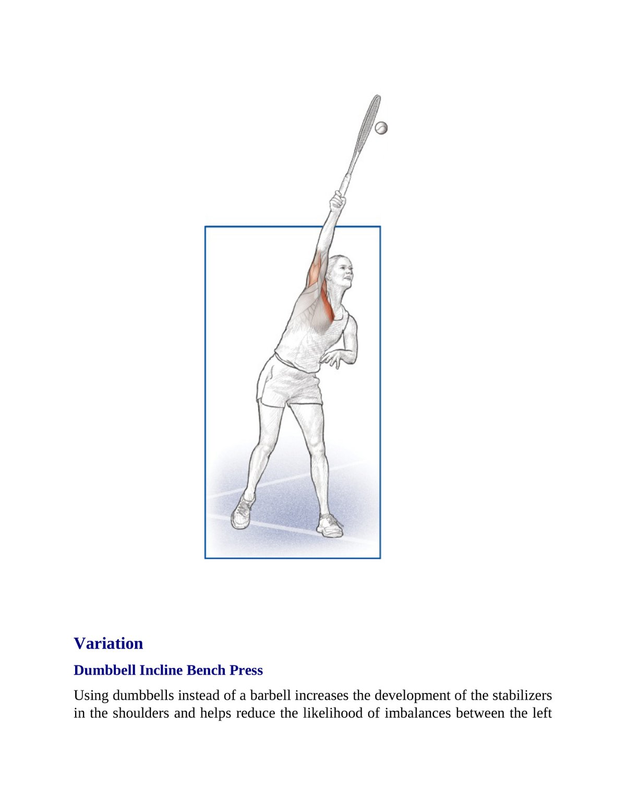
Bài Tập Di Chuyển
Như tất cả những người chơi quần vợt giỏi đều biết, bạn có thể đánh bóng tốt đến đâu cũng không thành vấn đề nếu bạn không thể chạm được vào nó. Kỹ năng di chuyển phù hợp là cực kỳ quan trọng để thành công trên sân tennis. Quần vợt đòi hỏi phải di chuyển theo mọi hướng. Bạn có thể phải chạy nhanh về phía trước để thực hiện cú đánh thả bóng, lùi lại để thực hiện cú đánh qua đầu hoặc di chuyển từ bên này sang bên kia để đạt được các cú đánh thuận tay và trái tay rộng. Thành công trong quần vợt phụ thuộc vào khả năng thực hiện các chuyển động ngắn theo nhiều hướng trong một khoảng thời gian dài. Tất cả điều này phải được thực hiện đồng thời duy trì sự cân bằng và kiểm soát cơ thể cũng như chuẩn bị cho cú đánh của bạn. Các bài tập chuyển động được mô tả trong chương này cung cấp các kiểu chuyển động dành riêng cho quần vợt ở dạng bài tập.
Giải Phẫu Di Chuyển
Trước bất kỳ cú đánh tennis nào ngoại trừ cú giao bóng, bạn cần phải ở tư thế thể lực tốt (hình 9.1, trang 166). Vị trí này giúp bạn giữ thăng bằng và cho phép bạn di chuyển nhanh chóng theo bất kỳ hướng nào. Trong tư thế thể thao, bạn sẽ ở tư thế kiễng chân, đầu gối và hông hơi cong và vợt hướng ra phía trước cơ thể, khuỷu tay cong nhưng thả lỏng. Tư thế thể thao giúp các cơ của bạn luôn trong tình trạng cảnh giác để bạn có thể nhanh chóng di chuyển đến vị trí đánh quả bóng tiếp theo.
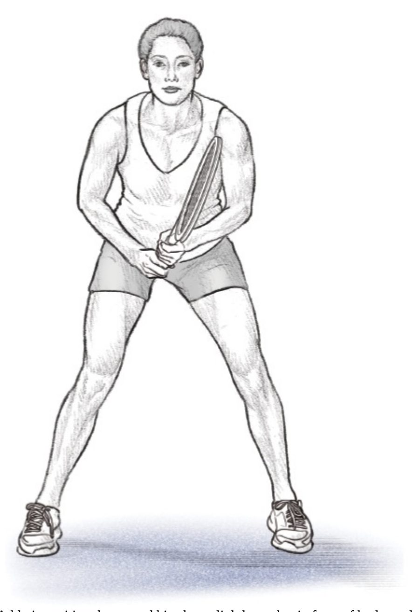
Bước tách đôi sẽ giúp bạn chuẩn bị cho một vị trí thể thao. Thực hiện bước tách bước trước mỗi cú đánh trong một lượt đánh. Bước tách đôi giống như kỹ thuật giảm trọng lượng mà người trượt tuyết sử dụng khi rẽ. Khi bạn nhanh chóng uốn cong đầu gối, bạn sẽ giảm trọng lượng khỏi bàn chân trong tích tắc. Khi tiếp đất, bạn có thể tăng lực tác động lên mặt đất, cho phép bạn đẩy người theo bất kỳ hướng nào. Nếu bạn mong đợi một quả bóng rộng, thông thường bạn sẽ muốn xoay chân một chút sử dụng động tác xoay hông bên ngoài theo hướng bóng khi bạn vẫn ở trên không. Ngón chân của bạn sẽ chỉ về hướng bạn muốn đi. Điều này sẽ giúp bạn di chuyển theo chiều ngang. Trọng tâm chính của chuyển động theo mọi hướng là ở phần cơ dưới của cơ thể, đặc biệt nhấn mạnh vào cơ mông lớn, cơ mông nhỡ, cơ tứ đầu, cơ bụng và cơ dép. Các chuyển động theo chiều ngang và đường chéo đòi hỏi phải huy động nhiều hơn cả cơ dạng và cơ dẫn như những người đóng góp chính bên cạnh các cơ nói trên.
Cú Đánh Quần Vợt và Di Chuyển
Vào một tư thế thể thao thích hợp giúp bạn giữ thăng bằng và tư thế, đồng thời cho phép bạn co các cơ phù hợp để có thể di chuyển theo bất kỳ hướng nào. Vì tư thế thể thao là cần thiết để chuẩn bị cho từng cú đánh quần vợt trong một cuộc giao tranh, nên trọng tâm chính là giữ trọng tâm giữa hai bàn chân, cơ sở hỗ trợ. Khái niệm giảm trọng lượng có thể giúp ích rất nhiều trong việc thực hiện các kỹ năng di chuyển trong quần vợt. Bằng cách giảm và tăng nhanh lực của bạn so với mặt đất, bạn có thể lấy lại thăng bằng và sau đó nổ tung ở phát bắn tiếp theo theo bất kỳ hướng nào một cách nhanh chóng và mạnh mẽ nếu cần thiết. Yếu tố quan trọng nhất là phải sẵn sàng di chuyển theo bất kỳ hướng nào. Nhìn chung, bạn có thể phải chạy vài dặm trong suốt trận đấu, nhưng khả năng chạy nước rút, dừng lại, xuất phát và đổi hướng ít nhất cũng quan trọng không kém. Ngoài ra, khi tiến bộ hơn, bạn sẽ học cách nhận biết các kiểu cụ thể cũng như vị trí mà đối thủ của bạn có nhiều khả năng thực hiện cú đánh tiếp theo nhất. Điều này được gọi là dự đoán. Khả năng dự đoán và phản ứng nhanh với một tình huống cụ thể trên sân sẽ giúp bạn sớm vào vị trí cho cú đánh tiếp theo, cho phép bạn thực hiện cú đánh cân bằng và mạnh mẽ hơn.
Hướng Dẫn Tập Các Bài Di Chuyển
Khả năng di chuyển tốt trên sân là một yếu tố quan trọng để thành công trong môn quần vợt. Nếu bạn không thể đến đó, bạn không thể đánh bóng. Điều này đơn giản hóa trò chơi quá mức, nhưng có rất nhiều sự thật trong đó. Chúng tôi khuyên bạn nên rèn luyện kỹ năng vận động hàng ngày. Trên thực tế, nhiều bài tập trong chương này có thể được thực hiện khi cầm vợt trên tay và thậm chí có thể kết hợp với các buổi đánh trên sân của bạn. Cách tốt nhất để kết hợp các bài tập vận động là biến chúng thành một phần của mỗi buổi tập trên sân. Chúng có thể được thêm vào bất cứ lúc nào trong quá trình luyện tập dựa trên nhu cầu cá nhân của bạn. Trong tất cả các bài tập chuyển động, hãy tập trung vào sự cân bằng phù hợp, thời gian phản hồi nhanh và phục hồi nhanh. Giữ đôi chân nhẹ nhàng và sử dụng kỹ thuật tốt. Nếu bạn dành riêng thời gian tập luyện cho các kỹ năng vận động, hãy cộng thêm 15 đến 30 phút để rèn luyện kỹ năng vận động.
rèn luyện tốc độ và sự nhanh nhẹn khi kết thúc buổi tập tennis để tập trung cải thiện kỹ năng vận động khi bạn mệt mỏi.
Bước Ngang Nhanh
Cách Thực Hiện
- Bắt đầu ở tư thế thể thao, hai chân rộng bằng vai, đầu gối hơi cong và mắt hướng về phía trước. Đứng ở điểm giữa vạch cuối sân với vợt ở tay thuận. 2. Trong khi duy trì trọng tâm ở mức thấp và cân bằng, hãy thực hiện năm lần xáo trộn sang trái. Để thực hiện động tác xáo trộn, hãy giữ tư thế thể thao khi bạn khép hai chân lại và di chuyển sang ngang mà không bắt chéo chân. 3. Sau năm lần di chuyển sang trái, đẩy chân trái bên ngoài ra và di chuyển trở lại điểm giữa vạch cuối sân. 4. Lặp lại chuyển động sang bên phải.
Các Nhóm Cơ Tham Gia
Cơ khép dài, cơ khép ngắn, cơ khép lớn, cơ thon, cơ mông nhỡ, dải chậu chày
cơ ngang bụng, cơ căng cân đùi, cơ mông lớn, cơ mông bé
Ứng Dụng Trong Quần Vợt
Chuyển động bên đóng góp tới 60 đến 80 phần trăm của tất cả các chuyển động trong quần vợt. Vì vậy, kiểu di chuyển này rất quan trọng để thành công trên sân. Chuyển động ngang là cách chính mà người chơi thực hiện được hầu hết các cú đánh nền, đặc biệt là các quả bóng trung tính trong các pha đánh bóng. Cơ dang và cơ khép cùng với cơ mông nhỡ giúp bạn duy trì trọng tâm thấp khi bạn di chuyển sang bên để vào vị trí thực hiện các cú đánh nền cân bằng
Biến Thể
Xáo trộn bên có trọng lượng Bạn có thể thực hiện kiểu chuyển động tương tự khi bạn giữ một quả bóng thuốc ở phía trước cơ thể ở độ cao ngang hông. Để thêm khó khăn, hãy mở rộng cánh tay. Một
Biến Thể
khác bao gồm mặc áo vest có trọng lượng khi bạn thực hiện động tác. Cái này tăng lực cần thiết để thực hiện kiểu chuyển động.
Bước Ngang Nhanh Có Bước Chéo
Cách Thực Hiện
- Bắt đầu ở tư thế thể thao, hai chân rộng bằng vai, đầu gối hơi cong và mắt nhìn về phía trước. Đứng ở điểm giữa vạch cuối sân với vợt ở tay thuận. 2. Đẩy chân phải ra và bước chân phải qua chân trái. Di chuyển sang trái bằng cách đẩy cả hai chân ra và di chuyển chân trái từ phía sau bàn chân phải và bước sang trái. Giữ đầu gối hơi cong và giữ vai về phía sau. 3. Lặp lại chuyển động sang phía bên phải của điểm trung tâm vạch cuối sân, đảm bảo rằng bước đầu tiên sau khi thay đổi hướng là bước chéo.
Các Nhóm Cơ Tham Gia
Cơ khép dài, cơ khép ngắn, cơ khép lớn, cơ thon, cơ mông nhỡ, dải chậu chày
Cơ ngang abdominis, cơ cơ căng cân đùi, cơ mông lớn,
cơ mông bé
Ứng Dụng Trong Quần Vợt
Chuyển động ngang là chuyển động phổ biến nhất dọc theo đường cuối sân trong một cuộc giao tranh. Thông thường, bước chéo là bước đầu tiên được thực hiện sau khi người chơi thay đổi hướng dọc theo vạch cuối sân. Điều quan trọng là phải lặp lại động tác này khi tập luyện với vợt trên tay. Chuyển động này thường xảy ra nhất khi người chơi có ít thời gian hạn chế và chủ yếu chơi các cú đánh trung tính. Cơ dang và cơ khép cùng với cơ mông nhỡ giúp duy trì trọng tâm thấp khi bạn di chuyển sang bên để vào vị trí thực hiện một cú đánh tiếp đất cân bằng. Tốc độ mà các tay vợt thu hồi bóng từ những quả bóng rộng thường tách biệt những tay vợt giỏi nhất với mức trung bình. Bước chuyển tiếp hoặc bước phục hồi nhanh hơn cho phép bạn trở lại vị trí thành công cho cú đánh tiếp theo
Biến Thể
Xáo trộn bên có trọng lượng với động tác chéo Bạn có thể thực hiện kiểu chuyển động tương tự trong khi giữ một quả bóng thuốc ở phía trước cơ thể ở độ cao ngang hông hoặc bạn có thể mặc áo vest có trọng lượng khi thực hiện động tác. Điều này làm tăng lực cần thiết để thực hiện chuyển động mẫu.
Hồi Vị Sau Cú Đánh Nền
Thực hiện thuận tay
- Bắt đầu ở tư thế thể thao ở điểm giữa vạch cuối sân, cầm vợt ở tay thuận. 2. Trong khi duy trì trọng tâm ở mức thấp và cân bằng, hãy xáo trộn sang phải trong năm lần xáo trộn và thực hiện toàn bộ cú đánh thuận tay. 3. Đẩy chân phải bên ngoài ra và đưa chân phải về phía trước chân trái của bạn để bắt đầu động tác phục hồi về sân giữa. Khi chân phải chạm vào bên trái cơ thể, tiếp tục quay trở lại vị trí bắt đầu. Lặp lại động tác, duy trì tư thế cũng như kỹ thuật đánh tốt.
Thực hiện trái tay
- Thực hiện động tác tương tự cho phía bên kia, thực hiện bằng cú trái tay.
Bắt đầu ở tư thế thể thao ở điểm giữa vạch cuối sân, cầm vợt ở tay thuận.
- Trong khi duy trì trọng tâm ở mức thấp và cân bằng, hãy xáo trộn sang trái trong 5 lần xáo trộn và thực hiện toàn bộ cú đánh trái tay. 3. Đẩy chân trái bên ngoài ra và đưa chân trái ra trước chân phải để bắt đầu động tác hồi phục về sân giữa. Khi chân trái chạm vào bên phải cơ thể, tiếp tục quay trở lại vị trí bắt đầu. Lặp lại động tác, duy trì tư thế cũng như kỹ thuật đánh tốt.
Các Nhóm Cơ Tham Gia
Chính: Vastus Lateralis, iliacus, psoas Major, cơ mông nhỡ, cơ mông bé, Adductor longus, Adductor brevis, Adductor magnus, gracilis, cơ căng cân đùi
Soleus, peroneus longus Tập trung quần vợt Trong bước phục hồi sau cú đánh, những tay vợt giỏi nhất tách mình ra khỏi phần còn lại trong bộ phận vận động. Khả năng đánh một cú đánh mạnh và sau đó phục hồi về vị trí sân hiệu quả để thực hiện cú đánh tiếp theo sẽ mang lại cho bạn lợi thế quyết định. Các cơ tham gia vào chuyển động này bao gồm các cơ dẫn, giúp đưa chân về phía cơ thể; cơ gấp hông; và các cơ xoay hông bên trong. Điều quan trọng là bạn phải duy trì trọng tâm thấp và lực đẩy của chân bên ngoài xuống đất thật mạnh
Biến Thể
Phục hồi đường chéo
Biến Thể
phục hồi đường chéo của bài tập này sẽ giúp bạn phát triển toàn diện phong trào quần vợt
Biến Thể
theo đường chéo—di chuyển theo đường chéo về phía trước và theo đường chéo về phía sau—mô phỏng việc di chuyển lên đối với bóng rộng ngắn và lùi về phía sau đối với bóng rộng sâu. Đối với hầu hết các chuyển động, bước phục hồi nhanh nhất là chuyển động chéo phía trước. Tuy nhiên, đối với bóng rộng ngắn, bạn có thể muốn sử dụng bước chéo về phía sau nếu mục tiêu của bạn là quay trở lại vạch cuối sân ở giữa
Bài Tập Con Nhện
Cách Thực Hiện
- Thông thường, bài tập này được tính thời gian cho tốc độ. Bắt đầu ở tư thế thể thao ở điểm giữa của vạch cuối sân. Bạn có thể thực hiện bài tập này khi có hoặc không có vợt trên tay. Chạy nước rút từ điểm giữa của đường cuối sân đến góc của đường cuối sân và đường biên đơn bên phải. Chạm vào góc bằng chân của bạn. Quay lại và chạm vào điểm trung tâm. 2. Chạy nước rút đến góc được tạo thành bởi đường biên đơn bên phải và đường giao bóng. Chạm vào góc bằng chân của bạn. Quay lại và chạm vào điểm trung tâm. 3. Chạy nước rút đến chữ T. Dùng chân chạm vào chữ T. Quay lại và chạm vào điểm trung tâm. 4. Chạy nước rút đến góc được tạo bởi đường đơn bên trái và đường giao bóng. Chạm vào góc bằng chân của bạn. Quay lại và chạm vào điểm trung tâm. 5. Chạy nước rút đến góc được tạo bởi đường cuối sân và đường biên đơn bên trái. Chạm vào góc bằng chân của bạn. Quay lại và chạm vào điểm trung tâm.
Các Nhóm Cơ Tham Gia
Cơ thẳng đùi, cơ rộng ngoài, cơ rộng trong, cơ rộng trung gian, bắp tay đùi, cơ bán gân, cơ bán mạc, cơ mông lớn, cơ mông nhỡ, cơ bụng, cơ dép
Cơ ngang bụng, cơ dựng cột sống, cơ đa cơ
Ứng Dụng Trong Quần Vợt
Trong tất cả các bài tập có thể thực hiện để cải thiện kỹ năng di chuyển, bài tập nhện có thể là bài tập cụ thể nhất về quần vợt. Nó kết hợp chuyển động theo mọi hướng và khoảng cách được bao phủ giống như khoảng cách xảy ra trong một trận đấu quần vợt thực tế. Tính chất dừng và bắt đầu của bài tập cũng mô phỏng các tình huống xảy ra trong một trận đấu quần vợt. Trong bài tập này, người chơi học cách giữ thăng bằng khi chạy nước rút từ trạm này sang trạm khác. Để làm cho nó trở nên cụ thể hơn về quần vợt, hãy thực hiện bài tập với vợt trên tay. Bạn cũng có thể kết hợp các chuyển động khác nhau như di chuyển sang ngang, xáo trộn hoặc lùi lại
Biến Thể
Máy khoan nhện nhặt bóng Thực hiện bài tập như mô tả, chỉ nhặt một quả bóng tennis ở mỗi trạm và đưa nó về điểm chính giữa trên vạch cuối sân. Ngoài ra, nếu bạn không được tính thời gian trong buổi diễn tập này, hãy mô phỏng việc đánh một cú khi bạn đến từng trạm. Đánh thuận tay ở bên phải và trái tay ở bên trái hoặc tập trung vào một cú đánh trong mỗi lần xoay.
Bước Tách
Cách Thực Hiện
- Bắt đầu ở tư thế thể thao, hai chân rộng bằng vai, đầu gối hơi cong và mắt nhìn về phía trước. Đứng ở điểm chính giữa của đường cuối sân với vợt ở tay thuận. 2. Nhảy lên nhưng không quá cao. Khi bắt đầu nhảy và trong khi đi xuống, hãy xoay hông theo hướng bạn định di chuyển. Đây là kỹ thuật không dùng tạ đơn giản, nhảy thẳng lên và xuống, với chân gần nhất với
bóng hơi xoay ra ngoài.
- Sau khi tiếp đất, hãy thực hiện ba hoặc bốn bước về phía vị trí cuối cùng mà bạn dự định. Lặp lại mô hình chuyển động này sang phía bên kia.
Các Nhóm Cơ Tham Gia
Cơ thẳng đùi, cơ rộng ngoài, cơ rộng trong, cơ rộng trung gian, cơ bắp tay đùi, cơ bán gân, cơ bán mạc, cơ mông lớn, cơ mông nhỡ, cơ sartorius
Cơ ngang abdominis, cơ chậu chậu, cơ psoas chính, cơ thẳng bụng trực tràng
Ứng Dụng Trong Quần Vợt
Bước tách đôi là kỹ năng di chuyển quan trọng nhất trong quần vợt. Nó được yêu cầu trước mỗi cú đánh quần vợt ngoại trừ cú giao bóng. Thời điểm của bước tách bóng rất quan trọng để giúp bạn có được vị trí thuận lợi cho cú đánh tiếp theo. Trong bước tách người, cơ duỗi hông co đồng tâm để nâng bạn lên khỏi mặt đất, cơ xoay hông bên ngoài xoay hông và chân của bạn theo hướng bạn muốn di chuyển khi tiếp đất và cơ gấp hông hoạt động lệch tâm trong quá trình tiếp đất để hấp thụ lực, giảm sốc cho các khớp
Biến Thể
Bước tách có kích thích Là một chuyển động, bước tách không quá phức tạp nhưng nó trở nên phức tạp hơn khi các kích thích khác nhau được thêm vào. Khi bạn cần đáp trả cú đánh của đối thủ, thời điểm thực hiện bước tách bóng là rất quan trọng. Thông thường, bước tách bóng được bắt đầu khi đối thủ bắt đầu vung vợt về phía trước. Để cải thiện thời gian thực hiện bước tách bóng của bạn, hãy yêu cầu huấn luyện viên hoặc đối tác thả bóng để bạn phản ứng hoặc đưa bóng cho bạn để bạn có thể đánh các cú đánh trong quá trình tập luyện.
Bước Đi Quái Vật
Cách Thực Hiện
- Đặt một dải kháng mỏng quanh bắp chân của bạn và tạo tư thế thể thao với hai chân rộng bằng vai, đầu gối hơi cong và mắt
về phía trước. Cầm vợt bằng tay thuận. Hạ thấp vị trí bắt đầu sao cho đùi song song với mặt đất và đầu gối cong khoảng 90 độ.
- Trong khi giữ thân trên thẳng và góc đầu gối khoảng 90 độ, hãy bước một bước nhỏ với chân phải sang phải, sau đó là một bước nhỏ với chân trái sang phải để trở về vị trí cơ thể ban đầu. 3. Lặp lại chuyển động này sang bên phải trong 5 đến 10 bước, sau đó thực hiện chuyển động tương tự ở bên trái trong 5 đến 10 bước.
Các Nhóm Cơ Tham Gia
Chính: cơ mông nhỡ, cơ mông bé, cơ căng cân đùi
cơ mông lớn, iliacus, psoas Major, cơ ngang bụng, cơ dựng sống Tập trung quần vợt Bởi vì chuyển động sang bên là một thành phần quan trọng của quần vợt, việc phát triển sức mạnh và sự ổn định ở các cơ nhỏ hơn không chỉ cải thiện khả năng di chuyển tốt của bạn mà còn giúp giảm nguy cơ chấn thương ở hông, đùi và lõi. Ngoài ra, nhiều cú đánh và chuyển động quần vợt được thực hiện khi người chơi đứng bằng một chân, điều này đòi hỏi sự ổn định cao ở một chân để truyền lực vào cú đánh hoặc chuyển động. Monster walk là một trong những bài tập tốt nhất để cải thiện độ ổn định của một chân, đặc biệt là ở cơ mông nhỡ, một trong những cơ ổn định hông quan trọng nhất. Hầu hết những người chơi gặp khó khăn trong việc đánh những cú đánh hiệu quả khi bị kéo dài hoặc kéo dài thường yếu ở cơ mông trung
Biến Thể
Bước đi quái vật chéo Thực hiện bước đi quái vật, nhưng di chuyển theo hướng chéo thay vì hướng ngang. Bước về phía trước một góc khoảng 45 độ. Hướng chéo tăng thêm khoảng cách lớn hơn giữa các bước, giúp kích hoạt các cơ liên quan đến chuyển động thường thấy trong các cú đánh nền nửa mở và các cú vô lê thấp.
Các Chấn Thương Quần Vợt Thường Gặp
Người chơi quần vợt ở mọi cấp độ đều mong muốn cải thiện thành tích của mình trên sân. Tuy nhiên, điều quan trọng không kém là việc ngăn ngừa thương tích. Trên thực tế, tập luyện để nâng cao thành tích và ngăn ngừa chấn thương thường đi đôi với nhau. Mặc dù thường tương đối nhỏ nhưng chấn thương vẫn có thể xảy ra trong quần vợt. Chấn thương có thể cấp tính, chẳng hạn như bong gân mắt cá chân, hoặc mãn tính, chẳng hạn như đau vai dai dẳng. Trong cả hai trường hợp, bạn có thể làm được nhiều việc để ngăn ngừa chấn thương bằng cách thiết kế và tuân theo một chương trình tập luyện phù hợp cũng như chơi với thiết bị phù hợp với trò chơi của bạn.
Chọn Đúng Trang Thiết Bị
Để chọn vợt phù hợp cho trận đấu của bạn, chúng tôi khuyên bạn nên tham khảo ý kiến của người hướng dẫn quần vợt được chứng nhận. Người hướng dẫn quần vợt được chứng nhận sẽ giúp bạn chọn loại vợt phù hợp dựa trên chiều dài, trọng lượng, phân bổ trọng lượng và chất liệu cũng như xác định loại và độ căng của dây cho vợt của bạn. Vợt có độ cứng khác nhau và vợt cứng hơn, mặc dù mạnh hơn nhưng có thể gây sốc quá mức khi va chạm. Vợt nhẹ hơn dễ thao tác hơn nhưng có thể hấp thụ ít lực tác động hơn. Một cây vợt nặng có thể khó điều khiển hơn, điều này có thể dẫn đến những cú đánh muộn. Một huấn luyện viên hoặc chuyên gia giảng dạy giỏi có thể hướng dẫn bạn sử dụng thiết bị phù hợp. Một chuyên gia giảng dạy quần vợt được chứng nhận cũng có thể giới thiệu thiết bị phù hợp cho những người chơi trẻ hơn hoặc những người chơi không khỏe để họ có thời gian làm quen dần với những cây vợt lớn hơn và nặng hơn. Một lợi ích bổ sung của việc tư vấn với một chuyên gia giảng dạy quần vợt được chứng nhận là tham gia một vài bài học sẽ giúp bạn học được kỹ thuật đánh thích hợp, điều này cũng sẽ giảm thiểu số lượng chấn thương. Ngoài việc chọn vợt thích hợp cho loại trò chơi, kích thước và sức mạnh của bạn, hãy xem xét loại bề mặt bạn thích chơi. Sân đất nện và sân cỏ thường có xu hướng dễ chịu với cơ thể hơn một chút so với bề mặt sân cứng, nhưng bề mặt sân đất nện có thể đòi hỏi sức mạnh và sự linh hoạt cao hơn ở hông và chân do cần phải trượt để thực hiện các cú đánh. Các nhà sản xuất giày sản xuất những đôi giày dành riêng cho bề mặt có sẵn ở hầu hết các cửa hàng bán đồ thể thao và câu lạc bộ quần vợt. Chìa khóa để chọn một đôi giày tennis tốt là đảm bảo giày mang lại cảm giác thoải mái.
đủ hỗ trợ bên ngoài việc đệm. Một người am hiểu ở cửa hàng bán đồ thể thao hoặc chuyên gia dạy tennis được chứng nhận sẽ có thể tư vấn cho bạn về loại giày phù hợp với trò chơi, thể trạng và bề mặt sân của bạn. Cuối cùng, vì quần vợt thường được chơi trong môi trường ấm áp nên hãy nhớ mặc quần áo rộng rãi, sáng màu. Một chiếc mũ hoặc tấm che mặt sẽ bảo vệ bạn khỏi ánh nắng mặt trời. Thoa kem chống nắng và cung cấp đủ nước trước, trong và sau khi chơi để ngăn ngừa nhiều vấn đề và bệnh tật liên quan đến nhiệt.
Tạo Sự Cân Bằng Cho Cơ Thể
Quần vợt được chơi từ đầu. Bạn tạo ra lực bằng cách đẩy lực xuống mặt đất và sau đó truyền lực đó qua cơ thể vào vợt. Hệ thống truyền lực này được gọi là liên kết động học hoặc chuỗi động năng; mỗi phân đoạn đóng góp tuần tự vào kết quả chung của cú đánh. Vì các lực này được truyền từ mặt đất lên trên nên các cơ, khớp, dây chằng và gân từ mắt cá chân đến cổ tay và các ngón tay đều bị ảnh hưởng bởi mức độ chuyển giao này diễn ra tốt hay kém. Điều này chỉ ra rõ ràng sự cần thiết của sức mạnh cân bằng và sự linh hoạt của phần thân dưới và phần trên. Điều quan trọng không kém là sự cân bằng giữa mặt trước và mặt sau của cơ thể cũng như bên trái và bên phải. Có thể không dễ để phát triển sự cân bằng này vì quần vợt có xu hướng là môn thể thao có phần phiến diện, trong đó bên chiếm ưu thế, đặc biệt là ở phần thân trên, được sử dụng tích cực hơn. Ngoài ra, nhìn chung các cơ ở phần trên cơ thể có xu hướng hoạt động đồng tâm hơn ở phía trước cơ thể và lệch tâm hơn ở phía sau trong các cú đánh quần vợt. Một chương trình điều hòa được thiết kế tốt có thể hỗ trợ khắc phục nhiều sự mất cân bằng tiềm ẩn này. Nghiên cứu cho thấy không có sự khác biệt đáng kể về sức mạnh hoặc tính linh hoạt giữa bên phải và bên trái của phần thân dưới. Đây là một lợi thế khi phòng ngừa và điều trị các chấn thương ở phần dưới cơ thể. Đôi khi, chân tiếp đất của một vận động viên quần vợt khi giao bóng (chân trái đối với người giao bóng thuận tay phải) mạnh hơn do số lần tiếp đất bằng một chân tăng lên do thực hiện cú giao bóng. Ở phần thân trên, thông thường có sự khác biệt về sức mạnh và độ linh hoạt giữa bên chiếm ưu thế và bên không chiếm ưu thế cũng như phía trước và phía sau của cơ thể. Do tính chất của môn thể thao này, việc đạt được sự cân bằng thực sự giữa trước và sau hoặc trái và phải là gần như không thể, nhưng đây có thể là điều bạn cần phấn đấu trong môn thể thao này.
tập luyện và phục hồi sau chấn thương. Vì trọng tâm chính của chương trình luyện tập thể chất rắn là phấn đấu đạt được sự cân bằng cơ bắp, hãy cân nhắc tham khảo ý kiến của chuyên gia được chứng nhận trong lĩnh vực đó, chẳng hạn như chuyên gia về sức mạnh và điều hòa để giúp ngăn ngừa nhiều loại chấn thương và cho phép bạn đạt được tiềm năng hoạt động tối đa của mình.
Phòng Ngừa Chấn Thương Quần Vợt
Một đánh giá về tỷ lệ chấn thương trong quần vợt cho thấy tỷ lệ chấn thương tương đối thấp. Cứ mỗi 1.000 giờ một vận động viên có mặt trên sân tập luyện hoặc thi đấu, anh ta có khả năng phải chịu từ 2 đến 20 chấn thương. Điều này tương đương với 0,002 đến 0,02 phần trăm thời gian thi đấu dẫn đến chấn thương (W.B. Kibler và M. Safran, 2005, “Chấn thương quần vợt,” Y học và Khoa học Thể thao, 48: 120-137). So với các môn thể thao khác, đây là tỷ lệ chấn thương rất thấp nhưng chấn thương vẫn tồn tại trong quần vợt và phần lớn những chấn thương này là kết quả của việc chuẩn bị và tập luyện không tốt. Chấn thương khớp là chấn thương quần vợt phổ biến nhất. Chìa khóa để ngăn ngừa chấn thương khớp là đảm bảo các nhóm cơ xung quanh cũng như các dây chằng và gân liên quan phải khỏe mạnh và linh hoạt. Một lần nữa điều này liên quan đến vấn đề cân bằng. Tất nhiên những chấn thương cấp tính như bong gân mắt cá chân hoặc bầm tím do va chạm với hàng rào hoặc cột lưới luôn có thể xảy ra, nhưng việc tập luyện đúng cách có thể giúp ngăn ngừa nhiều chấn thương mãn tính. Thông thường, chấn thương mãn tính trong quần vợt được xếp vào loại chấn thương do vận động quá mức. Hầu hết các cú đánh tennis đều được thực hiện theo kiểu lặp đi lặp lại, có thể dẫn đến chấn thương khi vận động quá mức (bảng 10.1, trang 184). Các loại chấn thương do sử dụng quá mức phổ biến nhất trong quần vợt xảy ra ở vai do đánh hàng nghìn cú giao bóng và các cú đánh nền theo thời gian; khuỷu tay, thường liên quan đến kỹ thuật hoặc thiết bị không phù hợp; lưng dưới và bụng không bị vặn và xoay trong thời gian dài và đánh với tư thế mở; và đầu gối và hông do tính chất dừng lại và xuất phát của môn thể thao này. Ngoài ra, phần cẳng chân và bàn chân có thể bị ảnh hưởng do thi đấu thường xuyên trên sân cứng và việc thường xuyên thay đổi hướng trong trận đấu. Các chấn thương phổ biến nhất ở cẳng chân và bàn chân bao gồm căng cơ bắp chân, nẹp ống chân và viêm cân gan chân. Như bạn có thể thấy, chấn thương khi chơi tennis có thể xảy ra ở tất cả các bộ phận trên cơ thể. Thực hiện theo các bài tập được nêu trong các chương trước có thể giúp mang lại cách tiếp cận cân bằng cho việc đào tạo. Điều quan trọng là tăng cường các cơ xung quanh mỗi khớp để giúp ngăn ngừa nhiều chấn thương. Hình 10.1 minh họa các vị trí chấn thương phổ biến nhất ở người chơi quần vợt.
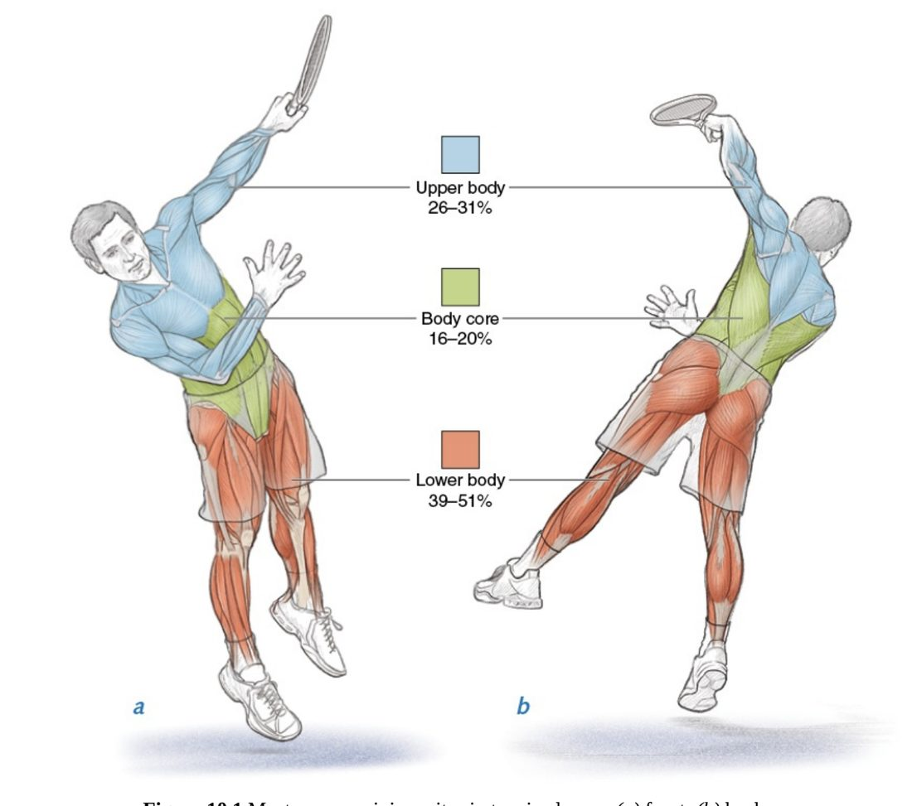
Trong phần còn lại của chương này, chúng tôi phác thảo một số bài tập và động tác giãn cơ phù hợp nhất để ngăn ngừa các chấn thương thông thường trong quần vợt. Thực hiện các bài tập sức mạnh liên quan đến phòng ngừa chấn thương mỗi ngày để cơ thể bạn được nghỉ ngơi giữa chừng. Các bài tập linh hoạt nên được thực hiện hàng ngày khi lịch trình của bạn cho phép. Bởi vì các bài tập linh hoạt có lợi nhất khi cơ bắp ấm lên, hãy cân nhắc rèn luyện tính linh hoạt sau một buổi tập hoặc trận đấu trên sân.
Giãn Bắp Chân
Cách Thực Hiện
- Đặt cả hai tay vào tường. Kéo vai của bạn trở lại và giữ cho lõi của bạn ổn định. 2. Duỗi thẳng chân phải về phía sau, không uốn cong đầu gối để duỗi thẳng chân phải phía dưới. Hãy chắc chắn rằng gót chân phải vẫn tiếp xúc với mặt đất. 3. Giữ căng trong 15 đến 30 giây. 4. Đổi chân và lặp lại cho bên còn lại.
Các Nhóm Cơ Tham Gia
Nguyên phát: Cơ bụng chân, cơ dép
Cơ bắp chân
Ứng Dụng Trong Quần Vợt
Nhiều người chơi quần vợt cảm thấy đau hoặc khó chịu ở bắp chân. Trong nhiều trường hợp, việc thiếu phạm vi chuyển động thích hợp góp phần gây ra chấn thương ở cẳng chân. Việc thiếu phạm vi chuyển động thích hợp cũng có thể hạn chế hiệu suất trên sân vì hai của cẳng chân—cơ bắp chân và cơ dép—là điểm dừng đầu tiên trong chuỗi động học từ mặt đất đến mục tiêu cuối cùng là truyền lực vào bóng. Đau bắp chân hoặc cảm giác căng cứng ở bắp chân thường xảy ra thường xuyên hơn nếu người chơi thi đấu phần lớn thời gian trên sân cứng. Các tay vợt cũng thường phàn nàn về tình trạng đau bắp chân khi chuyển từ thi đấu trên sân đất nện hoặc sân cỏ sang thi đấu trên sân cứng
Giữ Thăng Bằng Trên Ván Lắc
Cách Thực Hiện
- Từ từ đứng trên một tấm ván lắc lư. Giữ hai chân rộng bằng vai, cơ lõi co lại và xương bả vai hướng về phía sau. 2. Cố gắng giữ thăng bằng mà không cử động. 3. Giữ tư thế trong 30 đến 60 giây.
Các Nhóm Cơ Tham Gia
Nguyên phát: Peroneus longus, peroneus brevis, gastrocnemius,oleus
Hallucis longus, anterior tibialis, peroneus tertius Trọng tâm quần vợt
Bài tập này giúp phát triển khả năng nhận biết cơ thể hoặc nhận thức về cơ thể ở phần dưới cơ thể và có thể trực tiếp cải thiện khả năng giữ thăng bằng của người chơi quần vợt. Sự cân bằng rất quan trọng trên sân vì hầu hết các cú đánh và chuyển động được thực hiện trong môi trường truyền thống không ổn định, chẳng hạn như tư thế một chân. Vận động viên càng có nhiều nhận thức về cơ thể thì cô ấy càng có thể chuyển trọng lượng của mình vào các cú đánh tốt hơn, dẫn đến vận tốc bóng lớn hơn. Nhận thức về cơ thể tốt hơn này cũng có lợi trong việc hạn chế khả năng chấn thương, đặc biệt là ở phần dưới cơ thể.
Biến Thể
Giữ thăng bằng trên các bề mặt không bằng phẳng khác.
Biến Thể
của bài tập này có nhiều dạng. Bạn có thể thực hiện bài tập tương tự trên một chân, trong khi cầm quả bóng thuốc hoặc quả tạ hoặc thậm chí khi bị bịt mắt. Tất cả những
Biến Thể
này làm tăng độ khó của bài tập và là những bài tập tiến bộ tốt để cải thiện khả năng cảm nhận và giữ thăng bằng cho người chơi quần vợt
Đi Ngang Cổ Chân
Cách Thực Hiện
- Đứng hai chân rộng bằng vai. Thay đổi trọng lượng của bạn để bạn giữ thăng bằng ở hai bên bàn chân. 2. Bước một bước về phía trước bằng chân trái, sau đó là một bước ở bên chân phải. 3. Lặp lại các bước xen kẽ cho đến khi bạn thực hiện được năm bước trên mỗi chân.
Các Nhóm Cơ Tham Gia
Nguyên phát: Peroneus longus, peroneus brevis
Gastrocnemius, duy nhất
Ứng Dụng Trong Quần Vợt
Chấn thương mắt cá chân xảy ra trong quần vợt do sự thay đổi hướng nhanh chóng và lực lớn mà khớp mắt cá chân phải chịu đựng trong khi chơi. Đi bộ bên mắt cá chân là một cách tuyệt vời để tăng cường cơ bắp, dây chằng và gân ở mắt cá chân. Tăng cường các cấu trúc mắt cá chân này có thể giúp ngăn ngừa bong gân mắt cá chân đảo ngược, chấn thương mắt cá chân điển hình nhất gặp phải khi chơi quần vợt. Bong gân mắt cá chân đảo ngược xảy ra khi mắt cá chân bị lật ở bên ngoài hoặc mặt bên của bàn chân. Tổn thương điển hình nhất gặp phải là dây chằng mác; trong trường hợp bong gân nghiêm trọng hơn, dây chằng xương gót cũng có thể bị tổn thương. Bong gân mắt cá chân là chấn thương cấp tính thường xảy ra khi tay vợt đang chạy theo một đường bóng rộng hoặc khi tay vợt thay đổi hướng nhanh chóng và thô bạo. Một thói quen bao gồm đi bộ bên mắt cá chân có thể giúp củng cố mắt cá chân, điều này sẽ giúp bù đắp khả năng xảy ra chấn thương mắt cá chân.
Đi Bằng Gót Chân
Cách Thực Hiện
- Đứng hai chân rộng bằng vai.
- Bước về phía trước bằng gót chân trái, mũi chân nhấc lên khỏi mặt đất và hướng lên trời. Bước về phía trước bằng gót chân phải, mũi chân nhấc lên khỏi mặt đất và hướng lên trời. 3. Lặp lại, xen kẽ các chân cho đến khi bạn thực hiện được năm bước với mỗi chân.
Các Nhóm Cơ Tham Gia
Cơ bản: Cơ chày trước, cơ duỗi các ngón dài, cơ duỗi ảo giác dài, xương mác dài, xương mác thứ ba
Ứng Dụng Trong Quần Vợt
Đi bộ bằng gót chân phát triển sức mạnh ở các cơ, dây chằng và gân quanh mắt cá chân. Tuy nhiên, lợi ích lớn nhất của việc đi bộ bằng gót chân là nó giúp tăng cường sức mạnh cho cơ chày trước, giúp hạn chế xuất hiện tình trạng nẹp ống chân và các cơn đau liên quan đến ống chân. Đây là một bài tập cực kỳ quan trọng, đặc biệt đối với những người chơi quần vợt bị hạn chế về sức mạnh mắt cá chân và bị đau ở ống chân
Giãn Cơ Gấp Hông Tư Thế Quỳ
Cách Thực Hiện
- Quỳ gối trái trên sàn (hoặc trên đệm, khăn hoặc chiếu để giảm căng thẳng cho đầu gối). Bước chân phải về phía trước và lao tới sao cho đầu gối phải uốn cong 90 độ. Mở rộng cánh tay của bạn trên đầu, với khuỷu tay thẳng và bàn tay chạm vào nhau. 2. Từ từ đẩy hông trái về phía trước để tăng độ căng ở cơ gấp hông trái. Hãy chắc chắn rằng đầu gối phải của bạn không vượt quá bàn chân phải của bạn. 3. Giữ căng trong 15 đến 30 giây. 4. Lặp lại động tác kéo giãn ở chân đối diện.
Các Nhóm Cơ Tham Gia
Nguyên phát: Iliacus, psoas Major, trực tràng xương đùi
Vastus intermedius, sartorius
Ứng Dụng Trong Quần Vợt
Cơ gấp hông của một vận động viên quần vợt liên tục bị căng thẳng. Phong trào quần vợt tuyệt vời đòi hỏi người chơi phải ở tư thế thể thao thấp trong khi di chuyển cũng như trong hầu hết các cú đánh. Mặc dù vị trí thấp này lý tưởng cho các chuyển động nhanh hơn và chuyển trọng lượng lớn hơn trong các cú đánh nền và đánh vô-lê (đó là một điều tuyệt vời!), nhưng nó cũng làm ngắn các cơ của cơ gập hông (đó là một điều không tốt). Điều này có thể dẫn đến chấn thương và giảm phạm vi chuyển động, từ đó hạn chế hiệu suất. Động tác kéo giãn cơ gấp hông khi quỳ có thể giúp tăng hoặc ít nhất là duy trì độ dài của cơ gấp hông, điều này có thể cải thiện chuyển động trên sân cũng như giúp giảm các chấn thương liên quan đến hông và lõi
Massage Bằng Bóng Tennis
Cách Thực Hiện
- Ngồi trên ghế dài hoặc ghế. Đặt chân trần của bạn lên một quả bóng tennis. Quả bóng tennis nằm ở giữa bàn chân của bạn. 2. Từ từ di chuyển bàn chân của bạn về phía trước, phía sau và theo hình tròn để xoa bóp lòng bàn chân trong 30 giây hoặc cho đến khi cơn đau hoặc căng cứng của bạn giảm bớt. 3. Đổi chân và lặp lại quá trình với chân còn lại.
Các Nhóm Cơ Tham Gia
Cơ bản: Cơ bắp chân bên trong Quần vợt Trọng tâm Massage bằng bóng tennis không hẳn là một bài tập mà nó là một kỹ thuật phục hồi. Nó sẽ giữ cho lòng bàn chân của bạn được lỏng lẻo và giảm độ căng có thể gây ra do tiếp xúc với mặt đất quá nhiều và những thay đổi về hướng thường được yêu cầu trong quá trình luyện tập và thi đấu quần vợt. Đây cũng là một kỹ thuật tốt để giảm sự căng cứng ở gót chân và giữa bàn chân, đồng thời có thể làm giảm cơn đau do viêm cân gan chân gây ra. Cân gan chân là một dải mô liên kết dày, dạng sợi, bắt nguồn từ mặt dưới của xương gót (xương gót chân) và kéo dài dọc theo lòng bàn chân về phía các ngón chân.
Giãn Đầu Gối Về Ngực Khi Nằm Ngửa
Cách Thực Hiện
- Nằm ngửa trên sàn hoặc chiếu. Thư giãn vai của bạn. Mở rộng hoàn toàn chân và bàn chân của bạn, hướng ngón chân lên trời.
- Dùng cả hai tay nắm lấy chân phải ngay dưới đầu gối. Kéo chân phải về phía ngực bằng cách uốn cong đầu gối. 3. Giữ căng trong 15 đến 30 giây. 4. Trở lại vị trí ban đầu và đổi chân. Lặp lại động tác kéo giãn ở chân đối diện.
Các Nhóm Cơ Tham Gia
Cơ dựng cột sống, cơ nhiều ngón
Cơ mông lớn, cơ mông nhỡ
Ứng Dụng Trong Quần Vợt
Ở người chơi quần vợt, lưng dưới là một trong những vùng dễ bị tổn thương nhất trên toàn cơ thể. Mặc dù nhiều thứ có thể dẫn đến chấn thương, nhưng một yếu tố nguy cơ là phần lưng dưới thiếu linh hoạt. Nằm duỗi đầu gối đến ngực là một bài tập tuyệt vời để cải thiện tính linh hoạt của lưng dưới. Một chương trình tăng cường sức mạnh có cấu trúc cho lưng dưới có thể làm giảm đáng kể nguy cơ chấn thương lưng dưới trong tương lai. Các bài tập ở chương 5 và 6 cũng sẽ tăng cường sức mạnh cho cơ lưng và cơ cốt lõi
Giãn Cơ Gân Kheo Khi Nằm Ngửa
Cách Thực Hiện
- Nằm ngửa, vai áp xuống sàn, hai chân duỗi thẳng, mũi chân hướng lên trời. Đặt một dải kháng lực, một sợi dây hoặc một chiếc khăn quanh bàn chân phải của bạn. 2. Kéo hai đầu dây kháng lực để nhấc chân phải thẳng lên. 3. Giữ căng ở điểm cao nhất trong 15 đến 30 giây. 4. Trở lại vị trí ban đầu và đổi chân. Lặp lại động tác kéo giãn ở chân đối diện.
Các Nhóm Cơ Tham Gia
Chính: Cơ bắp tay đùi, cơ bán gân, cơ bán mạc
Cơ khoeo, cơ bụng, cơ dép
Ứng Dụng Trong Quần Vợt
Các cơ gân kheo (bắp tay đùi, cơ bán gân và cơ bán mạc) đóng vai trò chính trong việc duỗi hông khi di chuyển trên sân và liên quan nhiều đến các chuyển động giảm tốc khi thay đổi hướng. Nhóm gân kheo là một trong những vùng truyền thống căng ở người chơi quần vợt. Có mối liên hệ giữa độ căng gân kheo và chứng đau lưng dưới. Cải thiện tính linh hoạt của gân kheo sẽ làm giảm nguy cơ chấn thương ở lưng dưới và cũng sẽ cải thiện khả năng di chuyển trên sân
Giãn Tư Thế Số Bốn
Cách Thực Hiện
- Nằm ngửa trên sàn. Đặt xương mắt cá bên phải (xương ở bên ngoài mắt cá chân) lên cơ tứ đầu bên trái, ngay phía trên đầu gối trái. 2. Đặt tay phải vào giữa hai chân và tay trái ôm lấy chân trái. 3. Dùng cả hai tay, kéo chân trái về sau để tăng độ căng ở gân kheo. 4. Giữ trong 15 đến 30 giây. 5. Trở lại vị trí ban đầu và đổi chân. Lặp lại động tác kéo giãn ở chân đối diện.
Các Nhóm Cơ Tham Gia
cơ mông lớn, piriformis, cơ mông nhỡ
Iliocostalis, quadratus lumborum, gemellus superior, gemellus kém, cơ căng cân đùi, sartorius Tennis Focus
Các ở vùng sau của vận động viên phải chịu rất nhiều căng thẳng khi chơi quần vợt do yêu cầu chuyển trọng lượng trong các cú đánh quần vợt và duy trì trọng tâm thấp trong quá trình di chuyển. Những cơ này bắt buộc phải ở trạng thái co rút, căng thẳng trong suốt quá trình luyện tập quần vợt và thi đấu. Do đó, điều quan trọng là phải duy trì độ dài tối ưu của các cơ này, điều này sẽ cho phép hông xoay hoàn toàn và chuyển trọng lượng hiệu quả từ mặt đất lên thông qua chuỗi động học và cuối cùng là truyền năng lượng hiệu quả vào bóng
Giãn Cơ Duỗi Cẳng Tay
Cách Thực Hiện
- Bạn có thể thực hiện bài tập này trong khi quỳ (như trong hình), đứng hoặc
đang ngồi. Đặt lòng bàn tay phải của bạn xuống phía trước cơ thể, với cánh tay dang rộng trước ngực ở độ cao ngang vai.
- Dùng tay trái đẩy nhẹ tay phải để tăng độ giãn. 3. Giữ căng trong 15 đến 30 giây. 4. Đổi tay và lặp lại động tác kéo giãn ở cẳng tay đối diện.
Các Nhóm Cơ Tham Gia
Cơ bản: Cơ duỗi carpi ulnaris, cơ duỗi carpi radialis longus, cơ duỗi carpi radialis brevis
Ứng Dụng Trong Quần Vợt
Sự linh hoạt của cơ duỗi cẳng tay cực kỳ quan trọng đối với hầu hết các cú đánh quần vợt, nhưng nó ảnh hưởng trực tiếp đến chất lượng của cú đánh sau trong cú đánh nền trái tay. Phạm vi chuyển động chức năng càng lớn thì khả năng lưu trữ thế năng có thể được giải phóng trong giai đoạn tăng tốc của cú đánh nền càng lớn
Giãn Cơ Gấp Cẳng Tay
Cách Thực Hiện
- Bạn có thể thực hiện bài tập này trong khi quỳ (như trong hình), đứng hoặc
đang ngồi. Đặt lòng bàn tay phải của bạn xuống phía trước cơ thể, với cánh tay phải duỗi thẳng trước ngực ở độ cao ngang vai. Nhấc các ngón tay lên để chúng hướng lên.
- Dùng tay trái kéo nhẹ cổ tay về phía sau để tăng độ giãn. 3. Giữ căng trong 15 đến 30 giây. 4. Đổi tay và lặp lại động tác kéo giãn ở cẳng tay đối diện.
Các Nhóm Cơ Tham Gia
Cơ bản: Cơ gấp cổ tay trụ, cơ gấp ngón cái dài, cơ gấp tròn Tập trung quần vợt Không thể đánh giá thấp tầm quan trọng của tính linh hoạt thích hợp ở các cơ gấp cẳng tay. Sự linh hoạt phù hợp của cẳng tay là rất quan trọng đối với cơ chế đánh bóng hiệu quả vì khu vực này là một trong những bộ phận cuối cùng của cơ thể truyền năng lượng cho bóng khi tiếp xúc. Một vận động viên có độ linh hoạt kém sẽ gặp phải cơ chế cú đánh hạn chế do phạm vi chuyển động hạn chế, do đó làm giảm khả năng sản sinh lực và hiệu suất trên sân. Ngoài ra, phạm vi chuyển động kém có thể khiến vận động viên dễ gặp các vấn đề về cánh tay và vai hơn, có thể dẫn đến chấn thương.
Xoay Ngoài Kèm Ép Vai Ra Sau
Cách Thực Hiện
- Quỳ trên sàn (hoặc đệm) như hình hoặc đứng. Giữ một đoạn ống kháng hoặc dây kháng lực bằng cả hai tay, lòng bàn tay hướng lên, khuỷu tay cong, vai qua lại, đầu và cổ thư giãn, lõi ổn định.
- Xoay bàn tay ra khoảng 2 đến 3 inch (5 đến 8 cm) trong khi xoay ngón tay cái của bạn ra ngoài, sau đó rút bả vai lại. Giữ vị trí này trong hai hoặc ba giây. Đẩy ngực về phía trước khi bạn rút vai lại. 3. Đưa dưới sự kiểm soát về vị trí bắt đầu.
Các Nhóm Cơ Tham Gia
Chính: Cơ thang, cơ dưới gai, hình thoi lớn, hình thoi nhỏ Thứ hai: cơ lưng rộng
Ứng Dụng Trong Quần Vợt
Do có nhiều chấn thương do vận động quá mức xảy ra ở khớp vai nên điều quan trọng là phải tăng cường cơ quay cũng như cơ ổn định xương bả vai. Các cơ này thường hoạt động lệch tâm, đặc biệt là trong giai đoạn tiếp theo của các cú giao bóng và thuận tay. Bài tập này sẽ cải thiện tính toàn vẹn của đai vai bằng cách vận động các cơ theo hướng ngược lại với chức năng quần vợt của chúng, tức là đồng tâm. Ngoài ra, bài tập đặc biệt này sẽ giúp có tư thế thích hợp, đây cũng là mối quan tâm của nhiều người chơi quần vợt vì tính chất lặp đi lặp lại của môn thể thao này
Phần III — Phụ Lục
Đôi nét về hai tác giả E. Paul Roetert và Mark S. Kovacs.
Đôi Nét Về Tác Giả
E. Paul Roetert, Tiến sĩ, là Giám đốc điều hành của Liên minh Y tế, Giáo dục Thể chất, Giải trí và Khiêu vũ Hoa Kỳ (AAHPERD), nơi ông chịu trách nhiệm thúc đẩy khả năng lãnh đạo, nghiên cứu, giáo dục và các phương pháp hay nhất trong các ngành nghề hỗ trợ lối sống sáng tạo, lành mạnh và năng động. Trước vị trí này, Roetert là Giám đốc điều hành của Chương trình phát triển tay vợt và Giám đốc giải đấu của Hiệp hội quần vợt Hoa Kỳ (USTA) của Giải vô địch quần vợt trẻ em mở rộng Hoa Kỳ từ năm 2002 đến năm 2009. Ông cũng từng là Giám đốc điều hành của Chương trình Giáo dục Thể thao Hoa Kỳ (ASEP) và là Quản trị viên Khoa học Thể thao cho USTA, nơi ông đã phát triển chương trình khoa học thể thao. Roetert đã xuất bản nhiều sách về lĩnh vực quần vợt, bao gồm một số cuốn sách, hơn 20 chương sách và hơn 100 bài báo. Anh ấy là thành viên của Trường Cao đẳng Y học Thể thao Hoa Kỳ, Chuyên gia Thạc sĩ của Hiệp hội Quần vợt Chuyên nghiệp Hoa Kỳ (USPTA) và là Chuyên gia Danh dự của Cơ quan Đăng ký Quần vợt Chuyên nghiệp (PTR). Anh ấy là người nhận Giải thưởng Giáo dục năm 2002 từ Đại sảnh Danh vọng Quần vợt Quốc tế vì đã phục vụ xuất sắc cho môn quần vợt. Roetert có bằng Tiến sĩ về cơ sinh học tại Đại học Connecticut.
Mark S. Kovacs, Tiến sĩ, là Giám đốc cấp cao về Khoa học Thể thao và Giáo dục Huấn luyện của Hiệp hội Quần vợt Hoa Kỳ (USTA). Anh ấy là nhà vô địch đôi toàn Mỹ và NCAA cấp đại học tại Đại học Auburn. Sau khi thi đấu chuyên nghiệp, anh theo đuổi công việc tốt nghiệp thực hiện nghiên cứu về quần vợt cụ thể và có bằng tốt nghiệp về khoa học thể dục và bằng tiến sĩ về sinh lý học thể dục. Mark đã xuất bản và trình bày nghiên cứu về quần vợt trên nhiều tạp chí khoa học hàng đầu cũng như tại các hội nghị quốc gia và quốc tế. Ông là tác giả của cuốn sách về điều hòa quần vợt Huấn luyện quần vợt: Nâng cao thành tích trên sân và hiện là Trợ lý Tổng biên tập của Tạp chí Sức mạnh và Điều hòa. Mark cũng vẫn đang tích cực làm việc với tư cách là chuyên gia sức mạnh và thể lực đào tạo các tay vợt chuyên nghiệp ưu tú, bao gồm cả những vận động viên đã tham gia tất cả các giải Grand Slam.